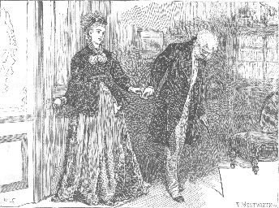

CHAPTER THE FORTY-FIRST.
LADY LUNDIE DOES HER DUTY.
THE scene opens on a bedroom--and discloses, in broad daylight, a lady in bed.
Persons with an irritable sense of propriety, whose self-appointed duty it is to be always crying out, are warned to pause before they cry out on this occasion. The lady now presented to view being no less a person than Lady Lundie herself, it follows, as a matter of course, that the utmost demands of propriety are, by the mere assertion of that fact, abundantly and indisputably satisfied. To say that any thing short of direct moral advantage could, by any possibility, accrue to any living creature by the presentation of her ladyship in a horizontal, instead of a perpendicular position, is to assert that Virtue is a question of posture, and that Respectability ceases to assert itself when it ceases to appear in morning or evening dress. Will any body be bold enough to say that? Let nobody cry out, then, on the present occasion.
Lady Lundie was in bed.
Her ladyship had received Blanche's written announcement of the sudden stoppage of the bridal tour; and had penned the answer to Sir Patrick--the receipt of which at Ham Farm has been already described. This done, Lady Lundie felt it due to herself to take a becoming position in her own house, pending the possible arrival of Sir Patrick's reply. What does a right-minded woman do, when she has reason to believe that she is cruelly distrusted by the members of her own family? A right-minded woman feels it so acutely that she falls ill. Lady Lundie fell ill accordingly.
The case being a serious one, a medical practitioner of the highest grade in the profession was required to treat it. A physician from the neighboring town of Kirkandrew was called in.
The physician came in a carriage and pair, with the necessary bald head, and the indispensable white cravat. He felt her ladyship's pulse, and put a few gentle questions. He turned his back solemnly, as only a great doctor can, on his own positive internal conviction that his patient had nothing whatever the matter with her. He said, with every appearance of believing in himself, "Nerves, Lady Lundie. Repose in bed is essentially necessary. I will write a prescription." He prescribed, with perfect gravity: Aromatic Spirits of Ammonia--16 drops. Spirits of Red Lavender--10 drops. Syrup of Orange Peel--2 drams. Camphor Julep--1 ounce. When he had written, Misce fiat Hanstus (instead of Mix a Draught)--when he had added, Ter die Sumendus (instead of To be taken Three times a day)--and when he had certified to his own Latin, by putting his initials at the end, he had only to make his bow; to slip two guineas into his pocket; and to go his way, with an approving professional conscience, in the character of a physician who had done his duty.
Lady Lundie was in bed. The visible part of her ladyship was perfectly attired, with a view to the occasion. A fillet of superb white lace encircled her head. She wore an adorable invalid jacket of white cambric, trimmed with lace and pink ribbons. The rest was--bed-clothes. On a table at her side stood the Red Lavender Draught--in color soothing to the eye; in flavor not unpleasant to the taste. A book of devotional character was near it. The domestic ledgers, and the kitchen report for the day, were ranged modestly behind the devout book. (Not even her ladyship's nerves, observe, were permitted to interfere with her ladyship's duty.) A fan, a smelling-bottle, and a handkerchief lay within reach on the counterpane. The spacious room was partially darkened. One of the lower windows was open, affording her ladyship the necessary cubic supply of air. The late Sir Thomas looked at his widow, in effigy, from the wall opposite the end of the bed. Not a chair was out of its place; not a vestige of wearing apparel dared to show itself outside the sacred limits of the wardrobe and the drawers. The sparkling treasures of the toilet-table glittered in the dim distance, The jugs and basins were of a rare and creamy white; spotless and beautiful to see. Look where you might, you saw a perfect room. Then look at the bed--and you saw a perfect woman, and completed the picture.
It was the day after Anne's appearance at Swanhaven--toward the end of the afternoon.
Lady Lundie's own maid opened the door noiselessly, and stole on tip-toe to the bedside. Her ladyship's eyes were closed. Her ladyship suddenly opened them.
"Not asleep, Hopkins. Suffering. What is it?"
Hopkins laid two cards on the counterpane. "Mrs. Delamayn, my lady--and Mrs. Glenarm."
"They were told I was ill, of course?"
"Yes, my lady. Mrs. Glenarm sent for me. She went into the library, and wrote this note." Hopkins produced the note, neatly folded in three-cornered form.
"Have they gone?"
"No, my lady. Mrs. Glenarm told me Yes or No would do for answer, if you could only have the goodness to read this."
"Thoughtless of Mrs. Glenarm--at a time when the doctor insists on perfect repose," said Lady Lundie. "It doesn't matter. One sacrifice more or less is of very little consequence."
She fortified herself by an application of the smelling-bottle, and opened the note. It ran thus:
"So grieved, dear Lady Lundie, to hear that you are a prisoner in your room! I had taken the opportunity of calling with Mrs. Delamayn, in the hope that I might be able to ask you a question. Will your inexhaustible kindness forgive me if I ask it in writing? Have you had any unexpected news of Mr. Arnold Brinkworth lately? I mean, have you heard any thing about him, which has taken you very much by surprise? I have a serious reason for asking this. I will tell you what it is, the moment you are able to see me. Until then, one word of answer is all I expect. Send word down--Yes, or No. A thousand apologies--and pray get better soon!"
The singular question contained in this note suggested one of two inferences to Lady Lundie's mind. Either Mrs. Glenarm had heard a report of the unexpected return of the married couple to England--or she was in the far more interesting and important position of possessing a clew to the secret of what was going on under the surface at Ham Farm. The phrase used in the note, "I have a serious reason for asking this," appeared to favor the latter of the two interpretations. Impossible as it seemed to be that Mrs. Glenarm could know something about Arnold of which Lady Lundie was in absolute ignorance, her ladyship's curiosity (already powerfully excited by Blanche's mysterious letter) was only to be quieted by obtaining the necessary explanation forthwith, at a personal interview.
"Hopkins," she said, "I must see Mrs. Glenarm."
Hopkins respectfully held up her hands in horror. Company in the bedroom in the present state of her ladyship's health!
"A matter of duty is involved in this, Hopkins. Give me the glass."
Hopkins produced an elegant little hand-mirror. Lady Lundie carefully surveyed herself in it down to the margin of the bedclothes. Above criticism in every respect? Yes--even when the critic was a woman.
"Show Mrs. Glenarm up here."
In a minute or two more the iron-master's widow fluttered into the room--a little over-dressed as usual; and a little profuse in expressions of gratitude for her ladyship's kindness, and of anxiety about her ladyship's health. Lady Lundie endured it as long as she could--then stopped it with a gesture of polite remonstrance, and came to the point.
"Now, my dear--about this question in your note? Is it possible you have heard already that Arnold Brinkworth and his wife have come back from Baden?" Mrs. Glenarm opened her eyes in astonishment. Lady Lundie put it more plainly. "They were to have gone on to Switzerland, you know, for their wedding tour, and they suddenly altered their minds, and came back to England on Sunday last."
"Dear Lady Lundie, it's not that! Have you heard nothing about Mr. Brinkworth except what you have just told me?"
"Nothing."
There was a pause. Mrs. Glenarm toyed hesitatingly with her parasol. Lady Lundie leaned forward in the bed, and looked at her attentively.
"What have you heard about him?" she asked.
Mrs. Glenarm was embarrassed. "It's so difficult to say," she began.
"I can bear any thing but suspense," said Lady Lundie. "Tell me the worst."
Mrs. Glenarm decided to risk it. "Have you never heard," she asked, "that Mr. Brinkworth might possibly have committed himself with another lady before he married Miss Lundie?"
Her ladyship first closed her eyes in horror and then searched blindly on the counterpane for the smelling-bottle. Mrs. Glenarm gave it to her, and waited to see how the invalid bore it before she said any more.
"There are things one must hear," remarked Lady Lundie. "I see an act of duty involved in this. No words can describe how you astonish me. Who told you?"
"Mr. Geoffrey Delamayn told me."
Her ladyship applied for the second time to the smelling-bottle. "Arnold Brinkworth's most intimate friend!" she exclaimed. "He ought to know if any body does. This is dreadful. Why should Mr. Geoffrey Delamayn tell you?"
"I am going to marry him," answered Mrs. Glenarm. "That is my excuse, dear Lady Lundie, for troubling you in this matter."
Lady Lundie partially opened her eyes in a state of faint bewilderment. "I don't understand," she said. "For Heaven's sake explain yourself!"
"Haven't you heard about the anonymous letters?" asked Mrs. Glenarm.
Yes. Lady Lundie had heard about the letters. But only what the public in general had heard. The name of the lady in the background not mentioned; and Mr. Geoffrey Delamayn assumed to be as innocent as the babe unborn. Any mistake in that assumption? "Give me your hand, my poor dear, and confide it all to me!"
"He is not quite innocent," said Mrs. Glenarm. "He owned to a foolish flirtation--all her doing, no doubt. Of course, I insisted on a distinct explanation. Had she really any claim on him? Not the shadow of a claim. I felt that I only had his word for that--and I told him so. He said he could prove it--he said he knew her to be privately married already. Her husband had disowned and deserted her; she was at the end of her resources; she was desperate enough to attempt any thing. I thought it all very suspicious--until Geoffrey mentioned the man's name. That certainly proved that he had cast off his wife; for I myself knew that he had lately married another person."
Lady Lundie suddenly started up from her pillow--honestly agitated; genuinely alarmed by this time.
"Mr. Delamayn told you the man's name?" she said, breathlessly.
"Yes."
"Do I know it?"
"Don't ask me!"
Lady Lundie fell back on the pillow.
Mrs. Glenarm rose to ring for help. Before she could touch the bell, her ladyship had rallied again.
"Stop!" she cried. "I can confirm it! It's true, Mrs. Glenarm! it's true! Open the silver box on the toilet-table--you will find the key in it. Bring me the top letter. Here! Look at it. I got this from Blanche. Why have they suddenly given up their bridal tour? Why have they gone back to Sir Patrick at Ham Farm? Why have they put me off with an infamous subterfuge to account for it? I felt sure something dreadful had happened. Now I know what it is!" She sank back again, with closed eyes, and repeated the words, in a fierce whisper, to herself. "Now I know what it is!"
Mrs. Glenarm read the letter. The reason given for the suspiciously sudden return of the bride and bridegroom was palpably a subterfuge--and, more remarkable still, the name of Anne Silvester was connected with it. Mrs. Glenarm became strongly agitated on her side.
"This is a confirmation," she said. "Mr. Brinkworth has been found out--the woman is married to him--Geoffrey is free. Oh, my dear friend, what a load of anxiety you have taken off my mind! That vile wretch--"
Lady Lundie suddenly opened her eyes.
"Do you mean," she asked, "the woman who is at the bottom of all the mischief?"
"Yes. I saw her yesterday. She forced herself in at Swanhaven. She called him Geoffrey Delamayn. She declared herself a single woman. She claimed him before my face in the most audacious manner. She shook my faith, Lady Lundie--she shook my faith in Geoffrey!"
"Who is she?"
"Who?" echoed Mrs. Glenarm. "Don't you even know that? Why her name is repeated half a dozen times in this letter!"
Lady Lundie uttered a scream that rang through the room. Mrs. Glenarm started to her feet. The maid appeared at the door in terror. Her ladyship motioned to the woman to withdraw again instantly, and then pointed to Mrs. Glenarm's chair.
"Sit down," she said. "Let me have a minute or two of quiet. I want nothing more."
The silence in the room was unbroken until Lady Lundie spoke again. She asked for Blanche's letter. After reading it carefully, she laid it aside, and fell for a while into deep thought.
"I have done Blanche an injustice!" she exclaimed. "My poor Blanche!"
"You think she knows nothing about it?"
"I am certain of it! You forget, Mrs. Glenarm, that this horrible discovery casts a doubt on my step-daughter's marriage. Do you think, if she knew the truth, she would write of a wretch who has mortally injured her as she writes here? They have put her off with the excuse that she innocently sends to me. I see it as plainly as I see you! Mr. Brinkworth and Sir Patrick are in league to keep us both in the dark. Dear child! I owe her an atonement. If nobody else opens her eyes, I will do it. Sir Patrick shall find that Blanche has a friend in Me!"
A smile--the dangerous smile of an inveterately vindictive woman thoroughly roused--showed itself with a furtive suddenness on her face. Mrs. Glenarm was a little startled. Lady Lundie below the surface--as distinguished from Lady Lundie on the surface--was not a pleasant object to contemplate.
"Pray try to compose yourself," said Mrs. Glenarm. "Dear Lady Lundie, you frighten me!"
The bland surface of her ladyship appeared smoothly once more; drawn back, as it were, over the hidden inner self, which it had left for the moment exposed to view.
"Forgive me for feeling it!" she said, with the patient sweetness which so eminently distinguished her in times of trial. "It falls a little heavily on a poor sick woman--innocent of all suspicion, and insulted by the most heartless neglect. Don't let me distress you. I shall rally, my dear; I shall rally! In this dreadful calamity--this abyss of crime and misery and deceit--I have no one to depend on but myself. For Blanche's sake, the whole thing must be cleared up--probed, my dear, probed to the depths. Blanche must take a position that is worthy of her. Blanche must insist on her rights, under My protection. Never mind what I suffer, or what I sacrifice. There is a work of justice for poor weak Me to do. It shall be done!" said her ladyship, fanning herself with an aspect of illimitable resolution. "It shall be done!"
"But, Lady Lundie what can you do? They are all away in the south. And as for that abominable woman--"
Lady Lundie touched Mrs. Glenarm on the shoulder with her fan.
"I have my surprise in store, dear friend, as well as you. That abominable woman was employed as Blanche's governess in this house. Wait! that is not all. She left us suddenly--ran away--on the pretense of being privately married. I know where she went. I can trace what she did. I can find out who was with her. I can follow Mr. Brinkworth's proceedings, behind Mr. Brinkworth's back. I can search out the truth, without depending on people compromised in this black business, whose interest it is to deceive me. And I will do it to-day!" She closed the fan with a sharp snap of triumph, and settled herself on the pillow in placid enjoyment of her dear friend's surprise.
Mrs. Glenarm drew confidentially closer to the bedside. "How can you manage it?" she asked, eagerly. "Don't think me curious. I have my interest, too, in getting at the truth. Don't leave me out of it, pray!"
"Can you come back to-morrow, at this time?"
"Yes! yes!"
"Come, then--and you shall know."
"Can I be of any use?"
"Not at present."
"Can my uncle be of any use?"
"Do you know where to communicate with Captain Newenden?"
"Yes--he is staying with some friends in Sussex."
"We may possibly want his assistance. I can't tell yet. Don't keep Mrs. Delamayn waiting any longer, my dear. I shall expect you to-morrow."
They exchanged an affectionate embrace. Lady Lundie was left alone.
Her ladyship resigned herself to meditation, with frowning brow and close-shut lips. She looked her full age, and a year or two more, as she lay thinking, with her head on her hand, and her elbow on the pillow. After committing herself to the physician (and to the red lavender draught) the commonest regard for consistency made it necessary that she should keep her bed for that day. And yet it was essential that the proposed inquiries should be instantly set on foot. On the one hand, the problem was not an easy one to solve; on the other, her ladyship was not an easy one to beat. How to send for the landlady at Craig Fernie, without exciting any special suspicion or remark--was the question before her. In less than five minutes she had looked back into her memory of current events at Windygates--and had solved it.
Her first proceeding was to ring the bell for her maid.
"I am afraid I frightened you, Hopkins. The state of my nerves. Mrs. Glenarm was a little sudden with some news that surprised me. I am better now--and able to attend to the household matters. There is a mistake in the butcher's account. Send the cook here."
She took up the domestic ledger and the kitchen report; corrected the butcher; cautioned the cook; and disposed of all arrears of domestic business before Hopkins was summoned again. Having, in this way, dextrously prevented the woman from connecting any thing that her mistress said or did, after Mrs. Glenarm's departure, with any thing that might have passed during Mrs. Glenarm's visit, Lady Lundie felt herself at liberty to pave the way for the investigation on which she was determined to enter before she slept that night.
"So much for the indoor arrangements," she said. "You must be my prime minister, Hopkins, while I lie helpless here. Is there any thing wanted by the people out of doors? The coachman? The gardener?"
"I have just seen the gardener, my lady. He came with last week's accounts. I told him he couldn't see your ladyship to-day."
"Quite right. Had he any report to make?"
"No, my lady."
"Surely, there was something I wanted to say to him--or to somebody else? My memorandum-book, Hopkins. In the basket, on that chair. Why wasn't the basket placed by my bedside?"
Hopkins brought the memorandum-book. Lady Lundie consulted it (without the slightest necessity), with the same masterly gravity exhibited by the doctor when he wrote her prescription (without the slightest necessity also).
"Here it is," she said, recovering the lost remembrance. "Not the gardener, but the gardener's wife. A memorandum to speak to her about Mrs. Inchbare. Observe, Hopkins, the association of ideas. Mrs. Inchbare is associated with the poultry; the poultry are associated with the gardener's wife; the gardener's wife is associated with the gardener--and so the gardener gets into my head. Do you see it? I am always trying to improve your mind. You do see it? Very well. Now about Mrs. Inchbare? Has she been here again?"
"No, my lady."
"I am not at all sure, Hopkins, that I was right in declining to consider the message Mrs. Inchbare sent to me about the poultry. Why shouldn't she offer to take any fowls that I can spare off my hands? She is a respectable woman; and it is important to me to live on good terms with al my neighbors, great and small. Has she got a poultry-yard of her own at Craig Fernie?"
"Yes, my lady. And beautifully kept, I am told."
"I really don't see--on reflection, Hopkins--why I should hesitate to deal with Mrs. Inchbare. (I don't think it beneath me to sell the game killed on my estate to the poulterer.) What was it she wanted to buy? Some of my black Spanish fowls?"
"Yes, my lady. Your ladyship's black Spaniards are famous all round the neighborhood. Nobody has got the breed. And Mrs. Inchbare--"
"Wants to share the distinction of having the breed with me," said Lady Lundie. "I won't appear ungracious. I will see her myself, as soon as I am a little better, and tell her that I have changed my mind. Send one of the men to Craig Fernie with a message. I can't keep a trifling matter of this sort in my memory--send him at once, or I may forget it. He is to say I am willing to see Mrs. Inchbare, about the fowls, the first time she finds it convenient to come this way."
"I am afraid, my lady--Mrs. Inchbare's heart is so set on the black Spaniards--she will find it convenient to come this way at once as fast as her feet can carry her."
"In that case, you must take her to the gardener's wife. Say she is to have some eggs--on condition, of course, of paying the price for them. If she does come, mind I hear of it."
Hopkins withdrew. Hopkins's mistress reclined on her comfortable pillows and fanned herself gently. The vindictive smile reappeared on her face. "I fancy I shall be well enough to see Mrs. Inchbare," she thought to herself. "And it is just possible that the conversation may get beyond the relative merits of her poultry-yard and mine."
A lapse of little more than two hours proved Hopkins's estimate of the latent enthusiasm in Mrs. Inchbare's character to have been correctly formed. The eager landlady appeared at Windygates on the heels of the returning servant. Among the long list of human weaknesses, a passion for poultry seems to have its practical advantages (in the shape of eggs) as compared with the more occult frenzies for collecting snuff-boxes and fiddles, and amassing autographs and old postage-stamps. When the mistress of Craig Fernie was duly announced to the mistress of Windygates, Lady Lundie developed a sense of humor for the first time in her life. Her ladyship was feebly merry (the result, no doubt, of the exhilarating properties of the red lavender draught) on the subject of Mrs. Inchbare and the Spanish fowls.
"Most ridiculous, Hopkins! This poor woman must be suffering from a determination of poultry to the brain. Ill as I am, I should have thought that nothing could amuse me. But, really, this good creature starting up, and rushing here, as you say, as fast as her feet can carry her--it's impossible to resist it! I positively think I must see Mrs. Inchbare. With my active habits, this imprisonment to my room is dreadful. I can neither sleep nor read. Any thing, Hopkins, to divert my mind from myself: It's easy to get rid of her if she is too much for me. Send her up."
Mrs. Inchbare made her appearance, courtesying deferentially; amazed at the condescension which admitted her within the hallowed precincts of Lady Lundie's room.
"Take a chair," said her ladyship, graciously. "I am suffering from illness, as you perceive."
"My certie! sick or well, yer leddyship's a braw sight to see!" returned Mrs. Inchbare profoundly impressed by the elegant costume which illness assumes when illness appears in the regions of high life.
"I am far from being in a fit state to receive any body," proceeded Lady Lundie. "But I had a motive for wishing to speak to you when you next came to my house. I failed to treat a proposal you made to me, a short time since, in a friendly and neighborly way. I beg you to understand that I regret having forgotten the consideration due from a person in my position to a person in yours. I am obliged to say this under very unusual circumstances," added her ladyship, with a glance round her magnificent bedroom, "through your unexpected promptitude in favoring me with a call. You have lost no time, Mrs. Inchbare, in profiting by the message which I had the pleasure of sending to you."
"Eh, my leddy, I wasna' that sure (yer leddyship having ance changed yer mind) but that ye might e'en change again if I failed to strike, as they say, while the iron's het. I crave yer pardon, I'm sure, if I ha' been ower hasty. The pride o' my hairt's in my powltry--and the black Spaniards' (as they ca' them) are a sair temptation to me to break the tenth commandment, sae lang as they're a' in yer leddyship's possession, and nane o' them in mine."
"I am shocked to hear that I have been the innocent cause of your falling into temptation, Mrs. Inchbare! Make your proposal--and I shall be happy to meet it, if I can."
"I must e'en be content wi' what yer leddyship will condescend on. A haitch o' eggs if I can come by naething else."
"There is something else you would prefer to a hatch of eggs?"
"I wad prefer," said Mrs. Inchbare, modestly, "a cock and twa pullets."
"Open the case on the table behind you," said Lady Lundie, "and you will find some writing paper inside. Give me a sheet of it--and the pencil out of the tray."
Eagerly watched by Mrs. Inchbare, she wrote an order to the poultry-woman, and held it out with a gracious smile.
"Take that to the gardener's wife. If you agree with her about the price, you can have the cock and the two pullets."
Mrs. Inchbare opened her lips--no doubt to express the utmost extremity of human gratitude. Before she had said three words, Lady Lundie's impatience to reach the end which she had kept in view from the time when Mrs. Glenarm had left the house burst the bounds which had successfully restrained it thus far. Stopping the landlady without ceremony, she fairly forced the conversation to the subject of Anne Silvester's proceedings at the Craig Fernie inn.
"How are you getting on at the hotel, Mrs. Inchbare? Plenty of tourists, I suppose, at this time of year?"
"Full, my leddy (praise Providence), frae the basement to the ceiling."
"You had a visitor, I think, some time since of whom I know something? A person--" She paused, and put a strong constraint on herself. There was no alternative but to yield to the hard necessity of making her inquiry intelligible. "A lady," she added, "who came to you about the middle of last month."
"Could yer leddyship condescend on her name?"
Lady Lundie put a still stronger constraint on herself. "Silvester," she said, sharply.
"Presairve us a'!" cried Mrs. Inchbare. "It will never be the same that cam' driftin' in by hersel'--wi' a bit bag in her hand, and a husband left daidling an hour or mair on the road behind her?"
"I have no doubt it is the same."
"Will she be a freend o' yer leddyship's?" asked Mrs. Inchbare, feeling her ground cautiously.
"Certainly not!" said Lady Lundie. "I felt a passing curiosity about her--nothing more."
Mrs. Inchbare looked relieved. "To tell ye truth, my leddy, there was nae love lost between us. She had a maisterfu' temper o' her ain--and I was weel pleased when I'd seen the last of her."
"I can quite understand that, Mrs. Inchbare--I know something of her temper myself. Did I understand you to say that she came to your hotel alone, and that her husband joined her shortly afterward?"
"E'en sae, yer leddyship. I was no' free to gi' her house-room in the hottle till her husband daidled in at her heels and answered for her."
"I fancy I must have seen her husband," said Lady Lundie. "What sort of a man was he?"
Mrs. Inchbare replied in much the same words which she had used in answering the similar question put by Sir Patrick.
"Eh! he was ower young for the like o' her. A pratty man, my leddy--betwixt tall and short; wi' bonny brown eyes and cheeks, and fine coal-blaik hair. A nice douce-spoken lad. I hae naething to say against him--except that he cam' late one day, and took leg-bail betimes the next morning, and left madam behind, a load on my hands."
The answer produced precisely the same effect on Lady Lundie which it had produced on Sir Patrick. She, also, felt that it was too vaguely like too many young men of no uncommon humor and complexion to be relied on. But her ladyship possessed one immense advantage over her brother-in-law in attempting to arrive at the truth. She suspected Arnold--and it was possible, in her case, to assist Mrs. Inchbare's memory by hints contributed from her own superior resources of experience and observation.
"Had he any thing about him of the look and way of a sailor?" she asked. "And did you notice, when you spoke to him, that he had a habit of playing with a locket on his watch-chain?"
"There he is, het aff to a T!" cried Mrs. Inchbare. "Yer leddyship's weel acquented wi' him--there's nae doot o' that."
"I thought I had seen him," said Lady Lundie. "A modest, well-behaved young man, Mrs. Inchbare, as you say. Don't let me keep you any longer from the poultry-yard. I am transgressing the doctor's orders in seeing any body. We quite understand each other now, don't we? Very glad to have seen you. Good-evening."
So she dismissed Mrs. Inchbare, when Mrs. Inchbare had served her purpose.
Most women, in her position, would have been content with the information which she had now obtained. But Lady Lundie--having a man like Sir Patrick to deal with--determined to be doubly sure of her facts before she ventured on interfering at Ham Farm. She had learned from Mrs. Inchbare that the so-called husband of Anne Silvester had joined her at Craig Fernie on the day when she arrived at the inn, and had left her again the next morning. Anne had made her escape from Windygates on the occasion of the lawn-party--that is to say, on the fourteenth of August. On the same day Arnold Brinkworth had taken his departure for the purpose of visiting the Scotch property left to him by his aunt. If Mrs. Inchbare was to be depended on, he must have gone to Craig Fernie instead of going to his appointed destination--and must, therefore, have arrived to visit his house and lands one day later than the day which he had originally set apart for that purpose. If this fact could be proved, on the testimony of a disinterested witness, the case against Arnold would be strengthened tenfold; and Lady Lundie might act on her discovery with something like a certainty that her information was to be relied on.
After a little consideration she decided on sending a messenger with a note of inquiry addressed to Arnold's steward. The apology she invented to excuse and account for the strangeness of the proposed question, referred it to a little family discussion as to the exact date of Arnold's arrival at his estate, and to a friendly wager in which the difference of opinion had ended. If the steward could state whether his employer had arrived on the fourteenth or on the fifteenth of August, that was all that would be wanted to decide the question in dispute.
Having written in those terms, Lady Lundie gave the necessary directions for having the note delivered at the earliest possible hour on the next morning; the messenger being ordered to make his way back to Windygates by the first return train on the same day.
This arranged, her ladyship was free to refresh herself with another dose of the red lavender draught, and to sleep the sleep of the just who close their eyes with the composing conviction that they have done their duty.
The events of the next day at Windygates succeeded each other in due course, as follows:
The post arrived, and brought no reply from Sir Patrick. Lady Lundie entered that incident on her mental register of debts owed by her brother-in-law--to be paid, with interest, when the day of reckoning came.
Next in order occurred the return of the messenger with the steward's answer.
He had referred to his Diary; and he had discovered that Mr. Brinkworth had written beforehand to announce his arrival at his estate for the fourteenth of August--but that he had not actually appeared until the fifteenth. The one discovery needed to substantiate Mrs. Inchbare's evidence being now in Lady Lundie's possession, she decided to allow another day to pass--on the chance that Sir Patrick might alter his mind, and write to her. If no letter arrived, and if nothing more was received from Blanche, she resolved to leave Windygates by the next morning's train, and to try the bold experiment of personal interference at Ham Farm.
The third in the succession of events was the appearance of the doctor to pay his professional visit.
A severe shock awaited him. He found his patient cured by the draught! It was contrary to all rule and precedent; it savored of quackery--the red lavender had no business to do what the red lavender had done--but there she was, nevertheless, up and dressed, and contemplating a journey to London on the next day but one. "An act of duty, doctor, is involved in this--whatever the sacrifice, I must go!" No other explanation could be obtained. The patient was plainly determined--nothing remained for the physician but to retreat with unimpaired dignity and a paid fee. He did it. "Our art," he explained to Lady Lundie in confidence, "is nothing, after all, but a choice between alternatives. For instance. I see you--not cured, as you think--but sustained by abnormal excitement. I have to ask which is the least of the two evils--to risk letting you travel, or to irritate you by keeping you at home. With your constitution, we must risk the journey. Be careful to keep the window of the carriage up on the side on which the wind blows. Let the extremities be moderately warm, and the mind easy--and pray don't omit to provide yourself with a second bottle of the Mixture before you start." He made his bow, as before--he slipped two guineas into his pocket, as before--and he went his way, as before, with an approving conscience, in the character of a physician who had done his duty. (What an enviable profession is Medicine! And why don't we all belong to it?)
The last of the events was the arrival of Mrs. Glenarm.
"Well?" she began, eagerly, "what news?"
The narrative of her ladyship's discoveries--recited at full length; and the announcement of her ladyship's resolution--declared in the most uncompromising terms--raised Mrs. Glenarm's excitement to the highest pitch.
"You go to town on Saturday?" she said. "I will go with you. Ever since that woman declared she should be in London before me, I have been dying to hasten my journey--and it is such an opportunity to go with you! I can easily manage it. My uncle and I were to have met in London, early next week, for the foot-race. I have only to write and tell him of my change of plans.--By-the-by, talking of my uncle, I have heard, since I saw you, from the lawyers at Perth."
"More anonymous letters?"
"One more--received by the lawyers this time. My unknown correspondent has written to them to withdraw his proposal, and to announce that he has left Perth. The lawyers recommended me to stop my uncle from spending money uselessly in employing the London police. I have forwarded their letter to the captain; and he will probably be in town to see his solicitors as soon as I get there with you. So much for what I have done in this matter. Dear Lady Lundie--when we are at our journey's end, what do you mean to do?"
"My course is plain," answered her ladyship, calmly. "Sir Patrick will hear from me, on Sunday morning next, at Ham Farm."
"Telling him what you have found out?"
"Certainly not! Telling him that I find myself called to London by business, and that I propose paying him a short visit on Monday next."
"Of course, he must receive you?"
"I think there is no doubt of that. Even his hatred of his brother's widow can hardly go to the length--after leaving my letter unanswered--of closing his doors against me next."
"How will you manage it when you get there?"
"When I get there, my dear, I shall be breathing an atmosphere of treachery and deceit; and, for my poor child's sake (abhorrent as all dissimulation is to me), I must be careful what I do. Not a word will escape my lips until I have first seen Blanche in private. However painful it may be, I shall not shrink from my duty, if my duty compels me to open her eyes to the truth. Sir Patrick and Mr. Brinkworth will have somebody else besides an inexperienced young creature to deal with on Monday next. I shall be there."
With that formidable announcement, Lady Lundie closed the conversation; and Mrs. Glenarm rose to take her leave.
"We meet at the Junction, dear Lady Lundie?"
"At the Junction, on Saturday."
CHAPTER THE FORTY-SECOND.
THE SMOKING-ROOM WINDOW.
"I CAN'T believe it! I won't believe it! You're trying to part me from my husband--you're trying to set me against my dearest friend. It's infamous. It's horrible. What have I done to you? Oh, my head! my head! Are you trying to drive me mad?"
Pale and wild; her hands twisted in her hair; her feet hurrying her aimlessly to and fro in the room--so Blanche answered her step-mother, when the object of Lady Lundie's pilgrimage had been accomplished, and the cruel truth had been plainly told.
Her ladyship sat, superbly composed, looking out through the window at the placid landscape of woods and fields which surrounded Ham Farm.
"I was prepared for this outbreak," she said, sadly. "These wild words relieve your over-burdened heart, my poor child. I can wait, Blanche--I can wait!"
Blanche stopped, and confronted Lady Lundie.
"You and I never liked each other," she said. "I wrote you a pert letter from this place. I have always taken Anne's part against you. I have shown you plainly--rudely, I dare say--that I was glad to be married and get away from you. This is not your revenge, is it?"
"Oh, Blanche, Blanche, what thoughts to think! what words to say! I can only pray for you."
"I am mad, Lady Lundie. You bear with mad people. Bear with me. I have been hardly more than a fortnight married. I love him--I love her--with all my heart. Remember what you have told me about them. Remember! remember! remember!"
She reiterated the words with a low cry of pain. Her hands went up to her head again; and she returned restlessly to pacing this way and that in the room.
Lady Lundie tried the effect of a gentle remonstrance. "For your own sake," she said, "don't persist in estranging yourself from me. In this dreadful trial, I am the only friend you have."
Blanche came back to her step-mother's chair; and looked at her steadily, in silence. Lady Lundie submitted to inspection--and bore it perfectly.
"Look into my heart," she said. "Blanche! it bleeds for you!"
Blanche heard, without heeding. Her mind was painfully intent on its own thoughts. "You are a religious woman," she said, abruptly. "Will you swear on your Bible, that what you told me is true?"
"My Bible!" repeated Lady Lundie with sorrowful emphasis. "Oh, my child! have you no part in that precious inheritance? Is it not your Bible, too?"
A momentary triumph showed itself in Blanche's face. "You daren't swear it!" she said. "That's enough for me!"
She turned away scornfully. Lady Lundie caught her by the hand, and drew her sharply back. The suffering saint disappeared, and the woman who was no longer to be trifled with took her place.
"There must be an end to this," she said. "You don't believe what I have told you. Have you courage enough to put it to the test?"
Blanche started, and released her hand. She trembled a little. There was a horrible certainty of conviction expressed in Lady Lundie's sudden change of manner.
"How?" she asked.
"You shall see. Tell me the truth, on your side, first. Where is Sir Patrick? Is he really out, as his servant told me?"
"Yes. He is out with the farm bailiff. You have taken us all by surprise. You wrote that we were to expect you by the next train."
"When does the next train arrive? It is eleven o'clock now."
"Between one and two."
"Sir Patrick will not be back till then?"
"Not till then."
"Where is Mr. Brinkworth?"
"My husband?"
"Your husband--if you like. Is he out, too?"
"He is in the smoking-room."
"Do you mean the long room, built out from the back of the house?"
"Yes."
"Come down stairs at once with me."
Blanche advanced a step--and drew back. "What do you want of me?" she asked, inspired by a sudden distrust.
Lady Lundie turned round, and looked at her impatiently.
"Can't you see yet," she said, sharply, "that your interest and my interest in this matter are one? What have I told you?"
"Don't repeat it!"
"I must repeat it! I have told you that Arnold Brinkworth was privately at Craig Fernie, with Miss Silvester, in the acknowledged character of her husband--when we supposed him to be visiting the estate left him by his aunt. You refuse to believe it--and I am about to put it to the proof. Is it your interest or is it not, to know whether this man deserves the blind belief that you place in him?"
Blanche trembled from head to foot, and made no reply.
"I am going into the garden, to speak to Mr. Brinkworth through the smoking-room window," pursued her ladyship. "Have you the courage to come with me; to wait behind out of sight; and to hear what he says with his own lips? I am not afraid of putting it to that test. Are you?"
The tone in which she asked the question roused Blanche's spirit.
"If I believed him to be guilty," she said, resolutely, "I should not have the courage. I believe him to be innocent. Lead the way, Lady Lundie, as soon as you please."
They left the room--Blanche's own room at Ham Farm--and descended to the hall. Lady Lundie stopped, and consulted the railway time-table hanging near the house-door.
"There is a train to London at a quarter to twelve," she said. "How long does it take to walk to the station?"
"Why do you ask?"
"You will soon know. Answer my question."
"It's a walk of twenty minutes to the station."
Lady Lundie referred to her watch. "There will be just time," she said.
"Time for what?"
"Come into the garden."
With that answer, she led the way out
The smoking-room projected at right angles from the wall of the house, in an oblong form--with a bow-window at the farther end, looking into the garden. Before she turned the corner, and showed herself within the range of view from the window Lady Lundie looked back, and signed to Blanche to wait behind the angle of the wall. Blanche waited.
The next instant she heard the voices in conversation through the open window. Arnold's voice was the first that spoke.
"Lady Lundie! Why, we didn't expect you till luncheon time!"
Lady Lundie was ready with her answer.
"I was able to leave town earlier than I had anticipated. Don't put out your cigar; and don't move. I am not coming in."
The quick interchange of question and answer went on; every word being audible in the perfect stillness of the place. Arnold was the next to speak.
"Have you seen Blanche?"
"Blanche is getting ready to go out with me. We mean to have a walk together. I have many things to say to her. Before we go, I have something to say to you."
"Is it any thing very serious?"
"It is most serious."
"About me?"
"About you. I know where you went on the evening of my lawn-party at Windygates--you went to Craig Fernie."
"Good Heavens! how did you find out--?"
"I know whom you went to meet--Miss Silvester. I know what is said of you and of her--you are man and wife."
"Hush! don't speak so loud. Somebody may hear you!"
"What does it matter if they do? I am the only person whom you have kept out of the secret. You all of you know it here."
"Nothing of the sort! Blanche doesn't know it."
"What! Neither you nor Sir Patrick has told Blanche of the situation you stand in at this moment?"
"Not yet. Sir Patrick leaves it to me. I haven't been able to bring myself to do it. Don't say a word, I entreat you. I don't know how Blanche may interpret it. Her friend is expected in London to-morrow. I want to wait till Sir Patrick can bring them together. Her friend will break it to her better than I can. It's my notion. Sir Patrick thinks it a good one. Stop! you're not going away already?"
"She will be here to look for me if I stay any longer."
"One word! I want to know--"
"You shall know later in the day."
Her ladyship appeared again round the angle of the wall. The next words that passed were words spoken in a whisper.
"Are you satisfied now, Blanche?"
"Have you mercy enough left, Lady Lundie, to take me away from this house?"
"My dear child! Why else did I look at the time-table in the hall?"
THE EXPLOSION.
ARNOLD'S mind was far from easy when he was left by himself again in the smoking-room.
After wasting some time in vainly trying to guess at the source from which Lady Lundie had derived her information, he put on his hat, and took the direction which led to Blanche's favorite walk at Ham Farm. Without absolutely distrusting her ladyship's discretion, the idea had occurred to him that he would do well to join his wife and her step-mother. By making a third at the interview between them, he might prevent the conversation from assuming a perilously confidential turn.
The search for the ladies proved useless. They had not taken the direction in which he supposed them to have gone.
He returned to the smoking-room, and composed himself to wait for events as patiently as he might. In this passive position--with his thoughts still running on Lady Lundie--his memory reverted to a brief conversation between Sir Patrick and himself, occasioned, on the previous day, by her ladyship's announcement of her proposed visit to Ham Farm. Sir Patrick had at once expressed his conviction that his sister-in-law's journey south had some acknowledged purpose at the bottom of it.
"I am not at all sure, Arnold" (he had said), "that I have done wisely in leaving her letter unanswered. And I am strongly disposed to think that the safest course will be to take her into the secret when she comes to-morrow. We can't help the position in which we are placed. It was impossible (without admitting your wife to our confidence) to prevent Blanche from writing that unlucky letter to her--and, even if we had prevented it, she must have heard in other ways of your return to England. I don't doubt my own discretion, so far; and I don't doubt the convenience of keeping her in the dark, as a means of keeping her from meddling in this business of yours, until I have had time to set it right. But she may, by some unlucky accident, discover the truth for herself--and, in that case, I strongly distrust the influence which she might attempt to exercise on Blanche's mind."
Those were the words--and what had happened on the day after they had been spoken? Lady Lundie had discovered the truth; and she was, at that moment, alone somewhere with Blanche. Arnold took up his hat once more, and set forth on the search for the ladies in another direction.
The second expedition was as fruitless as the first. Nothing was to be seen, and nothing was to be heard, of Lady Lundie and Blanche.
Arnold's watch told him that it was not far from the time when Sir Patrick might be expected to return. In all probability, while he had been looking for them, the ladies had gone back by some other way to the house. He entered the rooms on the ground-floor, one after another. They were all empty. He went up stairs, and knocked at the door of Blanche's room. There was no answer. He opened the door and looked in. The room was empty, like the rooms down stairs. But, close to the entrance, there was a trifling circumstance to attract notice, in the shape of a note lying on the carpet. He picked it up, and saw that it was addressed to him in the handwriting of his wife.
He opened it. The note began, without the usual form of address, in these words:
"I know the abominable secret that you and my uncle have hidden from me. I know your infamy, and her infamy, and the position in which, thanks to you and to her, I now stand. Reproaches would be wasted words, addressed to such a man as you are. I write these lines to tell you that I have placed myself under my step-mother's protection in London. It is useless to attempt to follow me. Others will find out whether the ceremony of marriage which you went through with me is binding on you or not. For myself, I know enough already. I have gone, never to come back, and never to let you see me again.--Blanche."
Hurrying headlong down the stairs with but one clear idea in his mind--the idea of instantly following his wife--Arnold encountered Sir Patrick, standing by a table in the hall, on which cards and notes left by visitors were usually placed, with an open letter in his hand. Seeing in an instant what had happened, he threw one of his arms round Arnold, and stopped him at the house-door.
"You are a man," he said, firmly. "Bear it like a man."
Arnold's head fell on the shoulder of his kind old friend. He burst into tears.
Sir Patrick let the irrepressible outbreak of grief have its way. In those first moments, silence was mercy. He said nothing. The letter which he had been reading (from Lady Lundie, it is needless to say), dropped unheeded at his feet.
Arnold lifted his head, and dashed away the tears.
"I am ashamed of myself," he said. "Let me go."
"Wrong, my poor fellow--doubly wrong!" returned Sir Patrick. "There is no shame in shedding such tears as those. And there is nothing to be done by leaving me."
"I must and will see her!"
"Read that," said Sir Patrick, pointing to the letter on the floor. "See your wife? Your wife is with the woman who has written those lines. Read them."
Arnold read them.
"DEAR SIR PATRICK,--If you had honored me with your confidence, I should have been happy to consult you before I interfered to rescue Blanche from the position in which Mr. Brinkworth has placed her. As it is, your late brother's child is under my protection at my house in London. If you attempt to exercise your authority, it must be by main force--I will submit to nothing less. If Mr. Brinkworth attempts to exercise his authority, he shall establish his right to do so (if he can) in a police-court.
"Very truly yours, JULIA LUNDIE.
Arnold's resolution was not to be shaken even by this. "What do I care," he burst out, hotly, "whether I am dragged through the streets by the police or not! I will see my wife. I will clear myself of the horrible suspicion she has about me. You have shown me your letter. Look at mine!"
Sir Patrick's clear sense saw the wild words that Blanche had written in their true light.
"Do you hold your wife responsible for that letter?" he asked. "I see her step-mother in every line of it. You descend to something unworthy of you, if you seriously defend yourself against this! You can't see it? You persist in holding to your own view? Write, then. You can't get to her--your letter may. No! When you leave this house, you leave it with me. I have conceded something on my side, in allowing you to write. I insist on your conceding something, on your side, in return. Come into the library! I answer for setting things right between you and Blanche, if you will place your interests in my hands. Do you trust me or not?"
Arnold yielded. They went into the library together. Sir Patrick pointed to the writing-table. "Relieve your mind there," he said. "And let me find you a reasonable man again when I come back."
When he returned to the library the letter was written; and Arnold's mind was so far relieved--for the time at least.
"I shall take your letter to Blanche myself," said Sir Patrick, "by the train that leaves for London in half an hour's time."
"You will let me go with you?"
"Not to-day. I shall be back this evening to dinner. You shall hear all that has happened; and you shall accompany me to London to-morrow--if I find it necessary to make any lengthened stay there. Between this and then, after the shock that you have suffered, you will do well to be quiet here. Be satisfied with my assurance that Blanche shall have your letter. I will force my authority on her step-mother to that extent (if her step-mother resists) without scruple. The respect in which I hold the sex only lasts as long as the sex deserves it--and does not extend to Lady Lundie. There is no advantage that a man can take of a woman which I am not fully prepared to take of my sister-in-law."
With that characteristic farewell, he shook hands with Arnold, and departed for the station.
At seven o'clock the dinner was on the table. At seven o'clock Sir Patrick came down stairs to eat it, as perfectly dressed as usual, and as composed as if nothing had happened.
"She has got your letter," he whispered, as he took Arnold's arm, and led him into the dining-room.
"Did she say any thing?"
"Not a word."
"How did she look?"
"As she ought to look--sorry for what she has done."
The dinner began. As a matter of necessity, the subject of Sir Patrick's expedition was dropped while the servants were in the room--to be regularly taken up again by Arnold in the intervals between the courses. He began when the soup was taken away.
"I confess I had hoped to see Blanche come back with you!" he said, sadly enough.
"In other words," returned Sir Patrick, "you forgot the native obstinacy of the sex. Blanche is beginning to feel that she has been wrong. What is the necessary consequence? She naturally persists in being wrong. Let her alone, and leave your letter to have its effect. The serious difficulties in our way don't rest with Blanche. Content yourself with knowing that."
The fish came in, and Arnold was silenced--until his next opportunity came with the next interval in the course of the dinner.
"What are the difficulties?" he asked
"The difficulties are my difficulties and yours," answered Sir Patrick. "My difficulty is, that I can't assert my authority, as guardian, if I assume my niece (as I do) to be a married woman. Your difficulty is, that you can't assert your authority as her husband, until it is distinctly proved that you and Miss Silvester are not man and wife. Lady Lundie was perfectly aware that she would place us in that position, when she removed Blanche from this house. She has cross-examined Mrs. Inchbare; she has written to your steward for the date of your arrival at your estate; she has done every thing, calculated every thing, and foreseen every thing--except my excellent temper. The one mistake she has made, is in thinking she could get the better of that. No, my dear boy! My trump card is my temper. I keep it in my hand, Arnold--I keep it in my hand!"
The next course came in--and there was an end of the subject again. Sir Patrick enjoyed his mutton, and entered on a long and interesting narrative of the history of some rare white Burgundy on the table imported by himself. Arnold resolutely resumed the discussion with the departure of the mutton.
"It seems to be a dead lock," he said.
"No slang!" retorted Sir Patrick.
"For Heaven's sake, Sir, consider my anxiety, and tell me what you propose to do!"
"I propose to take you to London with me to-morrow, on this condition--that you promise me, on your word of honor, not to attempt to see your wife before Saturday next."
"I shall see her then?"
"If you give me your promise."
"I do! I do!"
The next course came in. Sir Patrick entered on the question of the merits of the partridge, viewed as an eatable bird, "By himself, Arnold--plainly roasted, and tested on his own merits--an overrated bird. Being too fond of shooting him in this country, we become too fond of eating him next. Properly understood, he is a vehicle for sauce and truffles--nothing more. Or no--that is hardly doing him justice. I am bound to add that he is honorably associated with the famous French receipt for cooking an olive. Do you know it?"
There was an end of the bird; there was an end of the jelly. Arnold got his next chance--and took it.
"What is to be done in London to-morrow?" he asked.
"To-morrow," answered Sir Patrick, "is a memorable day in our calendar. To-morrow is Tuesday--the day on which I am to see Miss Silvester."
Arnold set down the glass of wine which he was just raising to his lips.
"After what has happened," he said, "I can hardly bear to hear her name mentioned. Miss Silvester has parted me from my wife."
"Miss Silvester may atone for that, Arnold, by uniting you again."
"She has been the ruin of me so far."
"She may be the salvation of you yet."
The cheese came in; and Sir Patrick returned to the Art of Cookery.
"Do you know the receipt for cooking an olive, Arnold?"
"No."
"What does the new generation know? It knows how to row, how to shoot, how to play at cricket, and how to bat. When it has lost its muscle and lost its money--that is to say, when it has grown old--what a generation it will be! It doesn't matter: I sha'n't live to see it. Are you listening, Arnold?"
"Yes, Sir."
"How to cook an olive! Put an olive into a lark, put a lark into a quail; put a quail into a plover; put a plover into a partridge; put a partridge into a pheasant; put a pheasant into a turkey. Good. First, partially roast, then carefully stew--until all is thoroughly done down to the olive. Good again. Next, open the window. Throw out the turkey, the pheasant, the partridge, the plover, the quail, and the lark. Then, eat the olive. The dish is expensive, but (we have it on the highest authority) well worth the sacrifice. The quintessence of the flavor of six birds, concentrated in one olive. Grand idea! Try another glass of the white Burgundy, Arnold."
At last the servants left them--with the wine and dessert on the table.
"I have borne it as long as I can, Sir," said Arnold. "Add to all your kindness to me by telling me at once what happened at Lady Lundie's."
It was a chilly evening. A bright wood fire was burning in the room. Sir Patrick drew his chair to the fire.
"This is exactly what happened," he said. "I found company at Lady Lundie's, to begin with. Two perfect strangers to me. Captain Newenden, and his niece, Mrs. Glenarm. Lady Lundie offered to see me in another room; the two strangers offered to withdraw. I declined both proposals. First check to her ladyship! She has reckoned throughout, Arnold, on our being afraid to face public opinion. I showed her at starting that we were as ready to face it as she was. 'I always accept what the French call accomplished facts,' I said. 'You have brought matters to a crisis, Lady Lundie. So let it be. I have a word to say to my niece (in your presence, if you like); and I have another word to say to you afterward--without presuming to disturb your guests.' The guests sat down again (both naturally devoured by curiosity). Could her ladyship decently refuse me an interview with my own niece, while two witnesses were looking on? Impossible. I saw Blanche (Lady Lundie being present, it is needless to say) in the back drawing-room. I gave her your letter; I said a good word for you; I saw that she was sorry, though she wouldn't own it--and that was enough. We went back into the front drawing-room. I had not spoken five words on our side of the question before it appeared, to my astonishment and delight, that Captain Newenden was in the house on the very question that had brought me into the house--the question of you and Miss Silvester. My business, in the interests of my niece, was to deny your marriage to the lady. His business, in the interests of his niece, was to assert your marriage to the lady. To the unutterable disgust of the two women, we joined issue, in the most friendly manner, on the spot. 'Charmed to have the pleasure of meeting you, Captain Newenden.'--'Delighted to have the honor of making your acquaintance, Sir Patrick.'--'I think we can settle this in two minutes?'--'My own idea perfectly expressed.'--'State your position, Captain.'--'With the greatest pleasure. Here is my niece, Mrs. Glenarm, engaged to marry Mr. Geoffrey Delamayn. All very well, but there happens to be an obstacle--in the shape of a lady. Do I put it plainly?'--'You put it admirably, Captain; but for the loss to the British navy, you ought to have been a lawyer. Pray, go on.'--'You are too good, Sir Patrick. I resume. Mr. Delamayn asserts that this person in the back-ground has no claim on him, and backs his assertion by declaring that she is married already to Mr. Arnold Brinkworth. Lady Lundie and my niece assure me, on evidence which satisfies them, that the assertion is true. The evidence does not satisfy me. 'I hope, Sir Patrick, I don't strike you as being an excessively obstinate man?'--'My dear Sir, you impress me with the highest opinion of your capacity for sifting human testimony! May I ask, next, what course you mean to take?'--'The very thing I was going to mention, Sir Patrick! This is my course. I refuse to sanction my niece's engagement to Mr. Delamayn, until Mr. Delamayn has actually proved his statement by appeal to witnesses of the lady's marriage. He refers me to two witnesses; but declines acting at once in the matter for himself, on the ground that he is in training for a foot-race. I admit that that is an obstacle, and consent to arrange for bringing the two witnesses to London myself. By this post I have written to my lawyers in Perth to look the witnesses up; to offer them the necessary terms (at Mr. Delamayn's expense) for the use of their time; and to produce them by the end of the week. The footrace is on Thursday next. Mr. Delamayn will be able to attend after that, and establish his own assertion by his own witnesses. What do you say, Sir Patrick, to Saturday next (with Lady Lundie's permission) in this room?'--There is the substance of the captain's statement. He is as old as I am and is dressed to look like thirty; but a very pleasant fellow for all that. I struck my sister-in-law dumb by accepting the proposal without a moment's hesitation. Mrs. Glenarm and Lady Lundie looked at each other in mute amazement. Here was a difference about which two women would have mortally quarreled; and here were two men settling it in the friendliest possible manner. I wish you had seen Lady Lundie's face, when I declared myself deeply indebted to Captain Newenden for rendering any prolonged interview with her ladyship quite unnecessary. 'Thanks to the captain,' I said to her, in the most cordial manner, 'we have absolutely nothing to discuss. I shall catch the next train, and set Arnold Brinkworth's mind quite at ease.' To come back to serious things, I have engaged to produce you, in the presence of every body--your wife included--on Saturday next. I put a bold face on it before the others. But I am bound to tell you that it is by no means easy to say--situated as we are now--what the result of Saturday's inquiry will be. Every thing depends on the issue of my interview with Miss Silvester to-morrow. It is no exaggeration to say, Arnold, that your fate is in her hands."
"I wish to heaven I had never set eyes on her!" said Arnold.
"Lay the saddle on the right horse," returned Sir Patrick. "Wish you had never set eyes on Geoffrey Delamayn."
Arnold hung his head. Sir Patrick's sharp tongue had got the better of him once more.
CHAPTER THE FORTY-FOURTH.
THE LETTER AND THE LAW.
THE many-toned murmur of the current of London life--flowing through the murky channel of Drury Lane--found its muffled way from the front room to the back. Piles of old music lumbered the dusty floor. Stage masks and weapons, and portraits of singers and dancers, hung round the walls. An empty violin case in one corner faced a broken bust of Rossini in another. A frameless print, representing the Trial of Queen Caroline, was pasted over the fireplace. The chairs were genuine specimens of ancient carving in oak. The table was an equally excellent example of dirty modern deal. A small morsel of drugget was on the floor; and a large deposit of soot was on the ceiling. The scene thus presented, revealed itself in the back drawing-room of a house in Drury Lane, devoted to the transaction of musical and theatrical business of the humbler sort. It was late in the afternoon, on Michaelmas-day. Two persons were seated together in the room: they were Anne Silvester and Sir Patrick Lundie.
The opening conversation between them--comprising, on one side, the narrative of what had happened at Perth and at Swanhaven; and, on the other, a statement of the circumstances attending the separation of Arnold and Blanche--had come to an end. It rested with Sir Patrick to lead the way to the next topic. He looked at his companion, and hesitated.
"Do you feel strong enough to go on?" he asked. "If you would prefer to rest a little, pray say so."
"Thank you, Sir Patrick. I am more than ready, I am eager, to go on. No words can say how anxious I feel to be of some use to you, if I can. It rests entirely with your experience to show me how."
"I can only do that, Miss Silvester, by asking you without ceremony for all the information that I want. Had you any object in traveling to London, which you have not mentioned to me yet? I mean, of course, any object with which I hare a claim (as Arnold Brinkworth's representative) to be acquainted?"
"I had an object, Sir Patrick. And I have failed to accomplish it."
"May I ask what it was?"
"It was to see Geoffrey Delamayn."
Sir Patrick started. "You have attempted to see him! When?"
"This morning."
"Why, you only arrived in London last night!"
"I only arrived," said Anne, "after waiting many days on the journey. I was obliged to rest at Edinburgh, and again at York--and I was afraid I had given Mrs. Glenarm time enough to get to Geoffrey Delamayn before me."
"Afraid?" repeated Sir Patrick. "I understood that you had no serious intention of disputing the scoundrel with Mrs. Glenarm. What motive could possibly have taken you his way?"
"The same motive which took me to Swanhaven."
"What! the idea that it rested with Delamayn to set things right? and that you might bribe him to do it, by consenting to release him, so far as your claims were concerned?"
"Bear with my folly, Sir Patrick, as patiently as you can! I am always alone now; and I get into a habit of brooding over things. I have been brooding over the position in which my misfortunes have placed Mr. Brinkworth. I have been obstinate--unreasonably obstinate--in believing that I could prevail with Geoffrey Delamayn, after I had failed with Mrs. Glenarm. I am obstinate about it still. If he would only have heard me, my madness in going to Fulham might have had its excuse." She sighed bitterly, and said no more.
Sir Patrick took her hand.
"It has its excuse," he said, kindly. "Your motive is beyond reproach. Let me add--to quiet your mind--that, even if Delamayn had been willing to hear you, and had accepted the condition, the result would still have been the same. You are quite wrong in supposing that he has only to speak, and to set this matter right. It has passed entirely beyond his control. The mischief was done when Arnold Brinkworth spent those unlucky hours with you at Craig Fernie."
"Oh, Sir Patrick, if I had only known that, before I went to Fulham this morning!"
She shuddered as she said the words. Something was plainly associated with her visit to Geoffrey, the bare remembrance of which shook her nerves. What was it? Sir Patrick resolved to obtain an answer to that question, before be ventured on proceeding further with the main object of the interview.
"You have told me your reason for going to Fulham," he said. "But I have not heard what happened there yet."
Anne hesitated. "Is it necessary for me to trouble you about that?" she asked--with evident reluctance to enter on the subject.
"It is absolutely necessary," answered Sir Patrick, "because Delamayn is concerned in it."
Anne summoned her resolution, and entered on her narrative in these words:
"The person who carries on the business here discovered the address for me," she began. "I had some difficulty, however, in finding the house. It is little more than a cottage; and it is quite lost in a great garden, surrounded by high walls. I saw a carriage waiting. The coachman was walking his horses up and down--and he showed me the door. It was a high wooden door in the wall, with a grating in it. I rang the bell. A servant-girl opened the grating, and looked at me. She refused to let me in. Her mistress had ordered her to close the door on all strangers--especially strangers who were women. I contrived to pass some money to her through the grating, and asked to speak to her mistress. After waiting some time, I saw another face behind the bars--and it struck me that I recognized it. I suppose I was nervous. It startled me. I said, 'I think we know each other.' There was no answer. The door was suddenly opened--and who do you think stood before me?"
"Was it somebody I know?"
"Yes."
"Man? or woman?"
"It was Hester Dethridge."
"Hester Dethridge!"
"Yes. Dressed just as usual, and looking just as usual--with her slate hanging at her side."
"Astonishing! Where did I last see her? At the Windygates station, to be sure--going to London, after she had left my sister-in-law's service. Has she accepted another place--without letting me know first, as I told her?"
"She is living at Fulham."
"In service?"
"No. As mistress of her own house."
"What! Hester Dethridge in possession of a house of her own? Well! well! why shouldn't she have a rise in the world like other people? Did she let you in?"
"She stood for some time looking at me, in that dull strange way that she has. The servants at Windygates always said she was not in her right mind--and you will say, Sir Patrick, when you hear what happened, that the servants were not mistaken. She must be mad. I said, 'Don't you remember me?' She lifted her slate, and wrote, 'I remember you, in a dead swoon at Windygates House.' I was quite unaware that she had been present when I fainted in the library. The discovery startled me--or that dreadful, dead-cold look that she has in her eyes startled me--I don't know which. I couldn't speak to her just at first. She wrote on her slate again--the strangest question--in these words: 'I said, at the time, brought to it by a man. Did I say true?' If the question had been put in the usual way, by any body else, I should have considered it too insolent to be noticed. Can you understand my answering it, Sir Patrick? I can't understand it myself, now--and yet I did answer. She forced me to it with her stony eyes. I said 'yes.' "
"Did all this take place at the door?"
"At the door."
"When did she let you in?"
"The next thing she did was to let me in. She took me by the arm, in a rough way, and drew me inside the door, and shut it. My nerves are broken; my courage is gone. I crept with cold when she touched me. She dropped my arm. I stood like a child, waiting for what it pleased her to say or do next. She rested her two hands on her sides, and took a long look at me. She made a horrid dumb sound--not as if she was angry; more, if such a thing could be, as if she was satisfied--pleased even, I should have said, if it had been any body but Hester Dethridge. Do you understand it?"
"Not yet. Let me get nearer to understanding it by asking something before you go on. Did she show any attachment to you, when you were both at Windygates?"
"Not the least. She appeared to be incapable of attachment to me, or to any body."
"Did she write any more questions on her slate?"
"Yes. She wrote another question under what she had written just before. Her mind was still running on my fainting fit, and on the 'man' who had 'brought me to it.' She held up the slate; and the words were these: 'Tell me how he served you, did he knock you down?' Most people would have laughed at the question. I was startled by it. I told her, No. She shook her head as if she didn't believe me. She wrote on her slate, 'We are loth to own it when they up with their fists and beat us--ain't we?' I said, 'You are quite wrong.' She went on obstinately with her writing. 'Who is the man?'--was her next question. I had control enough over myself to decline telling her that. She opened the door, and pointed to me to go out. I made a sign entreating her to wait a little. She went back, in her impenetrable way, to the writing on the slate--still about the 'man.' This time, the question was plainer still. She had evidently placed her own interpretation of my appearance at the house. She wrote, 'Is it the man who lodges here?' I saw that she would close the door on me if I didn't answer. My only chance with her was to own that she had guessed right. I said 'Yes. I want to see him.' She took me by the arm, as roughly as before--and led me into the house."
"I begin to understand her," said Sir Patrick. "I remember hearing, in my brother's time, that she had been brutally ill-used by her husband. The association of ideas, even in her confused brain, becomes plain, if you bear that in mind. What is her last remembrance of you? It is the remembrance of a fainting woman at Windygates."
"Yes."
"She makes you acknowledge that she has guessed right, in guessing that a man was, in some way, answerable for the condition in which she found you. A swoon produced by a shock indicted on the mind, is a swoon that she doesn't understand. She looks back into her own experience, and associates it with the exercise of actual physical brutality on the part of the man. And she sees, in you, a reflection of her own sufferings and her own case. It's curious--to a student of human nature. And it explains, what is otherwise unintelligible--her overlooking her own instructions to the servant, and letting you into the house. What happened next?"
"She took me into a room, which I suppose was her own room. She made signs, offering me tea. It was done in the strangest way--without the least appearance of kindness. After what you have just said to me, I think I can in some degree interpret what was going on in her mind. I believe she felt a hard-hearted interest in seeing a woman whom she supposed to be as unfortunate as she had once been herself. I declined taking any tea, and tried to return to the subject of what I wanted in the house. She paid no heed to me. She pointed round the room; and then took me to a window, and pointed round the garden--and then made a sign indicating herself. 'My house; and my garden'--that was what she meant. There were four men in the garden--and Geoffrey Delamayn was one of them. I made another attempt to tell her that I wanted to speak to him. But, no! She had her own idea in her mind. After beckoning to me to leave the window, she led the way to the fire-place, and showed me a sheet of paper with writing on it, framed and placed under a glass, and hung on the wall. She seemed, I thought, to feel some kind of pride in her framed manuscript. At any rate, she insisted on my reading it. It was an extract from a will."
"The will under which she had inherited the house?"
"Yes. Her brother's will. It said, that he regretted, on his death-bed, his estrangement from his only sister, dating from the time when she had married in defiance of his wishes and against his advice. As a proof of his sincere desire to be reconciled with her, before he died, and as some compensation for the sufferings that she had endured at the hands of her deceased husband, he left her an income of two hundred pounds a year, together with the use of his house and garden, for her lifetime. That, as well as I remember, was the substance of what it said."
"Creditable to her brother, and creditable to herself," said Sir Patrick. "Taking her odd character into consideration, I understand her liking it to be seen. What puzzles me, is her letting lodgings with an income of her own to live on."
"That was the very question which I put to her myself. I was obliged to be cautious, and to begin by asking about the lodgers first--the men being still visible out in the garden, to excuse the inquiry. The rooms to let in the house had (as I understood her) been taken by a person acting for Geoffrey Delamayn--his trainer, I presume. He had surprised Hester Dethridge by barely noticing the house, and showing the most extraordinary interest in the garden."
"That is quite intelligible, Miss Silvester. The garden you have described would be just the place he wanted for the exercises of his employer--plenty of space, and well secured from observation by the high walls all round. What next?"
"Next, I got to the question of why she should let her house in lodgings at all. When I asked her that, her face turned harder than ever. She answered me on her slate in these dismal words: 'I have not got a friend in the world. I dare not live alone.' There was her reason! Dreary and dreadful, Sir Patrick, was it not?"
"Dreary indeed! How did it end? Did you get into the garden?"
"Yes--at the second attempt. She seemed suddenly to change her mind; she opened the door for me herself. Passing the window of the room in which I had left her, I looked back. She had taken her place, at a table before the window, apparently watching for what might happen. There was something about her, as her eyes met mine (I can't say what), which made me feel uneasy at the time. Adopting your view, I am almost inclined to think now, horrid as the idea is, that she had the expectation of seeing me treated as she had been treated in former days. It was actually a relief to me--though I knew I was going to run a serious risk--to lose sight of her. As I got nearer to the men in the garden, I heard two of them talking very earnestly to Geoffrey Delamayn. The fourth person, an elderly gentleman, stood apart from the rest at some little distance. I kept as far as I could out of sight, waiting till the talk was over. It was impossible for me to help hearing it. The two men were trying to persuade Geoffrey Delamayn to speak to the elderly gentleman. They pointed to him as a famous medical man. They reiterated over and over again, that his opinion was well worth having--"
Sir Patrick interrupted her. "Did they mention his name?" he asked.
"Yes. They called him Mr. Speedwell."
"The man himself! This is even more interesting, Miss Silvester, than you suppose. I myself heard Mr. Speedwell warn Delamayn that he was in broken health, when we were visiting together at Windygates House last month. Did he do as the other men wished him? Did he speak to the surgeon?"
"No. He sulkily refused--he remembered what you remember. He said, 'See the man who told me I was broken down?--not I!' After confirming it with an oath, he turned away from the others. Unfortunately, he took the direction in which I was standing, and discovered me. The bare sight of me seemed to throw him instantly into a state of frenzy. He--it is impossible for me to repeat the language that he used: it is bad enough to have heard it. I believe, Sir Patrick, but for the two men, who ran up and laid hold of him, that Hester Dethridge would have seen what she expected to see. The change in him was so frightful--even to me, well as I thought I knew him in his fits of passion--I tremble when I think of it. One of the men who had restrained him was almost as brutal, in his way. He declared, in the foulest language, that if Delamayn had a fit, he would lose the race, and that I should be answerable for it. But for Mr. Speedwell, I don't know what I should have done. He came forward directly. 'This is no place either for you, or for me,' he said--and gave me his arm, and led me back to the house. Hester Dethridge met us in the passage, and lifted her hand to stop me. Mr. Speedwell asked her what she wanted. She looked at me, and then looked toward the garden, and made the motion of striking a blow with her clenched fist. For the first time in my experience of her--I hope it was my fancy--I thought I saw her smile. Mr. Speedwell took me out. 'They are well matched in that house,' he said. 'The woman is as complete a savage as the men.' The carriage which I had seen waiting at the door was his. He called it up, and politely offered me a place in it. I said I would only trespass on his kindness as far as to the railway station. While we were talking, Hester Dethridge followed us to the door. She made the same motion again with her clenched hand, and looked back toward the garden--and then looked at me, and nodded her head, as much as to say, 'He will do it yet!' No words can describe how glad I was to see the last of her. I hope and trust I shall never set eyes on her again!"
"Did you hear how Mr. Speedwell came to be at the house? Had he gone of his own accord? or had he been sent for?"
"He had been sent for. I ventured to speak to him about the persons whom I had seen in the garden. Mr. Speedwell explained everything which I was not able of myself to understand, in the kindest manner. One of the two strange men in the garden was the trainer; the other was a doctor, whom the trainer was usually in the habit of consulting. It seems that the real reason for their bringing Geoffrey Delamayn away from Scotland when they did, was that the trainer was uneasy, and wanted to be near London for medical advice. The doctor, on being consulted, owned that he was at a loss to understand the symptoms which he was asked to treat. He had himself fetched the great surgeon to Fulham, that morning. Mr. Speedwell abstained from mentioning that he had foreseen what would happen, at Windygates. All he said was, 'I had met Mr. Delamayn in society, and I felt interest enough in the case to pay him a visit--with what result, you have seen yourself.' "
"Did he tell you any thing about Delamayn's health?"
"He said that he had questioned the doctor on the way to Fulham, and that some of the patient's symptoms indicated serious mischief. What the symptoms were I did not hear. Mr. Speedwell only spoke of changes for the worse in him which a woman would be likely to understand. At one time, he would be so dull and heedless that nothing could rouse him. At another, he flew into the most terrible passions without any apparent cause. The trainer had found it almost impossible (in Scotland) to keep him to the right diet; and the doctor had only sanctioned taking the house at Fulham, after being first satisfied, not only of the convenience of the garden, but also that Hester Dethridge could be thoroughly trusted as a cook. With her help, they had placed him on an entirely new diet. But they had found an unexpected difficulty even in doing that. When the trainer took him to the new lodgings, it turned out that he had seen Hester Dethridge at Windygates, and had taken the strongest prejudice against her. On seeing her again at Fulham, he appeared to be absolutely terrified."
"Terrified? Why?"
"Nobody knows why. The trainer and the doctor together could only prevent his leaving the house, by threatening to throw up the responsibility of preparing him for the race, unless he instantly controlled himself, and behaved like a man instead of a child. Since that time, he has become reconciled, little by little, to his new abode--partly through Hester Dethridge's caution in keeping herself always out of his way; and partly through his own appreciation of the change in his diet, which Hester's skill in cookery has enabled the doctor to make. Mr. Speedwell mentioned some things which I have forgotten. I can only repeat, Sir Patrick, the result at which he has arrived in his own mind. Coming from a man of his authority, the opinion seems to me to be startling in the last degree. If Geoffrey Delamayn runs in the race on Thursday next, he will do it at the risk of his life."
"At the risk of dying on the ground?"
"Yes."
Sir Patrick's face became thoughtful. He waited a little before he spoke again.
"We have not wasted our time," he said, "in dwelling on what happened during your visit to Fulham. The possibility of this man's death suggests to my mind serious matter for consideration. It is very desirable, in the interests of my niece and her husband, that I should be able to foresee, if I can, how a fatal result of the race might affect the inquiry which is to be held on Saturday next. I believe you may be able to help me in this."
"You have only to tell me how, Sir Patrick."
"I may count on your being present on Saturday?"
"Certainly."
"You thoroughly understand that, in meeting Blanche, you will meet a person estranged from you, for the present--a friend and sister who has ceased (under Lady Lundie's influence mainly) to feel as a friend and sister toward you now?"
"I was not quite unprepared, Sir Patrick, to hear that Blanche had misjudged me. When I wrote my letter to Mr. Brinkworth, I warned him as delicately as I could, that his wife's jealousy might be very easily roused. You may rely on my self-restraint, no matter how hardly it may be tried. Nothing that Blanche can say or do will alter my grateful remembrance of the past. While I live, I love her. Let that assurance quiet any little anxiety that you may have felt as to my conduct--and tell me how I can serve those interests which I have at heart as well as you."
"You can serve them, Miss Silvester, in this way. You can make me acquainted with the position in which you stood toward Delamayn at the time when you went to the Craig Fernie inn."
"Put any questions to me that you think right, Sir Patrick."
"You mean that?"
"I mean it."
"I will begin by recalling something which you have already told me. Delamayn has promised you marriage--"
"Over and over again!"
"In words?"
"Yes."
"In writing?"
"Yes."
"Do you see what I am coming to?"
"Hardly yet."
"You referred, when we first met in this room, to a letter which you recovered from Bishopriggs, at Perth. I have ascertained from Arnold Brinkworth that the sheet of note-paper stolen from you contained two letters. One was written by you to Delamayn--the other was written by Delamayn to you. The substance of this last Arnold remembered. Your letter he had not read. It is of the utmost importance, Miss Silvester, to let me see that correspondence before we part to-day."
Anne made no answer. She sat with her clasped hands on her lap. Her eyes looked uneasily away from Sir Patrick's face, for the first time.
"Will it not be enough," she asked, after an interval, "if I tell you the substance of my letter, without showing it?"
"It will not be enough," returned Sir Patrick, in the plainest manner. "I hinted--if you remember--at the propriety of my seeing the letter, when you first mentioned it, and I observed that you purposely abstained from understanding me, I am grieved to put you, on this occasion, to a painful test. But if you are to help me at this serious crisis, I have shown you the way."
Anne rose from her chair, and answered by putting the letter into Sir Patrick's hands. "Remember what he has done, since I wrote that," she said. "And try to excuse me, if I own that I am ashamed to show it to you now."
With those words she walked aside to the window. She stood there, with her hand pressed on her breast, looking out absently on the murky London view of house roof and chimney, while Sir Patrick opened the letter.
It is necessary to the right appreciation of events, that other eyes besides Sir Patrick's should follow the brief course of the correspondence in this place.
1. From Anne Silvester to Geoffrey Delamayn.
WINDYGATES HOUSE. August 19, 1868.
"GEOFFREY DELAMAYN,--I have waited in the hope that you would ride over from your brother's place, and see me--and I have waited in vain. Your conduct to me is cruelty itself; I will bear it no longer. Consider! in your own interests, consider--before you drive the miserable woman who has trusted you to despair. You have promised me marriage by all that is sacred. I claim your promise. I insist on nothing less than to be what you vowed I should be--what I have waited all this weary time to be--what I am, in the sight of Heaven, your wedded wife. Lady Lundie gives a lawn-party here on the 14th. I know you have been asked. I expect you to accept her invitation. If I don't see you, I won't answer for what may happen. My mind is made up to endure this suspense no longer. Oh, Geoffrey, remember the past! Be faithful--be just--to your loving wife,
"ANNE SILVESTER."
2. From Geoffrey Delamayn to Anne Silvester.
"DEAR ANNE,--Just called to London to my father. They have telegraphed him in a bad way. Stop where you are, and I will write you. Trust the bearer. Upon my soul, I'll keep my promise. Your loving husband that is to be,
"GEOFFREY DELAMAYN.
WINDYGATES HOUSE Augt. 14, 4 P. M.
"In a mortal hurry. The train starts 4.30."
Sir Patrick read the correspondence with breathless attention to the end. At the last lines of the last letter he did what he had not done for twenty years past--he sprang to his feet at a bound, and he crossed a room without the help of his ivory cane.
Anne started; and turning round from the window, looked at him in silent surprise. He was under the influence of strong emotion; his face, his voice, his manner, all showed it.
"How long had you been in Scotland, when you wrote this?" He pointed to Anne's letter as he asked the question, putting it so eagerly that he stammered over the first words. "More than three weeks?" he added, with his bright black eyes fixed in absorbing interest on her face.
"Yes."
"Are you sure of that?"
"I am certain of it."
"You can refer to persons who have seen you?"
"Easily."
He turned the sheet of note-paper, and pointed to Geoffrey's penciled letter on the fourth page.
"How long had he been in Scotland, when he wrote this? More than three weeks, too?"
Anne considered for a moment.
"For God's sake, be careful!" said Sir Patrick. "You don't know what depends on this, If your memory is not clear about it, say so."
"My memory was confused for a moment. It is clear again now. He had been at his brother's in Perthshire three weeks before he wrote that. And before he went to Swanhaven, he spent three or four days in the valley of the Esk."
"Are you sure again?"
"Quite sure!"
"Do you know of any one who saw him in the valley of the Esk?"
"I know of a person who took a note to him, from me."
"A person easily found?"
"Quite easily."
Sir Patrick laid aside the letter, and seized in ungovernable agitation on both her hands.
"Listen to me," he said. "The whole conspiracy against Arnold Brinkworth and you falls to the ground before that correspondence. When you and he met at the inn--"
He paused, and looked at her. Her hands were beginning to tremble in his.
"When you and Arnold Brinkworth met at the inn," he resumed, "the law of Scotland had made you a married woman. On the day, and at the hour, when he wrote those lines at the back of your letter to him, you were Geoffrey Delamayn's wedded wife!"
He stopped, and looked at her again.
Without a word in reply, without the slightest movement in her from head to foot, she looked back at him. The blank stillness of horror was in her face. The deadly cold of horror was in her hands.
In silence, on his side, Sir Patrick drew back a step, with a faint reflection of her dismay in his face. Married--to the villain who had not hesitated to calumniate the woman whom he had ruined, and then to cast her helpless on the world. Married--to the traitor who had not shrunk from betraying Arnold's trust in him, and desolating Arnold's home. Married--to the ruffian who would have struck her that morning, if the hands of his own friends had not held him back. And Sir Patrick had never thought of it! Absorbed in the one idea of Blanche's future, he had never thought of it, till that horror-stricken face looked at him, and said, Think of my future, too!
He came back to her. He took her cold hand once more in his.
"Forgive me," he said, "for thinking first of Blanche."
Blanche's name seemed to rouse her. The life came back to her face; the tender brightness began to shine again in her eyes. He saw that he might venture to speak more plainly still: he went on.
"I see the dreadful sacrifice as you see it. I ask myself, have I any right, has Blanche any right--"
She stopped him by a faint pressure of his hand.
"Yes," she said, softly, "if Blanche's happiness depends on it."
CHAPTER THE FORTY-FIFTH.
THE FOOT-RACE.
A SOLITARY foreigner, drifting about London, drifted toward Fulham on the day of the Foot-Race.
Little by little, he found himself involved in the current of a throng of impetuous English people, all flowing together toward one given point, and all decorated alike with colors of two prevailing hues--pink and yellow. He drifted along with the stream of passengers on the pavement (accompanied by a stream of carriages in the road) until they stopped with one accord at a gate--and paid admission money to a man in office--and poured into a great open space of ground which looked like an uncultivated garden.
Arrived here, the foreign visitor opened his eyes in wonder at the scene revealed to view. He observed thousands of people assembled, composed almost exclusively of the middle and upper classes of society. They were congregated round a vast inclosure; they were elevated on amphitheatrical wooden stands, and they were perched on the roofs of horseless carriages, drawn up in rows. From this congregation there rose such a roar of eager voices as he had never heard yet from any assembled multitude in these islands. Predominating among the cries, he detected one everlasting question. It began with, "Who backs--?" and it ended in the alternate pronouncing of two British names unintelligible to foreign ears. Seeing these extraordinary sights, and hearing these stirring sounds, he applied to a policeman on duty; and said, in his best producible English, "If you please, Sir, what is this?"
The policeman answered, "North against South--Sports."
The foreigner was informed, but not satisfied. He pointed all round the assembly with a circular sweep of his hand; and said, "Why?"
The policeman declined to waste words on a man who could ask such a question as that. He lifted a large purple forefinger, with a broad white nail at the end of it, and pointed gravely to a printed Bill, posted on the wall behind him. The drifting foreigner drifted to the Bill.
After reading it carefully, from top to bottom, he consulted a polite private individual near at hand, who proved to be far more communicative than the policeman. The result on his mind, as a person not thoroughly awakened to the enormous national importance of Athletic Sports, was much as follows:
The color of North is pink. The color of South is yellow. North produces fourteen pink men, and South produces thirteen yellow men. The meeting of pink and yellow is a solemnity. The solemnity takes its rise in an indomitable national passion for hardening the arms and legs, by throwing hammers and cricket-balls with the first, and running and jumping with the second. The object in view is to do this in public rivalry. The ends arrived at are (physically) an excessive development of the muscles, purchased at the expense of an excessive strain on the heart and the lungs--(morally), glory; conferred at the moment by the public applause; confirmed the next day by a report in the newspapers. Any person who presumes to see any physical evil involved in these exercises to the men who practice them, or any moral obstruction in the exhibition itself to those civilizing influences on which the true greatness of all nations depends, is a person without a biceps, who is simply incomprehensible. Muscular England develops itself, and takes no notice of him.
The foreigner mixed with the assembly, and looked more closely at the social spectacle around him.
He had met with these people before. He had seen them (for instance) at the theatre, and observed their manners and customs with considerable curiosity and surprise. When the curtain was down, they were so little interested in what they had come to see, that they had hardly spirit enough to speak to each other between the acts. When the curtain was up, if the play made any appeal to their sympathy with any of the higher and nobler emotions of humanity, they received it as something wearisome, or sneered at it as something absurd. The public feeling of the countrymen of Shakespeare, so far as they represented it, recognized but two duties in the dramatist--the duty of making them laugh, and the duty of getting it over soon. The two great merits of a stage proprietor, in England (judging by the rare applause of his cultivated customers), consisted in spending plenty of money on his scenery, and in hiring plenty of brazen-faced women to exhibit their bosoms and their legs. Not at theatres only; but among other gatherings, in other places, the foreigner had noticed the same stolid languor where any effort was exacted from genteel English brains, and the same stupid contempt where any appeal was made to genteel English hearts. Preserve us from enjoying any thing but jokes and scandal! Preserve us from respecting any thing but rank and money! There were the social aspirations of these insular ladies and gentlemen, as expressed under other circumstances, and as betrayed amidst other scenes. Here, all was changed. Here was the strong feeling, the breathless interest, the hearty enthusiasm, not visible elsewhere. Here were the superb gentlemen who were too weary to speak, when an Art was addressing them, shouting themselves hoarse with burst on burst of genuine applause. Here were the fine ladies who yawned behind their fans, at the bare idea of being called on to think or to feel, waving their handkerchiefs in honest delight, and actually flushing with excitement through their powder and their paint. And all for what? All for running and jumping--all for throwing hammers and balls.
The foreigner looked at it, and tried, as a citizen of a civilized country, to understand it. He was still trying--when there occurred a pause in the performances.
Certain hurdles, which had served to exhibit the present satisfactory state of civilization (in jumping) among the upper classes, were removed. The privileged persons who had duties to perform within the inclosure, looked all round it; and disappeared one after another. A great hush of expectation pervaded the whole assembly. Something of no common interest and importance was evidently about to take place. On a sudden, the silence was broken by a roar of cheering from the mob in the road outside the grounds. People looked at each other excitedly, and said, "One of them has come." The silence prevailed again--and was a second time broken by another roar of applause. People nodded to each other with an air of relief and said, "Both of them have come." Then the great hush fell on the crowd once more, and all eyes looked toward one particular point of the ground, occupied by a little wooden pavilion, with the blinds down over the open windows, and the door closed.
The foreigner was deeply impressed by the silent expectation of the great throng about him. He felt his own sympathies stirred, without knowing why. He believed himself to be on the point of understanding the English people.
Some ceremony of grave importance was evidently in preparation. Was a great orator going to address the assembly? Was a glorious anniversary to be commemorated? Was a religious service to be performed? He looked round him to apply for information once more. Two gentlemen--who contrasted favorably, so far as refinement of manner was concerned, with most of the spectators present--were slowly making their way, at that moment, through the crowd near him. He respectfully asked what national solemnity was now about to take place. They informed him that a pair of strong young men were going to run round the inclosure for a given number of turns, with the object of ascertaining which could run the fastest of the two.
The foreigner lifted his hands and eyes to heaven. Oh, multifarious Providence! who would have suspected that the infinite diversities of thy creation included such beings as these! With that aspiration, he turned his back on the race-course, and left the place.
On his way out of the grounds he had occasion to use his handkerchief, and found that it was gone. He felt next for his purse. His purse was missing too. When he was back again in his own country, intelligent inquiries were addressed to him on the subject of England. He had but one reply to give. "The whole nation is a mystery to me. Of all the English people I only understand the English thieves!"
In the mean time the two gentlemen, making their way through the crowd, reached a wicket-gate in the fence which surrounded the inclosure.
Presenting a written order to the policeman in charge of the gate, they were forthwith admitted within the sacred precincts The closely packed spectators, regarding them with mixed feelings of envy and curiosity, wondered who they might be. Were they referees appointed to act at the coming race? or reporters for the newspapers? or commissioners of police? They were neither the one nor the other. They were only Mr. Speedwell, the surgeon, and Sir Patrick Lundie.
The two gentlemen walked into the centre of the inclosure, and looked round them.
The grass on which they were standing was girdled by a broad smooth path, composed of finely-sifted ashes and sand--and this again was surrounded by the fence and by the spectators ranked behind it. Above the lines thus formed rose on one side the amphitheatres with their tiers of crowded benches, and on the other the long rows of carriages with the sight-seers inside and out. The evening sun was shining brightly, the light and shade lay together in grand masses, the varied colors of objects blended softly one with the other. It was a splendid and an inspiriting scene.
Sir Patrick turned from the rows of eager faces all round him to his friend the surgeon.
"Is there one person to be found in this vast crowd," he asked, "who has come to see the race with the doubt in his mind which has brought us to see it?"
Mr. Speedwell shook his head. "Not one of them knows or cares what the struggle may cost the men who engage in it."
Sir Patrick looked round him again. "I almost wish I had not come to see it," he said. "If this wretched man--"
The surgeon interposed. "Don't dwell needlessly, Sir Patrick, on the gloomy view," he rejoined. "The opinion I have formed has, thus far, no positive grounds to rest on. I am guessing rightly, as I believe, but at the same time I am guessing in the dark. Appearances may have misled me. There may be reserves of vital force in Mr. Delamayn's constitution which I don't suspect. I am here to learn a lesson--not to see a prediction fulfilled. I know his health is broken, and I believe he is going to run this race at his own proper peril. Don't feel too sure beforehand of the event. The event may prove me to be wrong."
For the moment Sir Patrick dropped the subject. He was not in his usual spirits.
Since his interview with Anne had satisfied him that she was Geoffrey's lawful wife, the conviction had inevitably forced itself on his mind that the one possible chance for her in the future, was the chance of Geoffrey's death. Horrible as it was to him, he had been possessed by that one idea--go where he might, do what he might, struggle as he might to force his thoughts in other directions. He looked round the broad ashen path on which the race was to be run, conscious that he had a secret interest in it which it was unutterably repugnant to him to feel. He tried to resume the conversation with his friend, and to lead it to other topics. The effort was useless. In despite of himself, he returned to the one fatal subject of the struggle that was now close at hand.
"How many times must they go round this inclosure," he inquired, "before the race is ended?"
Mr. Speedwell turned toward a gentleman who was approaching them at the moment. "Here is somebody coming who can tell us," he said.
"You know him?"
"He is one of my patients."
"Who is he?"
"After the two runners he is the most important personage on the ground. He is the final authority--the umpire of the race."
The person thus described was a middle-aged man, with a prematurely wrinkled face, with prematurely white hair and with something of a military look about him--brief in speech, and quick in manner.
"The path measures four hundred and forty yards round," he said, when the surgeon had repeated Sir Patrick's question to him. "In plainer words, and not to put you to your arithmetic once round it is a quarter of a mile. Each round is called a 'Lap.' The men must run sixteen Laps to finish the race. Not to put you to your arithmetic again, they must run four miles--the longest race of this kind which it is customary to attempt at Sports like these."
"Professional pedestrians exceed that limit, do they not?"
"Considerably--on certain occasions."
"Are they a long-lived race?"
"Far from it. They are exceptions when they live to be old men."
Mr. Speedwell looked at Sir Patrick. Sir Patrick put a question to the umpire.
"You have just told us," he said, "that the two young men who appear to-day are going to run the longest distance yet attempted in their experience. Is it generally thought, by persons who understand such things, that they are both fit to bear the exertion demanded of them?"
"You can judge for yourself, Sir. Here is one of them."
He pointed toward the pavilion. At the same moment there rose a mighty clapping of hands from the great throng of spectators. Fleetwood, champion of the North, decorated in his pink colors, descended the pavilion steps and walked into the arena.
Young, lithe, and elegant, with supple strength expressed in every movement of his limbs, with a bright smile on his resolute young face, the man of the north won the women's hearts at starting. The murmur of eager talk rose among them on all sides. The men were quieter--especially the men who understood the subject. It was a serious question with these experts whether Fleetwood was not "a little too fine." Superbly trained, it was admitted--but, possibly, a little over-trained for a four-mile race.
The northern hero was followed into the inclosure by his friends and backers, and by his trainer. This last carried a tin can in his hand. "Cold water," the umpire explained. "If he gets exhausted, his trainer will pick him up with a dash of it as he goes by."
A new burst of hand-clapping rattled all round the arena. Delamayn, champion of the South, decorated in his yellow colors, presented himself to the public view.
The immense hum of voices rose louder and louder as he walked into the centre of the great green space. Surprise at the extraordinary contrast between the two men was the prevalent emotion of the moment. Geoffrey was more than a head taller than his antagonist, and broader in full proportion. The women who had been charmed with the easy gait and confident smile of Fleetwood, were all more or less painfully impressed by the sullen strength of the southern man, as he passed before them slowly, with his head down and his brows knit, deaf to the applause showered on him, reckless of the eyes that looked at him; speaking to nobody; concentrated in himself; biding his time. He held the men who understood the subject breathless with interest. There it was! the famous "staying power" that was to endure in the last terrible half-mile of the race, when the nimble and jaunty Fleetwood was run off his legs. Whispers had been spread abroad hinting at something which had gone wrong with Delamayn in his training. And now that all eyes could judge him, his appearance suggested criticism in some quarters. It was exactly the opposite of the criticism passed on his antagonist. The doubt as to Delamayn was whether he had been sufficiently trained. Still the solid strength of the man, the slow, panther-like smoothness of his movements--and, above all, his great reputation in the world of muscle and sport--had their effect. The betting which, with occasional fluctuations, had held steadily in his favor thus far, held, now that he was publicly seen, steadily in his favor still.
"Fleetwood for shorter distances, if you like; but Delamayn for a four-mile race."
"Do you think he sees us?" whispered Sir Patrick to the surgeon.
"He sees nobody."
"Can you judge of the condition he is in, at this distance?"
"He has twice the muscular strength of the other man. His trunk and limbs are magnificent. It is useless to ask me more than that about his condition. We are too far from him to see his face plainly."
The conversation among the audience began to flag again; and the silent expectation set in among them once more. One by one, the different persons officially connected with the race gathered together on the grass. The trainer Perry was among them, with his can of water in his hand, in anxious whispering conversation with his principal--giving him the last words of advice before the start. The trainer's doctor, leaving them together, came up to pay his respects to his illustrious colleague.
"How has he got on since I was at Fulham?" asked Mr. Speedwell.
"First-rate, Sir! It was one of his bad days when you saw him. He has done wonders in the last eight-and-forty hours."
"Is he going to win the race?"
Privately the doctor had done what Perry had done before him--he had backed Geoffrey's antagonist. Publicly he was true to his colors. He cast a disparaging look at Fleetwood--and answered Yes, without the slightest hesitation.
At that point, the conversation was suspended by a sudden movement in the inclosure. The runners were on their way to the starting-place. The moment of the race had come.
Shoulder to shoulder, the two men waited--each with his foot touching the mark. The firing of a pistol gave the signal for the start. At the instant when the report sounded they were off.
Fleetwood at once took the lead, Delamayn following, at from two to three yards behind him. In that order they ran the first round, the second, and the third--both reserving their strength; both watched with breathless interest by every soul in the place. The trainers, with their cans in their hands, ran backward and forward over the grass, meeting their men at certain points, and eying them narrowly, in silence. The official persons stood together in a group; their eyes following the runners round and round with the closest attention. The trainer's doctor, still attached to his illustrious colleague, offered the necessary explanations to Mr. Speedwell and his friend.
"Nothing much to see for the first mile, Sir, except the 'style' of the two men."
"You mean they are not really exerting themselves yet?"
"No. Getting their wind, and feeling their legs. Pretty runner, Fleetwood--if you notice Sir? Gets his legs a trifle better in front, and hardly lifts his heels quite so high as our man. His action's the best of the two; I grant that. But just look, as they come by, which keeps the straightest line. There's where Delamayn has him! It's a steadier, stronger, truer pace; and you'll see it tell when they're half-way through." So, for the first three rounds, the doctor expatiated on the two contrasted "styles"--in terms mercifully adapted to the comprehension of persons unacquainted with the language of the running ring.
At the fourth round--in other words, at the round which completed the first mile, the first change in the relative position of the runners occurred. Delamayn suddenly dashed to the front. Fleetwood smiled as the other passed him. Delamayn held the lead till they were half way through the fifth round--when Fleetwood, at a hint from his trainer, forced the pace. He lightly passed Delamayn in an instant; and led again to the completion of the sixth round.
At the opening of the seventh, Delamayn forced the pace on his side. For a few moments, they ran exactly abreast. Then Delamayn drew away inch by inch; and recovered the lead. The first burst of applause (led by the south) rang out, as the big man beat Fleetwood at his own tactics, and headed him at the critical moment when the race was nearly half run.
"It begins to look as if Delamayn was going to win!" said Sir Patrick.
The trainer's doctor forgot himself. Infected by the rising excitement of every body about him, he let out the truth.
"Wait a bit!" he said. "Fleetwood has got directions to let him pass--Fleetwood is waiting to see what he can do."
"Cunning, you see, Sir Patrick, is one of the elements in a manly sport," said Mr. Speedwell, quietly.
At the end of the seventh round, Fleetwood proved the doctor to be right. He shot past Delamayn like an arrow from a bow. At the end of the eight round, he was leading by two yards. Half the race had then been run. Time, ten minutes and thirty-three seconds.
Toward the end of the ninth round, the pace slackened a little; and Delamayn was in front again. He kept ahead, until the opening of the eleventh round. At that point, Fleetwood flung up one hand in the air with a gesture of triumph; and bounded past Delamayn with a shout of "Hooray for the North!" The shout was echoed by the spectators. In proportion as the exertion began to tell upon the men, so the excitement steadily rose among the people looking at them.
At the twelfth round, Fleetwood was leading by six yards. Cries of triumph rose among the adherents of the north, met by counter-cries of defiance from the south. At the next turn Delamayn resolutely lessened the distance between his antagonist and himself. At the opening of the fourteenth round, they were coming side by side. A few yards more, and Delamayn was in front again, amidst a roar of applause from the whole public voice. Yet a few yards further, and Fleetwood neared him, passed him, dropped behind again, led again, and was passed again at the end of the round. The excitement rose to its highest pitch, as the runners--gasping for breath; with dark flushed faces, and heaving breasts--alternately passed and repassed each other. Oaths were heard now as well as cheers. Women turned pale and men set their teeth, as the last round but one began.
At the opening of it, Delamayn was still in advance. Before six yards more had been covered, Fleetwood betrayed the purpose of his running in the previous round, and electrified the whole assembly, by dashing past his antagonist--for the first time in the race at the top of his speed. Every body present could see, now, that Delamayn had been allowed to lead on sufferance--had been dextrously drawn on to put out his whole power--and had then, and not till then, been seriously deprived of the lead. He made another effort, with a desperate resolution that roused the public enthusiasm to frenzy. While the voices were roaring; while the hats and handkerchiefs were waving round the course; while the actual event of the race was, for one supreme moment, still in doubt--Mr. Speedwell caught Sir Patrick by the arm.
"Prepare yourself!" he whispered. "It's all over."
As the words passed his lips, Delamayn swerved on the path. His trainer dashed water over him. He rallied, and ran another step or two--swerved again--staggered--lifted his arm to his mouth with a hoarse cry of rage--fastened his own teeth in his flesh like a wild beast--and fell senseless on the course.
A Babel of sounds arose. The cries of alarm in some places, mingling with the shouts of triumph from the backers of Fleetwood in others--as their man ran lightly on to win the now uncontested race. Not the inclosure only, but the course itself was invaded by the crowd. In the midst of the tumult the fallen man was drawn on to the grass--with Mr. Speedwell and the trainer's doctor in attendance on him. At the terrible moment when the surgeon laid his hand on the heart, Fleetwood passed the spot--a passage being forced for him through the people by his friends and the police--running the sixteenth and last round of the race.
Had the beaten man fainted under it, or had he died under it? Every body waited, with their eyes riveted on the surgeon's hand.
The surgeon looked up from him, and called for water to throw over his face, for brandy to put into his mouth. He was coming to life again--he had survived the race. The last shout of applause which hailed Fleetwood's victory rang out as they lifted him from the ground to carry him to the pavilion. Sir Patrick (admitted at Mr. Speedwell's request) was the one stranger allowed to pass the door. At the moment when he was ascending the steps, some one touched his arm. It was Captain Newenden.
"Do the doctors answer for his life?" asked the captain. "I can't get my niece to leave the ground till she is satisfied of that."
Mr. Speedwell heard the question and replied to it briefly from the top of the pavilion steps.
"For the present--yes," he said.
The captain thanked him, and disappeared.
They entered the pavilion. The necessary restorative measures were taken under Mr. Speedwell's directions. There the conquered athlete lay: outwardly an inert mass of strength, formidable to look at, even in its fall; inwardly, a weaker creature, in all that constitutes vital force, than the fly that buzzed on the window-pane. By slow degrees the fluttering life came back. The sun was setting; and the evening light was beginning to fail. Mr. Speedwell beckoned to Perry to follow him into an unoccupied corner of the room.
"In half an hour or less he will be well enough to be taken home. Where are his friends? He has a brother--hasn't he?"
"His brother's in Scotland, Sir."
"His father?"
Perry scratched his head. "From all I hear, Sir, he and his father don't agree."
Mr. Speedwell applied to Sir Patrick.
"Do you know any thing of his family affairs?"
"Very little. I believe what the man has told you to be the truth."
"Is his mother living?"
"Yes."
"I will write to her myself. In the mean time, somebody must take him home. He has plenty of friends here. Where are they?"
He looked out of the window as he spoke. A throng of people had gathered round the pavilion, waiting to hear the latest news. Mr. Speedwell directed Perry to go out and search among them for any friends of his employer whom he might know by sight. Perry hesitated, and scratched his head for the second time.
"What are you waiting for?" asked the surgeon, sharply. "You know his friends by sight, don't you?"
"I don't think I shall find them outside," said Perry.
"Why not?"
"They backed him heavily, Sir--and they have all lost."
Deaf to this unanswerable reason for the absence of friends, Mr. Speedwell insisted on sending Perry out to search among the persons who composed the crowd. The trainer returned with his report. "You were right, Sir. There are some of his friends outside. They want to see him."
"Let two or three of them in."
Three came in. They stared at him. They uttered brief expressions of pity in slang. They said to Mr. Speedwell, "We wanted to see him. What is it--eh?"
"It's a break-down in his health."
"Bad training?"
"Athletic Sports."
"Oh! Thank you. Good-evening."
Mr. Speedwell's answer drove them out like a flock of sheep before a dog. There was not even time to put the question to them as to who was to take him home.
"I'll look after him, Sir," said Perry. "You can trust me."
"I'll go too," added the trainer's doctor; "and see him littered down for the night."
(The only two men who had "hedged" their bets, by privately backing his opponent, were also the only two men who volunteered to take him home!)
They went back to the sofa on which he was lying. His bloodshot eyes were rolling heavily and vacantly about him, on the search for something. They rested on the doctor--and looked away again. They turned to Mr. Speedwell--and stopped, riveted on his face. The surgeon bent over him, and said, "What is it?"
He answered with a thick accent and laboring breath--uttering a word at a time: "Shall--I--die?"
"I hope not."
"Sure?"
"No."
He looked round him again. This time his eyes rested on the trainer. Perry came forward.
"What can I do for you, Sir?"
The reply came slowly as before. "My--coat--pocket."
"This one, Sir?"
"No."
"This?"
"Yes. Book."
The trainer felt in the pocket, and produced a betting-book.
"What's to be done with this. Sir?"
"Read."
The trainer held the book before him; open at the last two pages on which entries had been made. He rolled his head impatiently from side to side of the sofa pillow. It was plain that he was not yet sufficiently recovered to be able to read what he had written.
"Shall I read for you, Sir?"
"Yes."
The trainer read three entries, one after another, without result; they had all been honestly settled. At the fourth the prostrate man said, "Stop!" This was the first of the entries which still depended on a future event. It recorded the wager laid at Windygates, when Geoffrey had backed himself (in defiance of the surgeon's opinion) to row in the University boat-race next spring--and had forced Arnold Brinkworth to bet against him.
"Well, Sir? What's to be done about this?"
He collected his strength for the effort; and answered by a word at a time.
"Write--brother--Julius. Pay--Arnold--wins."
His lifted hand, solemnly emphasizing what he said, dropped at his side. He closed his eyes; and fell into a heavy stertorous sleep. Give him his due. Scoundrel as he was, give him his due. The awful moment, when his life was trembling in the balance, found him true to the last living faith left among the men of his tribe and time--the faith of the betting-book.
Sir Patrick and Mr. Speedwell quitted the race-ground together; Geoffrey having been previously removed to his lodgings hard by. They met Arnold Brinkworth at the gate. He had, by his own desire, kept out of view among the crowd; and he decided on walking back by himself. The separation from Blanche had changed him in all his habits. He asked but two favors during the interval which was to elapse before he saw his wife again--to be allowed to bear it in his own way, and to be left alone.
Relieved of the oppression which had kept him silent while the race was in progress, Sir Patrick put a question to the surgeon as they drove home, which had been in his mind from the moment when Geoffrey had lost the day.
"I hardly understand the anxiety you showed about Delamayn," he said, "when you found that he had only fainted under the fatigue. Was it something more than a common fainting fit?"
"It is useless to conceal it now," replied Mr. Speedwell. "He has had a narrow escape from a paralytic stroke."
"Was that what you dreaded when you spoke to him at Windygates?"
"That was what I saw in his face when I gave him the warning. I was right, so far. I was wrong in my estimate of the reserve of vital power left in him. When he dropped on the race-course, I firmly believed we should find him a dead man."
"Is it hereditary paralysis? His father's last illness was of that sort."
Mr. Speedwell smiled. "Hereditary paralysis?" he repeated. "Why the man is (naturally) a phenomenon of health and strength--in the prime of his life. Hereditary paralysis might have found him out thirty years hence. His rowing and his running, for the last four years, are alone answerable for what has happened to-day."
Sir Patrick ventured on a suggestion.
"Surely," he said, "with your name to compel attention to it, you ought to make this public--as a warning to others?"
"It would be quite useless. Delamayn is far from being the first man who has dropped at foot-racing, under the cruel stress laid on the vital organs. The public have a happy knack of forgetting these accidents. They would be quite satisfied when they found the other man (who happens to have got through it) produced as a sufficient answer to me."
Anne Silvester's future was still dwelling on Sir Patrick's mind. His next inquiry related to the serious subject of Geoffrey's prospect of recovery in the time to come.
"He will never recover," said Mr. Speedwell. "Paralysis is hanging over him. How long he may live it is impossible for me to say. Much depends on himself. In his condition, any new imprudence, any violent emotion, may kill him at a moment's notice."
"If no accident happens," said Sir Patrick, "will he be sufficiently himself again to leave his bed and go out?"
"Certainly."
"He has an appointment that I know of for Saturday next. Is it likely that he will be able to keep it?"
"Quite likely."
Sir Patrick said no more. Anne's face was before him again at the memorable moment when he had told her that she was Geoffrey's wife.
CHAPTER THE FORTY-SIXTH.
A SCOTCH MARRIAGE.
IT was Saturday, the third of October--the day on which the assertion of Arnold's marriage to Anne Silvester was to be put to the proof.
Toward two o'clock in the afternoon Blanche and her step-mother entered the drawing-room of Lady Lundie's town house in Portland Place.
Since the previous evening the weather had altered for the worse. The rain, which had set in from an early hour that morning, still fell. Viewed from the drawing-room windows, the desolation of Portland Place in the dead season wore its aspect of deepest gloom. The dreary opposite houses were all shut up; the black mud was inches deep in the roadway; the soot, floating in tiny black particles, mixed with the falling rain, and heightened the dirty obscurity of the rising mist. Foot-passengers and vehicles, succeeding each other at rare intervals, left great gaps of silence absolutely uninterrupted by sound. Even the grinders of organs were mute; and the wandering dogs of the street were too wet to bark. Looking back from the view out of Lady Lundie's state windows to the view in Lady Lundie's state room, the melancholy that reigned without was more than matched by the melancholy that reigned within. The house had been shut up for the season: it had not been considered necessary, during its mistress's brief visit, to disturb the existing state of things. Coverings of dim brown hue shrouded the furniture. The chandeliers hung invisible in enormous bags. The silent clocks hibernated under extinguishers dropped over them two months since. The tables, drawn up in corners--loaded with ornaments at other times--had nothing but pen, ink, and paper (suggestive of the coming proceedings) placed on them now. The smell of the house was musty; the voice of the house was still. One melancholy maid haunted the bedrooms up stairs, like a ghost. One melancholy man, appointed to admit the visitors, sat solitary in the lower regions--the last of the flunkies, mouldering in an extinct servants' hall. Not a word passed, in the drawing-room, between Lady Lundie and Blanche. Each waited the appearance of the persons concerned in the coming inquiry, absorbed in her own thoughts. Their situation at the moment was a solemn burlesque of the situation of two ladies who are giving an evening party, and who are waiting to receive their guests. Did neither of them see this? Or, seeing it, did they shrink from acknowledging it? In similar positions, who does not shrink? The occasions are many on which we have excellent reason to laugh when the tears are in our eyes; but only children are bold enough to follow the impulse. So strangely, in human existence, does the mockery of what is serious mingle with the serious reality itself, that nothing but our own self-respect preserves our gravity at some of the most important emergencies in our lives. The two ladies waited the coming ordeal together gravely, as became the occasion. The silent maid flitted noiseless up stairs. The silent man waited motionless in the lower regions. Outside, the street was a desert. Inside, the house was a tomb.
The church clock struck the hour. Two.
At the same moment the first of the persons concerned in the investigation arrived.
Lady Lundie waited composedly for the opening of the drawing-room door. Blanche started, and trembled. Was it Arnold? Was it Anne?
The door opened--and Blanche drew a breath of relief. The first arrival was only Lady Lundie's solicitor--invited to attend the proceedings on her ladyship's behalf. He was one of that large class of purely mechanical and perfectly mediocre persons connected with the practice of the law who will probably, in a more advanced state of science, be superseded by machinery. He made himself useful in altering the arrangement of the tables and chairs, so as to keep the contending parties effectually separated from each other. He also entreated Lady Lundie to bear in mind that he knew nothing of Scotch law, and that he was there in the capacity of a friend only. This done, he sat down, and looked out with silent interest at the rain--as if it was an operation of Nature which he had never had an opportunity of inspecting before.
The next knock at the door heralded the arrival of a visitor of a totally different order. The melancholy man-servant announced Captain Newenden.
Possibly, in deference to the occasion, possibly, in defiance of the weather, the captain had taken another backward step toward the days of his youth. He was painted and padded, wigged and dressed, to represent the abstract idea of a male human being of five-and twenty in robust health. There might have been a little stiffness in the region of the waist, and a slight want of firmness in the eyelid and the chin. Otherwise there was the fiction of five-and twenty, founded in appearance on the fact of five-and-thirty--with the truth invisible behind it, counting seventy years! Wearing a flower in his buttonhole, and carrying a jaunty little cane in his hand--brisk, rosy, smiling, perfumed--the captain's appearance brightened the dreary room. It was pleasantly suggestive of a morning visit from an idle young man. He appeared to be a little surprised to find Blanche present on the scene of approaching conflict. Lady Lundie thought it due to herself to explain. "My step-daughter is here in direct defiance of my entreaties and my advice. Persons may present themselves whom it is, in my opinion, improper she should see. Revelations will take place which no young woman, in her position, should hear. She insists on it, Captain Newenden--and I am obliged to submit."
The captain shrugged his shoulders, and showed his beautiful teeth.
Blanche was far too deeply interested in the coming ordeal to care to defend herself: she looked as if she had not even heard what her step-mother had said of her. The solicitor remained absorbed in the interesting view of the falling rain. Lady Lundie asked after Mrs. Glenarm. The captain, in reply, described his niece's anxiety as something--something--something, in short, only to be indicated by shaking his ambrosial curls and waving his jaunty cane. Mrs. Delamayn was staying with her until her uncle returned with the news. And where was Julius? Detained in Scotland by election business. And Lord and Lady Holchester? Lord and Lady Holchester knew nothing about it.
There was another knock at the door. Blanche's pale face turned paler still. Was it Arnold? Was it Anne? After a longer delay than usual, the servant announced Mr. Geoffrey Delamayn and Mr. Moy.
Geoffrey, slowly entering first, saluted the two ladies in silence, and noticed no one else. The London solicitor, withdrawing himself for a moment from the absorbing prospect of the rain, pointed to the places reserved for the new-comer and for the legal adviser whom he had brought with him. Geoffrey seated himself, without so much as a glance round the room. Leaning his elbows on his knees, he vacantly traced patterns on the carpet with his clumsy oaken walking-stick. Stolid indifference expressed itself in his lowering brow and his loosely-hanging mouth. The loss of the race, and the circumstances accompanying it, appeared to have made him duller than usual and heavier than usual--and that was all.
Captain Newenden, approaching to speak to him, stopped half-way, hesitated, thought better of it--and addressed himself to Mr. Moy.
Geoffrey's legal adviser--a Scotchman of the ruddy, ready, and convivial type--cordially met the advance. He announced, in reply to the captain's inquiry, that the witnesses (Mrs. Inchbare and Bishopriggs) were waiting below until they were wanted, in the housekeeper's room. Had there been any difficulty in finding them? Not the least. Mrs. Inchbare was, as a matter of course, at her hotel. Inquiries being set on foot for Bishopriggs, it appeared that he and the landlady had come to an understanding, and that he had returned to his old post of headwaiter at the inn. The captain and Mr. Moy kept up the conversation between them, thus begun, with unflagging ease and spirit. Theirs were the only voices heard in the trying interval that elapsed before the next knock was heard at the door.
At last it came. There could be no doubt now as to the persons who might next be expected to enter the room. Lady Lundie took her step-daughter firmly by the hand. She was not sure of what Blanche's first impulse might lead her to do. For the first time in her life, Blanche left her hand willingly in her step-mother's grasp.
The door opened, and they came in.
Sir Patrick Lundie entered first, with Anne Silvester on his arm. Arnold Brinkworth followed them.
Both Sir Patrick and Anne bowed in silence to the persons assembled. Lady Lundie ceremoniously returned her brother-in-law's salute--and pointedly abstained from noticing Anne's presence in the room. Blanche never looked up. Arnold advanced to her, with his hand held out. Lady Lundie rose, and motioned him back. "Not yet, Mr. Brinkworth!" she said, in her most quietly merciless manner. Arnold stood, heedless of her, looking at his wife. His wife lifted her eyes to his; the tears rose in them on the instant. Arnold's dark complexion turned ashy pale under the effort that it cost him to command himself. "I won't distress you," he said, gently--and turned back again to the table at which Sir Patrick and Anne were seated together apart from the rest. Sir Patrick took his hand, and pressed it in silent approval.
The one person who took no part, even as spectator, in the events that followed the appearance of Sir Patrick and his companions in the room--was Geoffrey. The only change visible in him was a change in the handling of his walking-stick. Instead of tracing patterns on the carpet, it beat a tattoo. For the rest, there he sat with his heavy head on his breast and his brawny arms on his knees--weary of it by anticipation before it had begun.
Sir Patrick broke the silence. He addressed himself to his sister-in-law.
"Lady Lundie, are all the persons present whom you expected to see here to-day?"
The gathered venom in Lady Lundie seized the opportunity of planting its first sting.
"All whom I expected are here," she answered. "And more than I expected," she added, with a look at Anne.
The look was not returned--was not even seen. From the moment when she had taken her place by Sir Patrick, Anne's eyes had rested on Blanche. They never moved--they never for an instant lost their tender sadness--when the woman who hated her spoke. All that was beautiful and true in that noble nature seemed to find its one sufficient encouragement in Blanche. As she looked once more at the sister of the unforgotten days of old, its native beauty of expression shone out again in her worn and weary face. Every man in the room (but Geoffrey) looked at her; and every man (but Geoffrey) felt for her.
Sir Patrick addressed a second question to his sister-in-law.
"Is there any one here to represent the interests of Mr. Geoffrey Delamayn?" he asked.
Lady Lundie referred Sir Patrick to Geoffrey himself. Without looking up, Geoffrey motioned with his big brown hand to Mr. Moy, sitting by his side.
Mr. Moy (holding the legal rank in Scotland which corresponds to the rank held by solicitors in England) rose and bowed to Sir Patrick, with the courtesy due to a man eminent in his time at the Scottish Bar.
"I represent Mr. Delamayn," he said. "I congratulate myself, Sir Patrick, on having your ability and experience to appeal to in the conduct of the pending inquiry."
Sir Patrick returned the compliment as well as the bow.
"It is I who should learn from you," he answered. "I have had time, Mr. Moy, to forget what I once knew."
Lady Lundie looked from one to the other with unconcealed impatience as these formal courtesies were exchanged between the lawyers. "Allow me to remind you, gentlemen, of the suspense that we are suffering at this end of the room," she said. "And permit me to ask when you propose to begin?"
Sir Patrick looked invitingly at Mr. Moy. Mr. Moy looked invitingly at Sir Patrick. More formal courtesies! a polite contest this time as to which of the two learned gentlemen should permit the other to speak first! Mr. Moy's modesty proving to be quite immovable, Sir Patrick ended it by opening the proceedings.
"I am here," he said, "to act on behalf of my friend, Mr. Arnold Brinkworth. I beg to present him to you, Mr. Moy as the husband of my niece--to whom he was lawfully married on the seventh of September last, at the Church of Saint Margaret, in the parish of Hawley, Kent. I have a copy of the marriage certificate here--if you wish to look at it."
Mr. Moy's modesty declined to look at it.
"Quite needless, Sir Patrick! I admit that a marriage ceremony took place on the date named, between the persons named; but I contend that it was not a valid marriage. I say, on behalf of my client here present (Mr. Geoffrey Delamayn), that Arnold Brinkworth was married at a date prior to the seventh of September last--namely, on the fourteenth of August in this year, and at a place called Craig Fernie, in Scotland--to a lady named Anne Silvester, now living, and present among us (as I understand) at this moment."
Sir Patrick presented Anne. "This is the lady, Mr. Moy."
Mr. Moy bowed, and made a suggestion. "To save needless formalities, Sir Patrick, shall we take the question of identity as established on both sides?"
Sir Patrick agreed with his learned friend. Lady Lundie opened and shut her fan in undisguised impatience. The London solicitor was deeply interested. Captain Newenden, taking out his handkerchief, and using it as a screen, yawned behind it to his heart's content. Sir Patrick resumed.
"You assert the prior marriage," he said to his colleague. "It rests with you to begin."
Mr. Moy cast a preliminary look round him at the persons assembled.
"The object of our meeting here," he said, "is, if I am not mistaken, of a twofold nature. In the first place, it is thought desirable, by a person who has a special interest in the issue of this inquiry" (he glanced at the captain--the captain suddenly became attentive), "to put my client's assertion, relating to Mr. Brinkworth's marriage, to the proof. In the second place, we are all equally desirous--whatever difference of opinion may otherwise exist--to make this informal inquiry a means, if possible, of avoiding the painful publicity which would result from an appeal to a Court of Law."
At those words the gathered venom in Lady Lundie planted its second sting--under cover of a protest addressed to Mr. Moy.
"I beg to inform you, Sir, on behalf of my step-daughter," she said, "that we have nothing to dread from the widest publicity. We consent to be present at, what you call, 'this informal inquiry,' reserving our right to carry the matter beyond the four walls of this room. I am not referring now to Mr. Brinkworth's chance of clearing himself from an odious suspicion which rests upon him, and upon another Person present. That is an after-matter. The object immediately before us--so far as a woman can pretend to understand it--is to establish my step-daughter's right to call Mr. Brinkworth to account in the character of his wife. If the result, so far, fails to satisfy us in that particular, we shall not hesitate to appeal to a Court of Law." She leaned back in her chair, and opened her fan, and looked round her with the air of a woman who called society to witness that she had done her duty.
An expression of pain crossed Blanche's face while her step-mother was speaking. Lady Lundie took her hand for the second time. Blanche resolutely and pointedly withdrew it--Sir Patrick noticing the action with special interest. Before Mr. Moy could say a word in answer, Arnold centred the general attention on himself by suddenly interfering in the proceedings. Blanche looked at him. A bright flash of color appeared on her face--and left it again. Sir Patrick noted the change of color--and observed her more attentively than ever. Arnold's letter to his wife, with time to help it, had plainly shaken her ladyship's influence over Blanche.
"After what Lady Lundie has said, in my wife's presence," Arnold burst out, in his straightforward, boyish way, "I think I ought to be allowed to say a word on my side. I only want to explain how it was I came to go to Craig Fernie at all--and I challenge Mr. Geoffrey Delamayn to deny it, if he can."
His voice rose at the last words, and his eyes brightened with indignation as he looked at Geoffrey.
Mr. Moy appealed to his learned friend.
"With submission, Sir Patrick, to your better judgment," he said, "this young gentleman's proposal seems to be a little out of place at the present stage of the proceedings."
"Pardon me," answered Sir Patrick. "You have yourself described the proceedings as representing an informal inquiry. An informal proposal--with submission to your better judgment, Mr. Moy--is hardly out of place, under those circumstances, is it?"
Mr. Moy's inexhaustible modesty gave way, without a struggle. The answer which he received had the effect of puzzling him at the outset of the investigation. A man of Sir Patrick's experience must have known that Arnold's mere assertion of his own innocence could be productive of nothing but useless delay in the proceedings. And yet he sanctioned that delay. Was he privately on the watch for any accidental circumstance which might help him to better a case that he knew to be a bad one?
Permitted to speak, Arnold spoke. The unmistakable accent of truth was in every word that he uttered. He gave a fairly coherent account of events, from the time when Geoffrey had claimed his assistance at the lawn-party to the time when he found himself at the door of the inn at Craig Fernie. There Sir Patrick interfered, and closed his lips. He asked leave to appeal to Geoffrey to confirm him. Sir Patrick amazed Mr. Moy by sanctioning this irregularity also. Arnold sternly addressed himself to Geoffrey.
"Do you deny that what I have said is true?" he asked.
Mr. Moy did his duty by his client. "You are not bound to answer," he said, "unless you wish it yourself."
Geoffrey slowly lifted his heavy head, and confronted the man whom he had betrayed.
"I deny every word of it," he answered--with a stolid defiance of tone and manner.
"Have we had enough of assertion and counter-assertion, Sir Patrick, by this time?" asked Mr. Moy, with undiminished politeness.
After first forcing Arnold--with some little difficulty--to control himself, Sir Patrick raised Mr. Moy's astonishment to the culminating point. For reasons of his own, he determined to strengthen the favorable impression which Arnold's statement had plainly produced on his wife before the inquiry proceeded a step farther.
"I must throw myself on your indulgence, Mr. Moy," he said. "I have not had enough of assertion and counter-assertion, even yet."
Mr. Moy leaned back in his chair, with a mixed expression of bewilderment and resignation. Either his colleague's intellect was in a failing state--or his colleague had some purpose in view which had not openly asserted itself yet. He began to suspect that the right reading of the riddle was involved in the latter of those two alternatives. Instead of entering any fresh protest, he wisely waited and watched.
Sir Patrick went on unblushingly from one irregularity to another.
"I request Mr. Moy's permission to revert to the alleged marriage, on the fourteenth of August, at Craig Fernie," he said. "Arnold Brinkworth! answer for yourself, in the presence of the persons here assembled. In all that you said, and all that you did, while you were at the inn, were you not solely influenced by the wish to make Miss Silvester's position as little painful to her as possible, and by anxiety to carry out the instructions given to you by Mr. Geoffrey Delamayn? Is that the whole truth?"
"That is the whole truth, Sir Patrick."
"On the day when you went to Craig Fernie, had you not, a few hours previously, applied for my permission to marry my niece?"
"I applied for your permission, Sir Patrick; and you gave it me."
"From the moment when you entered the inn to the moment when you left it, were you absolutely innocent of the slightest intention to marry Miss Silvester?"
"No such thing as the thought of marrying Miss Silvester ever entered my head."
"And this you say, on your word of honor as a gentleman?"
"On my word of honor as a gentleman."
Sir Patrick turned to Anne.
"Was it a matter of necessity, Miss Silvester, that you should appear in the assumed character of a married woman--on the fourteenth of August last, at the Craig Fernie inn?"
Anne looked away from Blanche for the first time. She replied to Sir Patrick quietly, readily, firmly--Blanche looking at her, and listening to her with eager interest.
"I went to the inn alone, Sir Patrick. The landlady refused, in the plainest terms, to let me stay there, unless she was first satisfied that I was a married woman."
"Which of the two gentlemen did you expect to join you at the inn--Mr. Arnold Brinkworth, or Mr. Geoffrey Delamayn?"
"Mr. Geoffrey Delamayn."
"When Mr. Arnold Brinkworth came in his place and said what was necessary to satisfy the scruples of the landlady, you understood that he was acting in your interests, from motives of kindness only, and under the instructions of Mr. Geoffrey Delamayn?"
"I understood that; and I objected as strongly as I could to Mr. Brinkworth placing himself in a false position on my account."
"Did your objection proceed from any knowledge of the Scottish law of marriage, and of the position in which the peculiarities of that law might place Mr. Brinkworth?"
"I had no knowledge of the Scottish law. I had a vague dislike and dread of the deception which Mr. Brinkworth was practicing on the people of the inn. And I feared that it might lead to some possible misinterpretation of me on the part of a person whom I dearly loved."
"That person being my niece?"
"Yes."
"You appealed to Mr. Brinkworth (knowing of his attachment to my niece), in her name, and for her sake, to leave you to shift for yourself?"
"I did."
"As a gentleman who had given his promise to help and protect a lady, in the absence of the person whom she had depended on to join her, he refused to leave you to shift by yourself?"
"Unhappily, he refused on that account."
"From first to last, you were absolutely innocent of the slightest intention to marry Mr. Brinkworth?"
"I answer, Sir Patrick, as Mr. Brinkworth has answered. No such thing as the thought of marrying him ever entered my head."
"And this you say, on your oath as a Christian woman?"
"On my oath as a Christian woman."
Sir Patrick looked round at Blanche. Her face was hidden in her hands. Her step-mother was vainly appealing to her to compose herself.
In the moment of silence that followed, Mr. Moy interfered in the interests of his client.
"I waive my claim, Sir Patrick, to put any questions on my side. I merely desire to remind you, and to remind the company present, that all that we have just heard is mere assertion--on the part of two persons strongly interested in extricating themselves from a position which fatally compromises them both. The marriage which they deny I am now waiting to prove--not by assertion, on my side, but by appeal to competent witnesses."
After a brief consultation with her own solicitor, Lady Lundie followed Mr. Moy, in stronger language still.
"I wish you to understand, Sir Patrick, before you proceed any farther, that I shall remove my step-daughter from the room if any more attempts are made to harrow her feelings and mislead her judgment. I want words to express my sense of this most cruel and unfair way of conducting the inquiry."
The London lawyer followed, stating his professional approval of his client's view. "As her ladyship's legal adviser," he said, "I support the protest which her ladyship has just made."
Even Captain Newenden agreed in the general disapproval of Sir Patrick's conduct. "Hear, hear!" said the captain, when the lawyer had spoken. "Quite right. I must say, quite right."
Apparently impenetrable to all due sense of his position, Sir Patrick addressed himself to Mr. Moy, as if nothing had happened.
"Do you wish to produce your witnesses at once?" he asked. "I have not the least objection to meet your views--on the understanding that I am permitted to return to the proceedings as interrupted at this point."
Mr. Moy considered. The adversary (there could be no doubt of it by this time) had something in reserve--and the adversary had not yet shown his hand. It was more immediately important to lead him into doing this than to insist on rights and privileges of the purely formal sort. Nothing could shake the strength of the position which Mr. Moy occupied. The longer Sir Patrick's irregularities delayed the proceedings, the more irresistibly the plain facts of the case would assert themselves--with all the force of contrast--out of the mouths of the witnesses who were in attendance down stairs. He determined to wait.
"Reserving my right of objection, Sir Patrick," he answered, "I beg you to go on."
To the surprise of every body, Sir Patrick addressed himself directly to Blanche--quoting the language in which Lady Lundie had spoken to him, with perfect composure of tone and manner.
"You know me well enough, my dear," he said, "to be assured that I am incapable of willingly harrowing your feelings or misleading your judgment. I have a question to ask you, which you can answer or not, entirely as you please."
Before he could put the question there was a momentary contest between Lady Lundie and her legal adviser. Silencing her ladyship (not without difficulty), the London lawyer interposed. He also begged leave to reserve the right of objection, so far as his client was concerned.
Sir Patrick assented by a sign, and proceeded to put his question to Blanche.
"You have heard what Arnold Brinkworth has said, and what Miss Silvester has said," he resumed. "The husband who loves you, and the sisterly friend who loves you, have each made a solemn declaration. Recall your past experience of both of them; remember what they have just said; and now tell me--do you believe they have spoken falsely?"
Blanche answered on the instant.
"I believe, uncle, they have spoken the truth!"
Both the lawyers registered their objections. Lady Lundie made another attempt to speak, and was stopped once more--this time by Mr. Moy as well as by her own adviser. Sir Patrick went on.
"Do you feel any doubt as to the entire propriety of your husband's conduct and your friend's conduct, now you have seen them and heard them, face to face?"
Blanche answered again, with the same absence of reserve.
"I ask them to forgive me," she said. "I believe I have done them both a great wrong."
She looked at her husband first--then at Anne. Arnold attempted to leave his chair. Sir Patrick firmly restrained him. "Wait!" he whispered. "You don't know what is coming." Having said that, he turned toward Anne. Blanche's look had gone to the heart of the faithful woman who loved her. Anne's face was turned away--the tears were forcing themselves through the worn weak hands that tried vainly to hide them.
The formal objections of the lawyers were registered once more. Sir Patrick addressed himself to his niece for the last time.
"You believe what Arnold Brinkworth has said; you believe what Miss Silvester has said. You know that not even the thought of marriage was in the mind of either of them, at the inn. You know--whatever else may happen in the future--that there is not the most remote possibility of either of them consenting to acknowledge that they ever have been, or ever can be, Man and Wife. Is that enough for you? Are you willing, before this inquiry proceeds any farther to take your husband's hand; to return to your husband's protection; and to leave the rest to me--satisfied with my assurance that, on the facts as they happened, not even the Scotch Law can prove the monstrous assertion of the marriage at Craig Fernie to be true?"
Lady Lundie rose. Both the lawyers rose. Arnold sat lost in astonishment. Geoffrey himself--brutishly careless thus far of all that had passed--lifted his head with a sudden start. In the midst of the profound impression thus produced, Blanche, on whose decision the whole future course of the inquiry now turned, answered in these words:
"I hope you will not think me ungrateful, uncle. I am sure that Arnold has not, knowingly, done me any wrong. But I can't go back to him until I am first certain that I am his wife."
Lady Lundie embraced her step-daughter with a sudden outburst of affection. "My dear child!" exclaimed her ladyship, fervently. "Well done, my own dear child!"
Sir Patrick's head dropped on his breast. "Oh, Blanche! Blanche!" Arnold heard him whisper to himself; "if you only knew what you are forcing me to!"
Mr. Moy put in his word, on Blanche's side of the question.
"I must most respectfully express my approval also of the course which the young lady has taken," he said. "A more dangerous compromise than the compromise which we have just heard suggested it is difficult to imagine. With all deference to Sir Patrick Lundie, his opinion of the impossibility of proving the marriage at Craig Fernie remains to be confirmed as the right one. My own professional opinion is opposed to it. The opinion of another Scottish lawyer (in Glasgow) is, to my certain knowledge, opposed to it. If the young lady had not acted with a wisdom and courage which do her honor, she might have lived to see the day when her reputation would have been destroyed, and her children declared illegitimate. Who is to say that circumstances may not happen in the future which may force Mr. Brinkworth or Miss Silvester--one or the other--to assert the very marriage which they repudiate now? Who is to say that interested relatives (property being concerned here) may not in the lapse of years, discover motives of their own for questioning the asserted marriage in Kent? I acknowledge that I envy the immense self-confidence which emboldens Sir Patrick to venture, what he is willing to venture upon his own individual opinion on an undecided point of law."
He sat down amidst a murmur of approval, and cast a slyly-expectant look at his defeated adversary. "If that doesn't irritate him into showing his hand," thought Mr. Moy, "nothing will!"
Sir Patrick slowly raised his head. There was no irritation--there was only distress in his face--when he spoke next.
"I don't propose, Mr. Moy, to argue the point with you," he said, gently. "I can understand that my conduct must necessarily appear strange and even blameworthy, not in your eyes only, but in the eyes of others. My young friend here will tell you" (he looked toward Arnold) "that the view which you express as to the future peril involved in this case was once the view in my mind too, and that in what I have done thus far I have acted in direct contradiction to advice which I myself gave at no very distant period. Excuse me, if you please, from entering (for the present at least) into the motive which has influenced me from the time when I entered this room. My position is one of unexampled responsibility and of indescribable distress. May I appeal to that statement to stand as my excuse, if I plead for a last extension of indulgence toward the last irregularity of which I shall be guilty, in connection with these proceedings?"
Lady Lundie alone resisted the unaffected and touching dignity with which those words were spoken.
"We have had enough of irregularity," she said sternly. "I, for one, object to more."
Sir Patrick waited patiently for Mr. Moy's reply. The Scotch lawyer and the English lawyer looked at each other--and understood each other. Mr. Moy answered for both.
"We don't presume to restrain you, Sir Patrick, by other limits than those which, as a gentleman, you impose on yourself. Subject," added the cautious Scotchman, "to the right of objection which we have already reserved."
"Do you object to my speaking to your client?" asked Sir Patrick.
"To Mr. Geoffrey Delamayn?"
"Yes."
All eyes turned on Geoffrey. He was sitting half asleep, as it seemed--with his heavy hands hanging listlessly over his knees, and his chin resting on the hooked handle of his stick.
Looking toward Anne, when Sir Patrick pronounced Geoffrey's name, Mr. Moy saw a change in her. She withdrew her hands from her face, and turned suddenly toward her legal adviser. Was she in the secret of the carefully concealed object at which his opponent had been aiming from the first? Mr. Moy decided to put that doubt to the test. He invited Sir Patrick, by a gesture, to proceed. Sir Patrick addressed himself to Geoffrey.
"You are seriously interested in this inquiry," he said; "and you have taken no part in it yet. Take a part in it now. Look at this lady."
Geoffrey never moved.
"I've seen enough of her already," he said, brutally.
"You may well be ashamed to look at her," said Sir Patrick, quietly. "But you might have acknowledged it in fitter words. Carry your memory back to the fourteenth of August. Do you deny that you promised to many Miss Silvester privately at the Craig Fernie inn?"
"I object to that question," said Mr. Moy. "My client is under no sort of obligation to answer it."
Geoffrey's rising temper--ready to resent any thing--resented his adviser's interference. "I shall answer if I like," he retorted, insolently. He looked up for a moment at Sir Patrick, without moving his chin from the hook of his stick. Then he looked down again. "I do deny it," he said.
"You deny that you have promised to marry Miss Silvester?"
"Yes."
"I asked you just now to look at her--"
"And I told you I had seen enough of her already."
"Look at me. In my presence, and in the presence of the other persons here, do you deny that you owe this lady, by your own solemn engagement, the reparation of marriage?"
He suddenly lifted his head. His eyes, after resting for an instant only on Sir Patrick, turned, little by little; and, brightening slowly, fixed themselves with a hideous, tigerish glare on Anne's face. "I know what I owe her," he said.
The devouring hatred of his look was matched by the ferocious vindictiveness of his tone, as he spoke those words. It was horrible to see him; it was horrible to hear him. Mr. Moy said to him, in a whisper, "Control yourself, or I will throw up your case."
Without answering--without even listening--he lifted one of his hands, and looked at it vacantly. He whispered something to himself; and counted out what he was whispering slowly; in divisions of his own, on three of his fingers in succession. He fixed his eyes again on Anne with the same devouring hatred in their look, and spoke (this time directly addressing himself to her) with the same ferocious vindictiveness in his tone. "But for you, I should be married to Mrs. Glenarm. But for you, I should be friends with my father. But for you, I should have won the race. I know what I owe you." His loosely hanging hands stealthily clenched themselves. His head sank again on his broad breast. He said no more.
Not a soul moved--not a word was spoken. The same common horror held them all speechless. Anne's eyes turned once more on Blanche. Anne's courage upheld her, even at that moment.
Sir Patrick rose. The strong emotion which he had suppressed thus far, showed itself plainly in his face--uttered itself plainly in his voice.
"Come into the next room," he said to Anne. "I must speak to you instantly!"
Without noticing the astonishment that he caused; without paying the smallest attention to the remonstrances addressed to him by his sister-in-law and by the Scotch lawyer, he took Anne by the arm, opened the folding-doors at one end of the room--entered the room beyond with her--and closed the doors again.
Lady Lundie appealed to her legal adviser. Blanche rose--advanced a few steps--and stood in breathless suspense, looking at the folding-doors. Arnold advanced a step, to speak to his wife. The captain approached Mr. Moy.
"What does this mean?" he asked.
Mr. Moy answered, in strong agitation on his side.
"It means that I have not been properly instructed. Sir Patrick Lundie has some evidence in his possession that seriously compromises Mr. Delamayn's case. He has shrunk from producing it hitherto--he finds himself forced to produce it now. How is it," asked the lawyer, turning sternly on his client, "that you have left me in the dark?"
"I know nothing about it," answered Geoffrey, without lifting his head.
Lady Lundie signed to Blanche to stand aside, and advanced toward the folding-doors. Mr. Moy stopped her.
"I advise your ladyship to be patient. Interference is useless there."
"Am I not to interfere, Sir, in my own house?"
"Unless I am entirely mistaken, madam, the end of the proceedings in your house is at hand. You will damage your own interests by interfering. Let us know what we are about at last. Let the end come."
Lady Lundie yielded, and returned to her place. They all waited in silence for the opening of the doors.
Sir Patrick Lundie and Anne Silvester were alone in the room.
He took from the breast-pocket of his coat the sheet of note-paper which contained Anne's letter, and Geoffrey's reply. His hand trembled as he held it; his voice faltered as he spoke.
"I have done all that can be done," he said. "I have left nothing untried, to prevent the necessity of producing this."
"I feel your kindness gratefully, Sir Patrick. You must produce it now."
The woman's calmness presented a strange and touching contrast to the man's emotion. There was no shrinking in her face, there was no unsteadiness in her voice as she answered him. He took her hand. Twice he attempted to speak; and twice his own agitation overpowered him. He offered the letter to her in silence.
In silence, on her side, she put the letter away from her, wondering what he meant.
"Take it back," he said. "I can't produce it! I daren't produce it! After what my own eyes have seen, after what my own ears have heard, in the next room--as God is my witness, I daren't ask you to declare yourself Geoffrey Delamayn's wife!"
She answered him in one word.
"Blanche!"
He shook his head impatiently. "Not even in Blanche's interests! Not even for Blanche's sake! If there is any risk, it is a risk I am ready to run. I hold to my own opinion. I believe my own view to be right. Let it come to an appeal to the law! I will fight the case, and win it."
"Are you sure of winning it, Sir Patrick?"
Instead of replying, he pressed the letter on her. "Destroy it," he whispered. "And rely on my silence."
She took the letter from him.
"Destroy it," he repeated. "They may open the doors. They may come in at any moment, and see it in your hand."
"I have something to ask you, Sir Patrick, before I destroy it. Blanche refuses to go back to her husband, unless she returns with the certain assurance of being really his wife. If I produce this letter, she may go back to him to-day. If I declare myself Geoffrey Delamayn's wife, I clear Arnold Brinkworth, at once and forever of all suspicion of being married to me. Can you as certainly and effectually clear him in any other way? Answer me that, as a man of honor speaking to a woman who implicitly trusts him!"
She looked him full in the face. His eyes dropped before hers--he made no reply.
"I am answered," she said.
With those words, she passed him, and laid her hand on the door.
He checked her. The tears rose in his eyes as he drew her gently back into the room.
"Why should we wait?" she asked.
"Wait," he answered, "as a favor to me."
She seated herself calmly in the nearest chair, and rested her head on her hand, thinking.
He bent over her, and roused her, impatiently, almost angrily. The steady resolution in her face was terrible to him, when he thought of the man in the next room.
"Take time to consider," he pleaded. "Don't be led away by your own impulse. Don't act under a false excitement. Nothing binds you to this dreadful sacrifice of yourself."
"Excitement! Sacrifice!" She smiled sadly as she repeated the words. "Do you know, Sir Patrick, what I was thinking of a moment since? Only of old times, when I was a little girl. I saw the sad side of life sooner than most children see it. My mother was cruelly deserted. The hard marriage laws of this country were harder on her than on me. She died broken-hearted. But one friend comforted her at the last moment, and promised to be a mother to her child. I can't remember one unhappy day in all the after-time when I lived with that faithful woman and her little daughter--till the day that parted us. She went away with her husband; and I and the little daughter were left behind. She said her last words to me. Her heart was sinking under the dread of coming death. 'I promised your mother that you should be like my own child to me, and it quieted her mind. Quiet my mind, Anne, before I go. Whatever happens in years to come--promise me to be always what you are now, a sister to Blanche.' Where is the false excitement, Sir Patrick, in old remembrances like these? And how can there be a sacrifice in any thing that I do for Blanche?"
She rose, and offered him her hand. Sir Patrick lifted it to his lips in silence.
"Come!" she said. "For both our sakes, let us not prolong this."

He turned aside his head. It was no moment to let her see that she had completely unmanned him. She waited for him, with her hand on the lock. He rallied his courage--he forced himself to face the horror of the situation calmly. She opened the door, and led the way back into the other room.
Not a word was spoken by any of the persons present, as the two returned to their places. The noise of a carriage passing in the street was painfully audible. The chance banging of a door in the lower regions of the house made every one start.
Anne's sweet voice broke the dreary silence.
"Must I speak for myself, Sir Patrick? Or will you (I ask it as a last and greatest favor) speak for me?"
"You insist on appealing to the letter in your hand?"
"I am resolved to appeal to it."
"Will nothing induce you to defer the close of this inquiry--so far as you are concerned--for four-and-twenty hours?"
"Either you or I, Sir Patrick, must say what is to be said, and do what is to be done, before we leave this room."
"Give me the letter."
She gave it to him. Mr. Moy whispered to his client, "Do you know what that is?" Geoffrey shook his head. "Do you really remember nothing about it?" Geoffrey answered in one surly word, "Nothing!"
Sir Patrick addressed himself to the assembled company.
"I have to ask your pardon," he said, "for abruptly leaving the room, and for obliging Miss Silvester to leave it with me. Every body present, except that man" (he pointed to Geoffrey), "will, I believe, understand and forgive me, now that I am forced to make my conduct the subject of the plainest and the fullest explanation. I shall address that explanation, for reasons which will presently appear, to my niece."
Blanche started. "To me!" she exclaimed.
"To you," Sir Patrick answered.
Blanche turned toward Arnold, daunted by a vague sense of something serious to come. The letter that she had received from her husband on her departure from Ham Farm had necessarily alluded to relations between Geoffrey and Anne, of which Blanche had been previously ignorant. Was any reference coming to those relations? Was there something yet to be disclosed which Arnold's letter had not prepared her to hear?
Sir Patrick resumed.
"A short time since," he said to Blanche, "I proposed to you to return to your husband's protection--and to leave the termination of this matter in my hands. You have refused to go back to him until you are first certainly assured that you are his wife. Thanks to a sacrifice to your interests and your happiness, on Miss Silvester's part--which I tell you frankly I have done my utmost to prevent--I am in a position to prove positively that Arnold Brinkworth was a single man when he married you from my house in Kent."
Mr. Moy's experience forewarned him of what was coming. He pointed to the letter in Sir Patrick's hand.
"Do you claim on a promise of marriage?" he asked.
Sir Patrick rejoined by putting a question on his side.
"Do you remember the famous decision at Doctors' Commons, which established the marriage of Captain Dalrymple and Miss Gordon?"
Mr. Moy was answered. "I understand you, Sir Patrick," he said. After a moment's pause, he addressed his next words to Anne. "And from the bottom of my heart, madam, I respect you."
It was said with a fervent sincerity of tone which wrought the interest of the other persons, who were still waiting for enlightenment, to the highest pitch. Lady Lundie and Captain Newenden whispered to each other anxiously. Arnold turned pale. Blanche burst into tears.
Sir Patrick turned once more to his niece.
"Some little time since," he said, "I had occasion to speak to you of the scandalous uncertainty of the marriage laws of Scotland. But for that uncertainty (entirely without parallel in any other civilized country in Europe), Arnold Brinkworth would never have occupied the position in which he stands here to-day--and these proceedings would never have taken place. Bear that fact in mind. It is not only answerable for the mischief that has been already done, but for the far more serious evil which is still to come."
Mr. Moy took a note. Sir Patrick went on.
"Loose and reckless as the Scotch law is, there happens, however, to be one case in which the action of it has been confirmed and settled by the English Courts. A written promise of marriage exchanged between a man and woman, in Scotland, marries that man and woman by Scotch law. An English Court of Justice (sitting in judgment on the ease I have just mentioned to Mr. Moy) has pronounced that law to be good--and the decision has since been confirmed by the supreme authority of the House of Lords. Where the persons therefore--living in Scotland at the time--have promised each other marriage in writing, there is now no longer any doubt they are certainly, and lawfully, Man and Wife." He turned from his niece, and appealed to Mr. Moy. "Am I right?"
"Quite right, Sir Patrick, as to the facts. I own, however, that your commentary on them surprises me. I have the highest opinion of our Scottish marriage law. A man who has betrayed a woman under a promise of marriage is forced by that law (in the interests of public morality) to acknowledge her as his wife."
"The persons here present, Mr. Moy, are now about to see the moral merit of the Scotch law of marriage (as approved by England) practically in operation before their own eyes. They will judge for themselves of the morality (Scotch or English) which first forces a deserted woman back on the villain who has betrayed her, and then virtuously leaves her to bear the consequences."
With that answer, he turned to Anne, and showed her the letter, open in his hand.
"For the last time," he said, "do you insist on my appealing to this?"
She rose, and bowed her head gravely.
"It is my distressing duty," said Sir Patrick, "to declare, in this lady's name, and on the faith of written promises of marriage exchanged between the parties, then residing in Scotland, that she claims to be now--and to have been on the afternoon of the fourteenth of August last--Mr. Geoffrey Delamayn's wedded wife."
A cry of horror from Blanche, a low murmur of dismay from the rest, followed the utterance of those words.
There was a pause of an instant.
Then Geoffrey rose slowly to his feet, and fixed his eyes on the wife who had claimed him.
The spectators of the terrible scene turned with one accord toward the sacrificed woman. The look which Geoffrey had cast on her--the words which Geoffrey had spoken to her--were present to all their minds. She stood, waiting by Sir Patrick's side--her soft gray eyes resting sadly and tenderly on Blanche's face. To see that matchless courage and resignation was to doubt the reality of what had happened. They were forced to look back at the man to possess their minds with the truth.
The triumph of law and morality over him was complete. He never uttered a word. His furious temper was perfectly and fearfully calm. With the promise of merciless vengeance written in the Devil's writing on his Devil-possessed face, he kept his eyes fixed on the hated woman whom he had ruined--on the hated woman who was fastened to him as his wife.
His lawyer went over to the table at which Sir Patrick sat. Sir Patrick handed him the sheet of note-paper.
He read the two letters contained in it with absorbed and deliberate attention. The moments that passed before he lifted his head from his reading seemed like hours. "Can you prove the handwritings?" he asked. "And prove the residence?"
Sir Patrick took up a second morsel of paper lying ready under his hand.
"There are the names of persons who can prove the writing, and prove the residence," he replied. "One of your two witnesses below stairs (otherwise useless) can speak to the hour at which Mr. Brinkworth arrived at the inn, and so can prove that the lady for whom he asked was, at that moment, Mrs. Geoffrey Delamayn. The indorsement on the back of the note-paper, also referring to the question of time, is in the handwriting of the same witness--to whom I refer you, when it suits your convenience to question him."
"I will verify the references, Sir Patrick, as matter of form. In the mean time, not to interpose needless and vexatious delay, I am bound to say that I can not resist the evidence of the marriage."
Having replied in those terms he addressed himself, with marked respect and sympathy, to Anne.
"On the faith of the written promise of marriage exchanged between you in Scotland," he said, "you claim Mr. Geoffrey Delamayn as your husband?"
She steadily repented the words after him.
"I claim Mr. Geoffrey Delamayn as my husband."
Mr. Moy appealed to his client. Geoffrey broke silence at last.
"Is it settled?" he asked.
"To all practical purposes, it is settled."
He went on, still looking at nobody but Anne.
"Has the law of Scotland made her my wife?"
"The law of Scotland has made her your wife."
He asked a third and last question.
"Does the law tell her to go where her husband goes?"
"Yes."
He laughed softly to himself, and beckoned to her to cross the room to the place at which he was standing.
She obeyed. At the moment when she took the first step to approach him, Sir Patrick caught her hand, and whispered to her, "Rely on me!" She gently pressed his hand in token that she understood him, and advanced to Geoffrey. At the same moment, Blanche rushed between them, and flung her arms around Anne's neck.
"Oh, Anne! Anne!"
An hysterical passion of tears choked her utterance. Anne gently unwound the arms that clung round her--gently lifted the head that lay helpless on her bosom.
"Happier days are coming, my love," she said. "Don't think of me."
She kissed her--looked at her--kissed her again--and placed her in her husband's arms. Arnold remembered her parting words at Craig Fernie, when they had wished each other good-night. "You have not befriended an ungrateful woman. The day may yet come when I shall prove it." Gratitude and admiration struggled in him which should utter itself first, and held him speechless.
She bent her head gently in token that she understood him. Then she went on, and stood before Geoffrey.
"I am here," she said to him. "What do you wish me to do?"
A hideous smile parted his heavy lips. He offered her his arm.
"Mrs. Geoffrey Delamayn," he said. "Come home."
The picture of the lonely house, isolated amidst its high walls; the ill-omened figure of the dumb woman with the stony eyes and the savage ways--the whole scene, as Anne had pictured it to him but two days since, rose vivid as reality before Sir Patrick's mind. "No!" he cried out, carried away by the generous impulse of the moment. "It shall not be!"
Geoffrey stood impenetrable--waiting with his offered arm. Pale and resolute, she lifted her noble head--called back the courage which had faltered for a moment--and took his arm. He led her to the door. "Don't let Blanche fret about me," she said, simply, to Arnold as they went by. They passed Sir Patrick next. Once more his sympathy for her set every other consideration at defiance. He started up to bar the way to Geoffrey. Geoffrey paused, and looked at Sir Patrick for the first time.
"The law tells her to go with her husband," he said. "The law forbids you to part Man and Wife."
True. Absolutely, undeniably true. The law sanctioned the sacrifice of her as unanswerably as it had sanctioned the sacrifice of her mother before her. In the name of Morality, let him take her! In the interests of Virtue, let her get out of it if she can!
Her husband opened the door. Mr. Moy laid his hand on Sir Patrick's arm. Lady Lundie, Captain Newenden, the London lawyer, all left their places, influenced, for once, by the same interest; feeling, for once, the same suspense. Arnold followed them, supporting his wife. For one memorable instant Anne looked back at them all. Then she and her husband crossed the threshold. They descended the stairs together. The opening and closing of the house door was heard. They were gone.
Done, in the name of Morality. Done, in the interests of Virtue. Done, in an age of progress, and under the most perfect government on the face of the earth.
CHAPTER THE FORTY-SEVENTH.
THE LAST CHANCE.
"HIS lordship is dangerously ill, Sir. Her ladyship can receive no visitors."
"Be so good as to take that card to Lady Holchester. It is absolutely necessary that your mistress should be made acquainted--in the interests of her younger son--with something which I can only mention to her ladyship herself."
The two persons speaking were Lord Holchester's head servant and Sir Patrick Lundie. At that time barely half an hour had passed since the close of the proceedings at Portland Place.
The servant still hesitated with the card in his hand. "I shall forfeit my situation," he said, "if I do it."
"You will most assuredly forfeit your situation if you don't do it," returned Sir Patrick. "I warn you plainly, this is too serious a matter to be trifled with."
The tone in which those words were spoken had its effect. The man went up stairs with his message.
Sir Patrick waited in the hall. Even the momentary delay of entering one of the reception-rooms was more than he could endure at that moment. Anne's happiness was hopelessly sacrificed already. The preservation of her personal safety--which Sir Patrick firmly believed to be in danger--was the one service which it was possible to render to her now. The perilous position in which she stood toward her husband--as an immovable obstacle, while she lived, between Geoffrey and Mrs. Glenarm--was beyond the reach of remedy. But it was still possible to prevent her from becoming the innocent cause of Geoffrey's pecuniary ruin, by standing in the way of a reconciliation between father and son.
Resolute to leave no means untried of serving Anne's interests, Sir Patrick had allowed Arnold and Blanche to go to his own residence in London, alone, and had not even waited to say a farewell word to any of the persons who had taken part in the inquiry. "Her life may depend on what I can do for her at Holchester House!" With that conviction in him, he had left Portland Place. With that conviction in him, he had sent his message to Lady Holchester, and was now waiting for the reply.
The servant appeared again on the stairs. Sir Patrick went up to meet him.
"Her ladyship will see you, Sir, for a few minutes."
The door of an upper room was opened; and Sir Patrick found himself in the presence of Geoffrey's mother. There was only time to observe that she possessed the remains of rare personal beauty, and that she received her visitor with a grace and courtesy which implied (under the circumstances) a considerate regard for his position at the expense of her own.
"You have something to say to me, Sir Patrick, on the subject of my second son. I am in great affliction. If you bring me bad news, I will do my best to bear it. May I trust to your kindness not to keep me in suspense?"
"It will help me to make my intrusion as little painful as possible to your ladyship," replied Sir Patrick, "if I am permitted to ask a question. Have you heard of any obstacle to the contemplated marriage of Mr. Geoffrey Delamayn and Mrs. Glenarm?"
Even that distant reference to Anne produced an ominous change for the worse in Lady Holchester's manner.
"I have heard of the obstacle to which you allude," she said. "Mrs. Glenarm is an intimate friend of mine. She has informed me that a person named Silvester, an impudent adventuress--"
"I beg your ladyship's pardon. You are doing a cruel wrong to the noblest woman I have ever met with."
"I can not undertake, Sir Patrick, to enter into your reasons for admiring her. Her conduct toward my son has, I repeat, been the conduct of an impudent adventuress."
Those words showed Sir Patrick the utter hopelessness of shaking her prejudice against Anne. He decided on proceeding at once to the disclosure of the truth.
"I entreat you so say no more," he answered. "Your ladyship is speaking of your son's wife."
"My son has married Miss Silvester?"
"Yes."
She turned deadly pale. It appeared, for an instant, as if the shock had completely overwhelmed her. But the mother's weakness was only momentary The virtuous indignation of the great lady had taken its place before Sir Patrick could speak again. She rose to terminate the interview.
"I presume," she said, "that your errand here is as an end."
Sir Patrick rose, on his side, resolute to do the duty which had brought him to the house.
"I am compelled to trespass on your ladyship's attention for a few minutes more," he answered. "The circumstances attending the marriage of Mr. Geoffrey Delamayn are of no common importance. I beg permission (in the interests of his family) to state, very briefly, what they are."
In a few clear sentences he narrated what had happened, that afternoon, in Portland Place. Lady Holchester listened with the steadiest and coldest attention. So far as outward appearances were concerned, no impression was produced upon her.
"Do you expect me," she asked, "to espouse the interests of a person who has prevented my son from marrying the lady of his choice, and of mine?"
"Mr. Geoffrey Delamayn, unhappily, has that reason for resenting his wife's innocent interference with interests of considerable, importance to him," returned Sir Patrick. "I request your ladyship to consider whether it is desirable--in view of your son's conduct in the future--to allow his wife to stand in the doubly perilous relation toward him of being also a cause of estrangement between his father and himself."
He had put it with scrupulous caution. But Lady Holchester understood what he had refrained from saving as well as what he had actually said. She had hitherto remained standing--she now sat down again. There was a visible impression produced on her at last.
"In Lord Holchester's critical state of health," she answered, "I decline to take the responsibility of telling him what you have just told me. My own influence has been uniformly exerted in my son's favor--as long as my interference could be productive of any good result. The time for my interference has passed. Lord Holchester has altered his will this morning. I was not present; and I have not yet been informed of what has been done. Even if I knew--"
"Your ladyship would naturally decline," said Sir Patrick, "to communicate the information to a stranger."
"Certainly. At the same time, after what you have said, I do not feel justified in deciding on this matter entirely by myself. One of Lord Holchester's executors is now in the house. There can be no impropriety in your seeing him--if you wish it. You are at liberty to say, from me, that I leave it entirely to his discretion to decide what ought to be done."
"I gladly accept your ladyship's proposal."
Lady Holchester rang the bell at her side.
"Take Sir Patrick Lundie to Mr. Marchwood," she said to the servant.
Sir Patrick started. The name was familiar to him, as the name of a friend.
"Mr. Marchwood of Hurlbeck?" he asked.
"The same."
With that brief answer, Lady Holchester dismissed her visitor. Following the servant to the other end of the corridor, Sir Patrick was conducted into a small room--the ante-chamber to the bedroom in which Lord Holchester lay. The door of communication was closed. A gentleman sat writing at a table near the window. He rose, and held out his hand, with a look of surprise, when the servant announced Sir Patrick's name. This was Mr. Marchwood.
After the first explanations had been given, Sir Patrick patiently reverted to the object of his visit to Holchester House. On the first occasion when he mentioned Anne's name he observed that Mr. Marchwood became, from that moment, specially interested in what he was saying.
"Do you happen to be acquainted with the lady?" he asked
"I only know her as the cause of a very strange proceeding, this morning, in that room." He pointed to Lord Holchester's bedroom as he spoke.
"Are you at liberty to mention what the proceeding was?"
"Hardly--even to an old friend like you--unless I felt it a matter of duty, on my part, to state the circumstances. Pray go on with what you were saying to me. You were on the point of telling me what brought you to this house."
Without a word more of preface, Sir Patrick told him the news of Geoffrey's marriage to Anne.
"Married!" cried Mr. Marchwood. "Are you sure of what you say?"
"I am one of the witnesses of the marriage."
"Good Heavens! And Lord Holchester's lawyer has left the house!"
"Can I replace him? Have I, by any chance justified you in telling me what happened this morning in the next room?"
"Justified me? You have left me no other alternative. The doctors are all agreed in dreading apoplexy--his lordship may die at any moment. In the lawyer's absence, I must take it on myself. Here are the facts. There is the codicil to Lord Holchester's Will which is still unsigned."
"Relating to his second son?"
"Relating to Geoffrey Delamayn, and giving him (when it is once executed) a liberal provision for life."
"What is the object in the way of his executing it?"
"The lady whom you have just mentioned to me."
"Anne Silvester!"
"Anne Silvester--now (as you tell me) Mrs. Geoffrey Delamayn. I can only explain the thing very imperfectly. There are certain painful circumstances associated in his lordship's memory with this lady, or with some member of her family. We can only gather that he did something--in the early part of his professional career--which was strictly within the limits of his duty, but which apparently led to very sad results. Some days since he unfortunately heard (either through Mrs. Glenarm or through Mrs. Julius Delamayn) of Miss Silvester's appearance at Swanhaven Lodge. No remark on the subject escaped him at the time. It was only this morning, when the codicil giving the legacy to Geoffrey was waiting to be executed, that his real feeling in the matter came out. To our astonishment, he refused to sign it. 'Find Anne Silvester' (was the only answer we could get from him); 'and bring her to my bedside. You all say my son is guiltless of injuring her. I am lying on my death-bed. I have serious reasons of my own--I owe it to the memory of the dead--to assure myself of the truth. If Anne Silvester herself acquits him of having wronged her, I will provide for Geoffrey. Not otherwise.' We went the length of reminding him that he might die before Miss Silvester could be found. Our interference had but one result. He desired the lawyer to add a second codicil to the Will--which he executed on the spot. It directs his executors to inquire into the relations that have actually existed between Anne Silvester and his younger son. If we find reason to conclude that Geoffrey has gravely wronged her, we are directed to pay her a legacy--provided that she is a single woman at the time."
"And her marriage violates the provision!" exclaimed Sir Patrick.
"Yes. The codicil actually executed is now worthless. And the other codicil remains unsigned until the lawyer can produce Miss Silvester. He has left the house to apply to Geoffrey at Fulham, as the only means at our disposal of finding the lady. Some hours have passed--and he has not yet returned."
"It is useless to wait for him," said Sir Patrick. "While the lawyer was on his way to Fulham, Lord Holchester's son was on his way to Portland Place. This is even more serious than you suppose. Tell me, what under less pressing circumstances I should have no right to ask. Apart from the unexecuted codicil what is Geoffrey Delamayn's position in the will?"
"He is not even mentioned in it."
"Have you got the will?"
Mr. Marchwood unlocked a drawer, and took it out.
Sir Patrick instantly rose from his chair. "No waiting for the lawyer!" he repeated, vehemently. "This is a matter of life and death. Lady Holchester bitterly resents her son's marriage. She speaks and feels as a friend of Mrs. Glenarm. Do you think Lord Holchester would take the same view if he knew of it?"
"It depends entirely on the circumstances."
"Suppose I informed him--as I inform you in confidence--that his son has gravely wronged Miss Silvester? And suppose I followed that up by telling him that his son has made atonement by marrying her?"
"After the feeling that he has shown in the matter, I believe he would sign the codicil."
"Then, for God's sake, let me see him!"
"I must speak to the doctor."
"Do it instantly!"
With the will in his hand, Mr. Marchwood advanced to the bedroom door. It was opened from within before he could get to it. The doctor appeared on the threshold. He held up his hand warningly when Mr. Marchwood attempted to speak to him.
"Go to Lady Holchester," he said. "It's all over."
"Dead?"
"Dead."
CHAPTER THE FORTY-EIGHTH.
THE PLACE.
EARLY in the present century it was generally reported among the neighbors of one Reuben Limbrick that he was in a fair way to make a comfortable little fortune by dealing in Salt.
His place of abode was in Staffordshire, on a morsel of freehold land of his own--appropriately called Salt Patch. Without being absolutely a miser, he lived in the humblest manner, saw very little company; skillfully invested his money; and persisted in remaining a single man.
Toward eighteen hundred and forty he first felt the approach of the chronic malady which ultimately terminated his life. After trying what the medical men of his own locality could do for him, with very poor success, he met by accident with a doctor living in the western suburbs of London, who thoroughly understood his complaint. After some journeying backward and forward to consult this gentleman, he decided on retiring from business, and on taking up his abode within an easy distance of his medical man.
Finding a piece of freehold land to be sold in the neighborhood of Fulham, he bought it, and had a cottage residence built on it, under his own directions. He surrounded the whole--being a man singularly jealous of any intrusion on his retirement, or of any chance observation of his ways and habits--with a high wall, which cost a large sum of money, and which was rightly considered a dismal and hideous object by the neighbors. When the new residence was completed, he called it after the name of the place in Staffordshire where he had made his money, and where he had lived during the happiest period of his life. His relatives, failing to understand that a question of sentiment was involved in this proceeding, appealed to hard facts, and reminded him that there were no salt mines in the neighborhood. Reuben Limbrick answered, "So much the worse for the neighborhood"--and persisted in calling his property, "Salt Patch."
The cottage was so small that it looked quite lost in the large garden all round it. There was a ground-floor and a floor above it--and that was all.
On either side of the passage, on the lower floor, were two rooms. At the right-hand side, on entering by the front-door, there was a kitchen, with its outhouses attached. The room next to the kitchen looked into the garden. In Reuben Limbrick's time it was called the study and contained a small collection of books and a large store of fishing-tackle. On the left-hand side of the passage there was a drawing-room situated at the back of the house, and communicating with a dining-room in the front. On the upper floor there were five bedrooms--two on one side of the passage, corresponding in size with the dining-room and the drawing-room below, but not opening into each other; three on the other side of the passage, consisting of one larger room in front, and of two small rooms at the back. All these were solidly and completely furnished. Money had not been spared, and workmanship had not been stinted. It was all substantial--and, up stairs and down stairs, it was all ugly.
The situation of Salt Patch was lonely. The lands of the market-gardeners separated it from other houses. Jealously surrounded by its own high walls, the cottage suggested, even to the most unimaginative persons, the idea of an asylum or a prison. Reuben Limbrick's relatives, occasionally coming to stay with him, found the place prey on their spirits, and rejoiced when the time came for going home again. They were never pressed to stay against their will. Reuben Limbrick was not a hospitable or a sociable man. He set very little value on human sympathy, in his attacks of illness; and he bore congratulations impatiently, in his intervals of health. "I care about nothing but fishing," he used to say. "I find my dog very good company. And I am quite happy as long as I am free from pain."
On his death-bed, he divided his money justly enough among his relations. The only part of his Will which exposed itself to unfavorable criticism, was a clause conferring a legacy on one of his sisters (then a widow) who had estranged herself from her family by marrying beneath her. The family agreed in considering this unhappy person as undeserving of notice or benefit. Her name was Hester Dethridge. It proved to be a great aggravation of Hester's offenses, in the eyes of Hester's relatives, when it was discovered that she possessed a life-interest in Salt Patch, and an income of two hundred a year.
Not visited by the surviving members of her family, living, literally, by herself in the world, Hester decided, in spite of her comfortable little income, on letting lodgings. The explanation of this strange conduct which she had written on her slate, in reply to an inquiry from Anne, was the true one. "I have not got a friend in the world: I dare not live alone." In that desolate situation, and with that melancholy motive, she put the house into an agent's hands. The first person in want of lodgings whom the agent sent to see the place was Perry the trainer; and Hester's first tenant was Geoffrey Delamayn.
The rooms which the landlady reserved for herself were the kitchen, the room next to it, which had once been her brother's "study," and the two small back bedrooms up stairs--one for herself, the other for the servant-girl whom she employed to help her. The whole of the rest of the cottage was to let. It was more than the trainer wanted; but Hester Dethridge refused to dispose of her lodgings--either as to the rooms occupied, or as to the period for which they were to be taken--on other than her own terms. Perry had no alternative but to lose the advantage of the garden as a private training-ground, or to submit.
Being only two in number, the lodgers had three bedrooms to choose from. Geoffrey established himself in the back-room, over the drawing-room. Perry chose the front-room, placed on the other side of the cottage, next to the two smaller apartments occupied by Hester and her maid. Under this arrangement, the front bedroom, on the opposite side of the passage--next to the room in which Geoffrey slept--was left empty, and was called, for the time being, the spare room. As for the lower floor, the athlete and his trainer ate their meals in the dining-room; and left the drawing-room, as a needless luxury, to take care of itself.
The Foot-Race once over, Perry's business at the cottage was at an end. His empty bedroom became a second spare room. The term for which the lodgings had been taken was then still unexpired. On the day after the race Geoffrey had to choose between sacrificing the money, or remaining in the lodgings by himself, with two spare bedrooms on his hands, and with a drawing-room for the reception of his visitors--who called with pipes in their mouths, and whose idea of hospitality was a pot of beer in the garden.
To use his own phrase, he was "out of sorts." A sluggish reluctance to face change of any kind possessed him. He decided on staying at Salt Patch until his marriage to Mrs. Glenarm (which he then looked upon as a certainty) obliged him to alter his habits completely, once for all. From Fulham he had gone, the next day, to attend the inquiry in Portland Place. And to Fulham he returned, when he brought the wife who had been forced upon him to her "home."
Such was the position of the tenant, and such were the arrangements of the interior of the cottage, on the memorable evening when Anne Silvester entered it as Geoffrey's wife.
THE NIGHT.
ON leaving Lady Lundie's house, Geoffrey called the first empty cab that passed him. He opened the door, and signed to Anne to enter the vehicle. She obeyed him mechanically. He placed himself on the seat opposite to her, and told the man to drive to Fulham.
The cab started on its journey; husband and wife preserving absolute silence. Anne laid her head back wearily, and closed her eyes. Her strength had broken down under the effort which had sustained her from the beginning to the end of the inquiry. Her power of thinking was gone. She felt nothing, knew nothing, feared nothing. Half in faintness, half in slumber, she had lost all sense of her own terrible position before the first five minutes of the journey to Fulham had come to an end.
Sitting opposite to her, savagely self-concentrated in his own thoughts, Geoffrey roused himself on a sudden. An idea had sprung to life in his sluggish brain. He put his head out of the window of the cab, and directed the driver to turn back, and go to an hotel near the Great Northern Railway.
Resuming his seat, he looked furtively at Anne. She neither moved nor opened her eyes--she was, to all appearance, unconscious of what had happened. He observed her attentively. Was she really ill? Was the time coming when he would be freed from her? He pondered over that question--watching her closely. Little by little the vile hope in him slowly died away, and a vile suspicion took its place. What, if this appearance of illness was a pretense? What, if she was waiting to throw him off his guard, and escape from him at the first opportunity? He put his head out of the window again, and gave another order to the driver. The cab diverged from the direct route, and stopped at a public house in Holborn, kept (under an assumed name) by Perry the trainer.
Geoffrey wrote a line in pencil on his card, and sent it into the house by the driver. After waiting some minutes, a lad appeared and touched his hat. Geoffrey spoke to him, out of the window, in an under-tone. The lad took his place on the box by the driver. The cab turned back, and took the road to the hotel near the Great Northern Railway.
Arrived at the place, Geoffrey posted the lad close at the door of the cab, and pointed to Anne, still reclining with closed eyes; still, as it seemed, too weary to lift her head, too faint to notice any thing that happened. "If she attempts to get out, stop her, and send for me." With those parting directions he entered the hotel, and asked for Mr. Moy.
Mr. Moy was in the house; he had just returned from Portland Place. He rose, and bowed coldly, when Geoffrey was shown into his sitting-room.
"What is your business with me?" he asked.
"I've had a notion come into my head," said Geoffrey. "And I want to speak to you about it directly."
"I must request you to consult some one else. Consider me, if you please, as having withdrawn from all further connection with your affairs."
Geoffrey looked at him in stolid surprise.
"Do you mean to say you're going to leave me in the lurch?" he asked.
"I mean to say that I will take no fresh step in any business of yours," answered Mr. Moy, firmly. "As to the future, I have ceased to be your legal adviser. As to the past, I shall carefully complete the formal duties toward you which remain to be done. Mrs. Inchbare and Bishopriggs are coming here by appointment, at six this evening, to receive the money due to them before they go back. I shall return to Scotland myself by the night mail. The persons referred to, in the matter of the promise of marriage, by Sir Patrick, are all in Scotland. I will take their evidence as to the handwriting, and as to the question of residence in the North--and I will send it to you in written form. That done, I shall have done all. I decline to advise you in any future step which you propose to take."
After reflecting for a moment, Geoffrey put a last question.
"You said Bishopriggs and the woman would be here at six this evening."
"Yes."
"Where are they to be found before that?"
Mr. Moy wrote a few words on a slip of paper, and handed it to Geoffrey. "At their lodgings," he said. "There is the address."
Geoffrey took the address, and left the room. Lawyer and client parted without a word on either side.
Returning to the cab, Geoffrey found the lad steadily waiting at his post.
"Has any thing happened?"
"The lady hasn't moved, Sir, since you left her."
"Is Perry at the public house?"
"Not at this time, Sir."
"I want a lawyer. Do you know who Perry's lawyer is?"
"Yes, Sir."
"And where he is to be found?"
"Yes, Sir."
"Get up on the box, and tell the man where to drive to."
The cab went on again along the Euston Road, and stopped at a house in a side-street, with a professional brass plate on the door. The lad got down, and came to the window.
"Here it is, Sir."
"Knock at the door, and see if he is at home."
He proved to be at home. Geoffrey entered the house, leaving his emissary once more on the watch. The lad noticed that the lady moved this time. She shivered as if she felt cold--opened her eyes for a moment wearily, and looked out through the window--sighed, and sank back again in the corner of the cab.
After an absence of more than half an hour Geoffrey came out again. His interview with Perry's lawyer appeared to have relieved his mind of something that had oppressed it. He once more ordered the driver to go to Fulham--opened the door to get into the cab--then, as it seemed, suddenly recollected himself--and, calling the lad down from the box, ordered him to get inside, and took his place by the driver.
As the cab started he looked over his shoulder at Anne through the front window. "Well worth trying," he said to himself. "It's the way to be even with her. And it's the way to be free."
They arrived at the cottage. Possibly, repose had restored Anne's strength. Possibly, the sight of the place had roused the instinct of self-preservation in her at last. To Geoffrey's surprise, she left the cab without assistance. When he opened the wooden gate, with his own key, she recoiled from it, and looked at him for the first time.
He pointed to the entrance.
"Go in," he said.
"On what terms?" she asked, without stirring a step.
Geoffrey dismissed the cab; and sent the lad in, to wait for further orders. These things done, he answered her loudly and brutally the moment they were alone:
"On any terms I please."
"Nothing will induce me," she said, firmly, "to live with you as your wife. You may kill me--but you will never bend me to that."
He advanced a step--opened his lips--and suddenly checked himself. He waited a while, turning something over in his mind. When he spoke again, it was with marked deliberation and constraint--with the air of a man who was repeating words put into his lips, or words prepared beforehand.
"I have something to tell you in the presence of witnesses," he said. "I don't ask you, or wish you, to see me in the cottage alone."
She started at the change in him. His sudden composure, and his sudden nicety in the choice of words, tried her courage far more severely than it had been tried by his violence of the moment before.
He waited her decision, still pointing through the gate. She trembled a little--steadied herself again--and went in. The lad, waiting in the front garden, followed her.
He threw open the drawing-room door, on the left-hand side of the passage. She entered the room. The servant-girl appeared. He said to her, "Fetch Mrs. Dethridge; and come back with her yourself." Then he went into the room; the lad, by his own directions, following him in; and the door being left wide open.
Hester Dethridge came out from the kitchen with the girl behind her. At the sight of Anne, a faint and momentary change passed over the stony stillness of her face. A dull light glimmered in her eyes. She slowly nodded her head. A dumb sound, vaguely expressive of something like exultation or relief, escaped her lips.
Geoffrey spoke--once more, with marked deliberation and constraint; once more, with the air of repeating something which had been prepared beforehand. He pointed to Anne.
"This woman is my wife," he said. "In the presence of you three, as witnesses, I tell her that I don't forgive her. I have brought her here--having no other place in which I can trust her to be--to wait the issue of proceedings, undertaken in defense of my own honor and good name. While she stays here, she will live separate from me, in a room of her own. If it is necessary for me to communicate with her, I shall only see her in the presence of a third person. Do you all understand me?"
Hester Dethridge bowed her head. The other two answered, "Yes"--and turned to go out.
Anne rose. At a sign from Geoffrey, the servant and the lad waited in the room to hear what she had to say.
"I know nothing in my conduct," she said, addressing herself to Geoffrey, "which justifies you in telling these people that you don't forgive me. Those words applied by you to me are an insult. I am equally ignorant of what you mean when you speak of defending your good name. All I understand is, that we are separate persons in this house, and that I am to have a room of my own. I am grateful, whatever your motives may be, for the arrangement that you have proposed. Direct one of these two women to show me my room."
Geoffrey turned to Hester Dethridge.
"Take her up stairs," he said; "and let her pick which room she pleases. Give her what she wants to eat or drink. Bring down the address of the place where her luggage is. The lad here will go back by railway, and fetch it. That's all. Be off."
Hester went out. Anne followed her up the stairs. In the passage on the upper floor she stopped. The dull light flickered again for a moment in her eyes. She wrote on her slate, and held it up to Anne, with these words on it: "I knew you would come back. It's not over yet between you and him." Anne made no reply. She went on writing, with something faintly like a smile on her thin, colorless lips. "I know something of bad husbands. Yours is as bad a one as ever stood in shoes. He'll try you." Anne made an effort to stop her. "Don't you see how tired I am?" she said, gently. Hester Dethridge dropped the slate--looked with a steady and uncompassionate attention in Anne's face--nodded her head, as much as to say, "I see it now"--and led the way into one of the empty rooms.
It was the front bedroom, over the drawing-room. The first glance round showed it to be scrupulously clean, and solidly and tastelessly furnished. The hideous paper on the walls, the hideous carpet on the floor, were both of the best quality. The great heavy mahogany bedstead, with its curtains hanging from a hook in the ceiling, and with its clumsily carved head and foot on the same level, offered to the view the anomalous spectacle of French design overwhelmed by English execution. The most noticeable thing in the room was the extraordinary attention which had been given to the defense of the door. Besides the usual lock and key, it possessed two solid bolts, fastening inside at the top and the bottom. It had been one among the many eccentric sides of Reuben Limbrick's character to live in perpetual dread of thieves breaking into his cottage at night. All the outer doors and all the window shutters were solidly sheathed with iron, and had alarm-bells attached to them on a new principle. Every one of the bedrooms possessed its two bolts on the inner side of the door. And, to crown all, on the roof of the cottage was a little belfry, containing a bell large enough to make itself heard at the Fulham police station. In Reuben Limbrick's time the rope had communicated with his bedroom. It hung now against the wall, in the passage outside.
Looking from one to the other of the objects around her, Anne's eyes rested on the partition wall which divided the room from the room next to it. The wall was not broken by a door of communication, it had nothing placed against it but a wash-hand-stand and two chairs.
"Who sleeps in the next room?" said Anne.
Hester Dethridge pointed down to the drawing-room in which they had left Geoffrey, Geoffrey slept in the room.
Anne led the way out again into the passage.
"Show me the second room," she said.
The second room was also in front of the house. More ugliness (of first-rate quality) in the paper and the carpet. Another heavy mahogany bedstead; but, this time, a bedstead with a canopy attached to the head of it--supporting its own curtains. Anticipating Anne's inquiry, on this occasion, Hester looked toward the next room, at the back of the cottage, and pointed to herself. Anne at once decided on choosing the second room; it was the farthest from Geoffrey. Hester waited while she wrote the address at which her luggage would be found (at the house of the musical agent), and then, having applied for, and received her directions as to the evening meal which she should send up stairs, quitted the room.
Left alone, Anne secured the door, and threw herself on the bed. Still too weary to exert her mind, still physically incapable of realizing the helplessness and the peril of her position, she opened a locket that hung from her neck, kissed the portrait of her mother and the portrait of Blanche placed opposite to each other inside it, and sank into a deep and dreamless sleep.
Meanwhile Geoffrey repeated his final orders to the lad, at the cottage gate.
"When you have got the luggage, you are to go to the lawyer. If he can come here to-night, you will show him the way. If he can't come, you will bring me a letter from him. Make any mistake in this, and it will be the worst day's work you ever did in your life. Away with you, and don't lose the train."
The lad ran off. Geoffrey waited, looking after him, and turning over in his mind what had been done up to that time.
"All right, so far," he said to himself. "I didn't ride in the cab with her. I told her before witnesses I didn't forgive her, and why I had her in the house. I've put her in a room by herself. And if I must see her, I see her with Hester Dethridge for a witness. My part's done--let the lawyer do his."
He strolled round into the back garden, and lit his pipe. After a while, as the twilight faded, he saw a light in Hester's sitting-room on the ground-floor. He went to the window. Hester and the servant-girl were both there at work. "Well?" he asked. "How about the woman up stairs?" Hester's slate, aided by the girl's tongue, told him all about "the woman" that was to be told. They had taken up to her room tea and an omelet; and they had been obliged to wake her from a sleep. She had eaten a little of the omelet, and had drunk eagerly of the tea. They had gone up again to take the tray down. She had returned to the bed. She was not asleep--only dull and heavy. Made no remark. Looked clean worn out. We left her a light; and we let her be. Such was the report. After listening to it, without making any remark, Geoffrey filled a second pipe, and resumed his walk. The time wore on. It began to feel chilly in the garden. The rising wind swept audibly over the open lands round the cottage; the stars twinkled their last; nothing was to be seen overhead but the black void of night. More rain coming. Geoffrey went indoors.
An evening newspaper was on the dining-room table. The candles were lit. He sat down, and tried to read. No! There was nothing in the newspaper that he cared about. The time for hearing from the lawyer was drawing nearer and nearer. Reading was of no use. Sitting still was of no use. He got up, and went out in the front of the cottage--strolled to the gate--opened it--and looked idly up and down the road.
But one living creature was visible by the light of the gas-lamp over the gate. The creature came nearer, and proved to be the postman going his last round, with the last delivery for the night. He came up to the gate with a letter in his hand.
"The Honorable Geoffrey Delamayn?"
"All right."
He took the letter from the postman, and went back into the dining-room. Looking at the address by the light of the candles, he recognized the handwriting of Mrs. Glenarm. "To congratulate me on my marriage!" he said to himself, bitterly, and opened the letter.
Mrs. Glenarm's congratulations were expressed in these terms:
MY ADORED GEOFFREY,--I have heard all. My beloved one! my own! you are sacrificed to the vilest wretch that walks the earth, and I have lost you! How is it that I live after hearing it? How is it that I can think, and write, with my brain on fire, and my heart broken! Oh, my angel, there is a purpose that supports me--pure, beautiful, worthy of us both. I live, Geoffrey--I live to dedicate myself to the adored idea of You. My hero! my first, last, love! I will marry no other man. I will live and die--I vow it solemnly on my bended knees--I will live and die true to You. I am your Spiritual Wife. My beloved Geoffrey! she can't come between us, there--she can never rob you of my heart's unalterable fidelity, of my soul's unearthly devotion. I am your Spiritual Wife! Oh, the blameless luxury of writing those words! Write back to me, beloved one, and say you feel it too. Vow it, idol of my heart, as I have vowed it. Unalterable fidelity! unearthly devotion! Never, never will I be the wife of any other man! Never, never will I forgive the woman who has come between us! Yours ever and only; yours with the stainless passion that burns on the altar of the heart; yours, yours, yours--E. G."
This outbreak of hysterical nonsense--in itself simply ridiculous--assumed a serious importance in its effect on Geoffrey. It associated the direct attainment of his own interests with the gratification of his vengeance on Anne. Ten thousand a year self-dedicated to him--and nothing to prevent his putting out his hand and taking it but the woman who had caught him in her trap, the woman up stairs who had fastened herself on him for life!
He put the letter into his pocket. "Wait till I hear from the lawyer," he said to himself. "The easiest way out of it is that way. And it's the law."
He looked impatiently at his watch. As he put it back again in his pocket there was a ring at the bell. Was it the lad bringing the luggage? Yes. And, with it, the lawyer's report? No. Better than that--the lawyer himself.
"Come in!" cried Geoffrey, meeting his visitor at the door.
The lawyer entered the dining-room. The candle-light revealed to view a corpulent, full-lipped, bright-eyed man--with a strain of negro blood in his yellow face, and with unmistakable traces in his look and manner of walking habitually in the dirtiest professional by-ways of the law.
"I've got a little place of my own in your neighborhood," he said. "And I thought I would look in myself, Mr. Delamayn, on my way home."
"Have you seen the witnesses?"
"I have examined them both, Sir. First, Mrs. Inchbare and Mr. Bishopriggs together. Next, Mrs. Inchbare and Mr. Bishopriggs separately."
"Well?"
"Well, Sir, the result is unfavorable, I am sorry to say."
"What do you mean?"
"Neither the one nor the other of them, Mr. Delamayn, can give the evidence we want. I have made sure of that."
"Made sure of that? You have made an infernal mess of it! You don't understand the case!"
The mulatto lawyer smiled. The rudeness of his client appeared only to amuse him.
"Don't I?" he said. "Suppose you tell me where I am wrong about it? Here it is in outline only. On the fourteenth of August last your wife was at an inn in Scotland. A gentleman named Arnold Brinkworth joined her there. He represented himself to be her husband, and he staid with her till the next morning. Starting from those facts, the object you have in view is to sue for a Divorce from your wife. You make Mr. Arnold Brinkworth the co-respondent. And you produce in evidence the waiter and the landlady of the inn. Any thing wrong, Sir, so far?"
Nothing wrong. At one cowardly stroke to cast Anne disgraced on the world, and to set himself free--there, plainly and truly stated, was the scheme which he had devised, when he had turned back on the way to Fulham to consult Mr. Moy.
"So much for the case," resumed the lawyer. "Now for what I have done on receiving your instructions. I have examined the witnesses; and I have had an interview (not a very pleasant one) with Mr. Moy. The result of those two proceedings is briefly this. First discovery: In assuming the character of the lady's husband Mr. Brinkworth was acting under your directions--which tells dead against you. Second discovery: Not the slightest impropriety of conduct, not an approach even to harmless familiarity, was detected by either of the witnesses, while the lady and gentleman were together at the inn. There is literally no evidence to produce against them, except that they were together--in two rooms. How are you to assume a guilty purpose, when you can't prove an approach to a guilty act? You can no more take such a case as that into Court than you can jump over the roof of this cottage."
He looked hard at his client, expecting to receive a violent reply. His client agreeably disappointed him. A very strange impression appeared to have been produced on this reckless and headstrong man. He got up quietly; he spoke with perfect outward composure of face and manner when he said his next words.
"Have you given up the case?"
"As things are at present, Mr. Delamayn, there is no case."
"And no hope of my getting divorced from her?"
"Wait a moment. Have your wife and Mr. Brinkworth met nowhere since they were together at the Scotch inn?"
"Nowhere."
"As to the future, of course I can't say. As to the past, there is no hope of your getting divorced from her."
"Thank you. Good-night."
"Good-night, Mr. Delamayn."
Fastened to her for life--and the law powerless to cut the knot.
He pondered over that result until he had thoroughly realized it and fixed it in his mind. Then he took out Mrs. Glenarm's letter, and read it through again, attentively, from beginning to end.
Nothing could shake her devotion to him. Nothing would induce her to marry another man. There she was--in her own words--dedicated to him: waiting, with her fortune at her own disposal, to be his wife. There also was his father, waiting (so far as he knew, in the absence of any tidings from Holchester House) to welcome Mrs. Glenarm as a daughter-in-law, and to give Mrs. Glenarm's husband an income of his own. As fair a prospect, on all sides, as man could desire. And nothing in the way of it but the woman who had caught him in her trap--the woman up stairs who had fastened herself on him for life.
He went out in the garden in the darkness of the night.
There was open communication, on all sides, between the back garden and the front. He walked round and round the cottage--now appearing in a stream of light from a window; now disappearing again in the darkness. The wind blew refreshingly over his bare head. For some minutes he went round and round, faster and faster, without a pause. When he stopped at last, it was in front of the cottage. He lifted his head slowly, and looked up at the dim light in the window of Anne's room.
"How?" he said to himself. "That's the question. How?"
He went indoors again, and rang the bell. The servant-girl who answered it started back at the sight of him. His florid color was all gone. His eyes looked at her without appearing to see her. The perspiration was standing on his forehead in great heavy drops.
"Are you ill, Sir?" said the girl.
He told her, with an oath, to hold her tongue and bring the brandy. When she entered the room for the second time, he was standing with his back to her, looking out at the night. He never moved when she put the bottle on the table. She heard him muttering as if he was talking to himself.
The same difficulty which had been present to his mind in secret under Anne's window was present to his mind still.
How? That was the problem to solve. How?
He turned to the brandy, and took counsel of that.
THE MORNING.
WHEN does the vain regret find its keenest sting? When is the doubtful future blackened by its darkest cloud? When is life least worth having, and death oftenest at the bedside? In the terrible morning hours, when the sun is rising in its glory, and the birds are singing in the stillness of the new-born day.
Anne woke in the strange bed, and looked round her, by the light of the new morning, at the strange room.
The rain had all fallen in the night. The sun was master in the clear autumn sky. She rose, and opened the window. The fresh morning air, keen and fragrant, filled the room. Far and near, the same bright stillness possessed the view. She stood at the window looking out. Her mind was clear again--she could think, she could feel; she could face the one last question which the merciless morning now forced on her--How will it end?
Was there any hope?--hope for instance, in what she might do for herself. What can a married woman do for herself? She can make her misery public--provided it be misery of a certain kind--and can reckon single-handed with Society when she has done it. Nothing more.
Was there hope in what others might do for her? Blanche might write to her--might even come and see her--if her husband allowed it; and that was all. Sir Patrick had pressed her hand at parting, and had told her to rely on him. He was the firmest, the truest of friends. But what could he do? There were outrages which her husband was privileged to commit, under the sanction of marriage, at the bare thought of which her blood ran cold. Could Sir Patrick protect her? Absurd! Law and Society armed her husband with his conjugal rights. Law and Society had but one answer to give, if she appealed to them--You are his wife.
No hope in herself; no hope in her friends; no hope any where on earth. Nothing to be done but to wait for the end--with faith in the Divine Mercy; with faith in the better world.
She took out of her trunk a little book of Prayers and Meditations--worn with much use--which had once belonged to her mother. She sat by the window reading it. Now and then she looked up from it--thinking. The parallel between her mother's position and her own position was now complete. Both married to husbands who hated them; to husbands whose interests pointed to mercenary alliances with other women; to husbands whose one want and one purpose was to be free from their wives. Strange, what different ways had led mother and daughter both to the same fate! Would the parallel hold to the end? "Shall I die," she wondered, thinking of her mother's last moments, "in Blanche's arms?"
The time had passed unheeded. The morning movement in the house had failed to catch her ear. She was first called out of herself to the sense of the present and passing events by the voice of the servant-girl outside the door.
"The master wants you, ma'am, down stairs."
She rose instantly and put away the little book.
"Is that all the message?" she asked, opening the door.
"Yes, ma'am."
She followed the girl down stairs; recalling to her memory the strange words addressed to her by Geoffrey, in the presence of the servants, on the evening before. Was she now to know what those words really meant? The doubt would soon be set at rest. "Be the trial what it may," she thought to herself, "let me bear it as my mother would have borne it."
The servant opened the door of the dining-room. Breakfast was on the table. Geoffrey was standing at the window. Hester Dethridge was waiting, posted near the door. He came forward--with the nearest approach to gentleness in his manner which she had ever yet seen in it--he came forward, with a set smile on his lips, and offered her his hand!
She had entered the room, prepared (as she believed) for any thing that could happen. She was not prepared for this. She stood speechless, looking at him.
After one glance at her, when she came in, Hester Dethridge looked at him, too--and from that moment never looked away again, as long as Anne remained in the room.
He broke the silence--in a voice that was not like his own; with a furtive restraint in his manner which she had never noticed in it before.
"Won't you shake hands with your husband," he asked, "when your husband asks you?"
She mechanically put her hand in his. He dropped it instantly, with a start. "God! how cold!" he exclaimed. His own hand was burning hot, and shook incessantly.
He pointed to a chair at the head of the table.
"Will you make the tea?" he asked.
She had given him her hand mechanically; she advanced a step mechanically--and then stopped.
"Would you prefer breakfasting by yourself?" he said.
"If you please," she answered, faintly.
"Wait a minute. I have something to say before you go."
She waited. He considered with himself; consulting his memory--visibly, unmistakably, consulting it before he spoke again.
"I have had the night to think in," he said. "The night has made a new man of me. I beg your pardon for what I said yesterday. I was not myself yesterday. I talked nonsense yesterday. Please to forget it, and forgive it. I wish to turn over a new leaf and make amends--make amends for my past conduct. It shall be my endeavor to be a good husband. In the presence of Mrs. Dethridge, I request you to give me a chance. I won't force your inclinations. We are married--what's the use of regretting it? Stay here, as you said yesterday, on your own terms. I wish to make it up. In the presence of Mrs. Dethridge, I say I wish to make it up. I won't detain you. I request you to think of it. Good-morning."
He said those extraordinary words like a slow boy saying a hard lesson--his eyes on the ground, his fingers restlessly fastening and unfastening a button on his waistcoat.
Anne left the room. In the passage she was obliged to wait, and support herself against the wall. His unnatural politeness was horrible; his carefully asserted repentance chilled her to the soul with dread. She had never felt--in the time of his fiercest anger and his foulest language--the unutterable horror of him that she felt now.
Hester Dethridge came out, closing the door behind her. She looked attentively at Anne--then wrote on her slate, and held it out, with these words on it:
"Do you believe him?"
Anne pushed the slate away, and ran up stairs. She fastened the door--and sank into a chair.
"He is plotting something against me," she said to herself. "What?"
A sickening, physical sense of dread--entirely new in her experience of herself--made her shrink from pursuing the question. The sinking at her heart turned her faint. She went to get the air at the open window.
At the same moment there was a ring at the gate bell. Suspicious of any thing and every thing, she felt a sudden distrust of letting herself be seen. She drew back behind the curtain and looked out.
A man-servant, in livery, was let in. He had a letter in his hand. He said to the girl as he passed Anne's window, "I come from Lady Holchester; I must see Mr. Delamayn instantly."
They went in. There was an interval. The footman reappeared, leaving the place. There was another interval. Then there came a knock at the door. Anne hesitated. The knock was repeated, and the dumb murmuring of Hester Dethridge was heard outside. Anne opened the door.
Hester came in with the breakfast. She pointed to a letter among other things on the tray. It was addressed to Anne, in Geoffrey's handwriting, and it contained these words:
"My father died yesterday. Write your orders for your mourning. The boy will take them. You are not to trouble yourself to go to London. Somebody is to come here to you from the shop."
Anne dropped the paper on her lap without looking up. At the same moment Hester Dethridge's slate was passed stealthily between her eyes and the note--with these words traced on it. "His mother is coming to-day. His brother has been telegraphed from Scotland. He was drunk last night. He's drinking again. I know what that means. Look out, missus--look out."
Anne signed to her to leave the room. She went out, pulling the door to, but not closing it behind her.
There was another ring at the gate bell. Once more Anne went to the window. Only the lad, this time; arriving to take his orders for the day. He had barely entered the garden when he was followed by the postman with letters. In a minute more Geoffrey's voice was heard in the passage, and Geoffrey's heavy step ascended the wooden stairs. Anne hurried across the room to draw the bolts. Geoffrey met her before she could close the door.
"A letter for you," he said, keeping scrupulously out of the room. "I don't wish to force your inclinations--I only request you to tell me who it's from."
His manner was as carefully subdued as ever. But the unacknowledged distrust in him (when he looked at her) betrayed itself in his eye.
She glanced at the handwriting on the address.
"From Blanche," she answered.
He softly put his foot between the door and the post--and waited until she had opened and read Blanche's letter.
"May I see it?" he asked--and put in his hand for it through the door.
The spirit in Anne which would once have resisted him was dead in her now. She handed him the open letter.
It was very short. Excepting some brief expressions of fondness, it was studiously confined to stating the purpose for which it had been written. Blanche proposed to visit Anne that afternoon, accompanied by her uncle, she sent word beforehand, to make sure of finding Anne at home. That was all. The letter had evidently been written under Sir Patrick's advice.
Geoffrey handed it back, after first waiting a moment to think.
"My father died yesterday," he said. "My wife can't receive visitors before he is buried. I don't wish to force your inclinations. I only say I can't let visitors in here before the funeral--except my own family. Send a note down stairs. The lad will take it to your friend when he goes to London." With those words he left.
An appeal to the proprieties of life, in the mouth of Geoffrey Delamayn, could only mean one of two things. Either he had spoken in brutal mockery--or he had spoken with some ulterior object in view. Had he seized on the event of his father's death as a pretext for isolating his wife from all communication with the outer world? Were there reasons, which had not yet asserted themselves, for his dreading the result, if he allowed Anne to communicate with her friends?
The hour wore on, and Hester Dethridge appeared again. The lad was waiting for Anne's orders for her mourning, and for her note to Mrs. Arnold Brinkworth.
Anne wrote the orders and the note. Once more the horrible slate appeared when she had done, between the writing paper and her eyes, with the hard lines of warning pitilessly traced on it. "He has locked the gate. When there's a ring we are to come to him for the key. He has written to a woman. Name outside the letter, Mrs. Glenarm. He has had more brandy. Like my husband. Mind yourself."
The one way out of the high walls all round the cottage locked. Friends forbidden to see her. Solitary imprisonment, with her husband for a jailer. Before she had been four-and-twenty hours in the cottage it had come to that. And what was to follow?
She went back mechanically to the window. The sight of the outer world, the occasional view of a passing vehicle, helped to sustain her.
The lad appeared in the front garden departing to perform his errand to London. Geoffrey went with him to open the gate, and called after him, as he passed through it, "Don't forget the books!"
The "books?" What "books?" Who wanted them? The slightest thing now roused Anne's suspicion. For hours afterward the books haunted her mind.
He secured the gate and came back again. He stopped under Anne's window and called to her. She showed herself. "When you want air and exercise," he said, "the back garden is at your own disposal." He put the key of the gate in his pocket and returned to the house.
After some hesitation Anne decided on taking him at his word. In her state of suspense, to remain within the four walls of the bedroom was unendurable. If some lurking snare lay hid under the fair-sounding proposal which Geoffrey had made, it was less repellent to her boldly to prove what it might be than to wait pondering over it with her mind in the dark. She put on her hat and went down into the garden. Nothing happened out of the common. Wherever he was he never showed himself. She wandered up and down, keeping on the side of the garden which was farthest from the dining-room window. To a woman, escape from the place was simply impossible. Setting out of the question the height of the walls, they were armed at the top with a thick setting of jagged broken glass. A small back-door in the end wall (intended probably for the gardener's use) was bolted and locked--the key having been taken out. There was not a house near. The lands of the local growers of vegetables surrounded the garden on all sides. In the nineteenth century, and in the immediate neighborhood of a great metropolis, Anne was as absolutely isolated from all contact with the humanity around her as if she lay in her grave.
After the lapse of half an hour the silence was broken by a noise of carriage wheels on the public road in front, and a ring at the bell. Anne kept close to the cottage, at the back; determined, if a chance offered, on speaking to the visitor, whoever the visitor might be.
She heard voices in the dining-room through the open window--Geoffrey's voice and the voice of a woman. Who was the woman? Not Mrs. Glenarm, surely? After a while the visitor's voice was suddenly raised. "Where is she?" it said. "I wish to see her." Anne instantly advanced to the back-door of the house--and found herself face to face with a lady who was a total stranger to her.
"Are you my son's wife?" asked the lady.
"I am your son's prisoner," Anne answered.
Lady Holchester's pale face turned paler still. It was plain that Anne's reply had confirmed some doubt in the mother s mind which had been already suggested to it by the son.
"What do you mean?" she asked, in a whisper.
Geoffrey's heavy footsteps crossed the dining-room. There was no time to explain. Anne whispered back,
"Tell my friends what I have told you."
Geoffrey appeared at the dining-room door.
"Name one of your friends," said Lady Holchester.
"Sir Patrick Lundie."
Geoffrey heard the answer. "What about Sir Patrick Lundie?" he asked.
"I wish to see Sir Patrick Lundie," said his mother. "And your wife can tell me where to find him."
Anne instantly understood that Lady Holchester would communicate with Sir Patrick. She mentioned his London address. Lady Holchester turned to leave the cottage. Her son stopped her.
"Let's set things straight," he said, "before you go. My mother," he went on, addressing himself to Anne, "don't think there's much chance for us two of living comfortably together. Bear witness to the truth--will you? What did I tell you at breakfast-time? Didn't I say it should be my endeavor to make you a good husband? Didn't I say--in Mrs. Dethridge's presence--I wanted to make it up?" He waited until Anne had answered in the affirmative, and then appealed to his mother. "Well? what do you think now?"
Lady Holchester declined to reveal what she thought. "You shall see me, or hear from me, this evening," she said to Anne. Geoffrey attempted to repeat his unanswered question. His mother looked at him. His eyes instantly dropped before hers. She gravely bent her head to Anne, and drew her veil. Her son followed her out in silence to the gate.
Anne returned to her room, sustained by the first sense of relief which she had felt since the morning. "His mother is alarmed," she said to herself. "A change will come."
A change was to come--with the coming night.
THE PROPOSAL.
TOWARD sunset, Lady Holchester's carriage drew up before the gate of the cottage.
Three persons occupied the carriage: Lady Holchester, her eldest son (now Lord Holchester), and Sir Patrick Lundie.
"Will you wait in the carriage, Sir Patrick?" said Julius. " Or will you come in?"
"I will wait. If I can be of the least use to her, send for me instantly. In the mean time don't forget to make the stipulation which I have suggested. It is the one certain way of putting your brother's real feeling in this matter to the test."
The servant had rung the bell without producing any result. He rang again. Lady Holchester put a question to Sir Patrick.
"If I have an opportunity of speaking to my son's wife alone," she said, "have you any message to give?"
Sir Patrick produced a little note.
"May I appeal to your ladyship's kindness to give her this?" The gate was opened by the servant-girl, as Lady Holchester took the note. "Remember," reiterated Sir Patrick, earnestly "if I can be of the smallest service to her--don't think of my position with Mr. Delamayn. Send for me at once."
Julius and his mother were conducted into the drawing-room. The girl informed them that her master had gone up stairs to lie down, and that he would be with them immediately.
Both mother and son were too anxious to speak. Julius wandered uneasily about the room. Some books attracted his notice on a table in the corner--four dirty, greasy volumes, with a slip of paper projecting from the leaves of one of them, and containing this inscription, "With Mr. Perry's respects." Julius opened the volume. It was the ghastly popular record of Criminal Trials in England, called the Newgate Calendar. Julius showed it to his mother.
"Geoffrey's taste in literature!" he said, with a faint smile.
Lady Holchester signed to him to put the book back.
"You have seen Geoffrey's wife already--have you not?" she asked.
There was no contempt now in her tone when she referred to Anne. The impression produced on her by her visit to the cottage, earlier in the day, associated Geoffrey's wife with family anxieties of no trivial kind. She might still (for Mrs. Glenarm's sake) be a woman to be disliked--but she was no longer a woman to be despised.
"I saw her when she came to Swanhaven," said Julius. "I agree with Sir Patrick in thinking her a very interesting person."
"What did Sir Patrick say to you about Geoffrey this afternoon--while I was out of the room?"
"Only what he said to you. He thought their position toward each other here a very deplorable one. He considered that the reasons were serious for our interfering immediately."
"Sir Patrick's own opinion, Julius, goes farther than that."
"He has not acknowledged it, that I know of."
"How can he acknowledge it--to us?"
The door opened, and Geoffrey entered the room.
Julius eyed him closely as they shook hands. His eyes were bloodshot; his face was flushed; his utterance was thick--the look of him was the look of a man who had been drinking hard.
"Well?" he said to his mother. "What brings you back?"
"Julius has a proposal to make to you," Lady Holchester answered. "I approve of it; and I have come with him."
Geoffrey turned to his brother.
"What can a rich man like you want with a poor devil like me?" he asked.
"I want to do you justice, Geoffrey--if you will help me, by meeting me half-way. Our mother has told you about the will?"
"I'm not down for a half-penny in the will. I expected as much. Go on."
"You are wrong--you are down in it. There is liberal provision made for you in a codicil. Unhappily, my father died without signing it. It is needless to say that I consider it binding on me for all that. I am ready to do for you what your father would have done for you. And I only ask for one concession in return."
"What may that be?"
"You are living here very unhappily, Geoffrey, with your wife."
"Who says so? I don't, for one."
Julius laid his hand kindly on his brother's arm.
"Don't trifle with such a serious matter as this," he said. "Your marriage is, in every sense of the word, a misfortune--not only to you but to your wife. It is impossible that you can live together. I have come here to ask you to consent to a separation. Do that--and the provision made for you in the unsigned codicil is yours. What do you say?"
Geoffrey shook his brother's hand off his arm.
"I say--No!" he answered.
Lady Holchester interfered for the first time.
"Your brother's generous offer deserves a better answer than that," she said.
"My answer," reiterated Geoffrey, "is--No!"
He sat between them with his clenched fists resting on his knees--absolutely impenetrable to any thing that either of them could say.
"In your situation," said Julius, "a refusal is sheer madness. I won't accept it."
"Do as you like about that. My mind's made up. I won't let my wife be taken away from me. Here she stays."
The brutal tone in which he had made that reply roused Lady Holchester's indignation.
"Take care!" she said. "You are not only behaving with the grossest ingratitude toward your brother--you are forcing a suspicion into your mother's mind. You have some motive that you are hiding from us."
He turned on his mother with a sudden ferocity which made Julius spring to his feet. The next instant his eyes were on the ground, and the devil that possessed him was quiet again.
"Some motive I'm hiding from you?" he repeated, with his head down, and his utterance thicker than ever. "I'm ready to have my motive posted all over London, if you like. I'm fond of her."
He looked up as he said the last words. Lady Holchester turned away her head--recoiling from her own son. So overwhelming was the shock inflicted on her that even the strongly rooted prejudice which Mrs. Glenarm had implanted in her mind yielded to it. At that moment she absolutely pitied Anne!
"Poor creature!" said Lady Holchester.
He took instant offense at those two words. "I won't have my wife pitied by any body." With that reply, he dashed into the passage; and called out, "Anne! come down!"
Her soft voice answered; her light footfall was heard on the stairs. She came into the room. Julius advanced, took her hand, and held it kindly in his. "We are having a little family discussion," he said, trying to give her confidence. "And Geoffrey is getting hot over it, as usual."
Geoffrey appealed sternly to his mother.
"Look at her!" he said. "Is she starved? Is she in rags? Is she covered with bruises?" He turned to Anne. "They have come here to propose a separation. They both believe I hate you. I don't hate you. I'm a good Christian. I owe it to you that I'm cut out of my father's will. I forgive you that. I owe it to you that I've lost the chance of marrying a woman with ten thousand a year. I forgive you that. I'm not a man who does things by halves. I said it should be my endeavor to make you a good husband. I said it was my wish to make it up. Well! I am as good as my word. And what's the consequence? I am insulted. My mother comes here, and my brother comes here--and they offer me money to part from you. Money be hanged! I'll be beholden to nobody. I'll get my own living. Shame on the people who interfere between man and wife! Shame!--that's what I say--shame!"
Anne looked, for an explanation, from her husband to her husband's mother.
"Have you proposed a separation between us?" she asked.
"Yes--on terms of the utmost advantage to my son; arranged with every possible consideration toward you. Is there any objection on your side?"
"Oh, Lady Holchester! is it necessary to ask me? What does he say?"
"He has refused."
"Refused!"
"Yes," said Geoffrey. "I don't go back from my word; I stick to what I said this morning. It's my endeavor to make you a good husband. It's my wish to make it up." He paused, and then added his last reason: "I'm fond of you."
Their eyes met as he said it to her. Julius felt Anne's hand suddenly tighten round his. The desperate grasp of the frail cold fingers, the imploring terror in the gentle sensitive face as it slowly turned his way, said to him as if in words, "Don't leave me friendless to-night!"
"If you both stop here till domesday," said Geoffrey, "you'll get nothing more out of me. You have had my reply."
With that, he seated himself doggedly in a corner of the room; waiting--ostentatiously waiting--for his mother and his brother to take their leave. The position was serious. To argue the matter with him that night was hopeless. To invite Sir Patrick's interference would only be to provoke his savage temper to a new outbreak. On the other hand, to leave the helpless woman, after what had passed, without another effort to befriend her, was, in her situation, an act of downright inhumanity, and nothing less. Julius took the one way out of the difficulty that was left--the one way worthy of him as a compassionate and an honorable man.
"We will drop it for to-night, Geoffrey," he said. "But I am not the less resolved, in spite of all that you have said, to return to the subject to-morrow. It would save me some inconvenience--a second journey here from town, and then going back again to my engagements--if I staid with you to-night. Can you give me a bed?"
A look flashed on him from Anne, which thanked him as no words could have thanked him.
"Give you a bed?" repeated Geoffrey. He checked himself, on the point of refusing. His mother was watching him; his wife was watching him--and his wife knew that the room above them was a room to spare. "All right!" he resumed, in another tone, with his eye on his mother. "There's my empty room up stairs. Have it, if you like. You won't find I've changed my mind to-morrow--but that's your look-out. Stop here, if the fancy takes you. I've no objection. It don't matter to Me.--Will you trust his lordship under my roof?" he added, addressing his mother. "I might have some motive that I'm hiding from you, you know!" Without waiting for an answer, he turned to Anne. "Go and tell old Dummy to put the sheets on the bed. Say there's a live lord in the house--she's to send in something devilish good for supper!" He burst fiercely into a forced laugh. Lady Holchester rose at the moment when Anne was leaving the room. "I shall not be here when you return," she said. "Let me bid you good-night."
She shook hands with Anne--giving her Sir Patrick's note, unseen, at the same moment. Anne left the room. Without addressing another word to her second son, Lady Holchester beckoned to Julius to give her his arm. "You have acted nobly toward your brother," she said to him. "My one comfort and my one hope, Julius, are in you." They went out together to the gate, Geoffrey following them with the key in his hand. "Don't be too anxious," Julius whispered to his mother. "I will keep the drink out of his way to-night--and I will bring you a better account of him to-morrow. Explain every thing to Sir Patrick as you go home."
He handed Lady Holchester into the carriage; and re-entered, leaving Geoffrey to lock the gate. The brothers returned in silence to the cottage. Julius had concealed it from his mother--but he was seriously uneasy in secret. Naturally prone to look at all things on their brighter side, he could place no hopeful interpretation on what Geoffrey had said and done that night. The conviction that he was deliberately acting a part, in his present relations with his wife, for some abominable purpose of his own, had rooted itself firmly in Julius. For the first time in his experience of his brother, the pecuniary consideration was not the uppermost consideration in Geoffrey's mind. They went back into the drawing-room. "What will you have to drink?" said Geoffrey.
"Nothing."
"You won't keep me company over a drop of brandy-and-water?"
"No. You have had enough brandy-and-water."
After a moment of frowning self-consideration in the glass, Geoffrey abruptly agreed with Julius "I look like it," he said. "I'll soon put that right." He disappeared, and returned with a wet towel tied round his head. "What will you do while the women are getting your bed ready? Liberty Hall here. I've taken to cultivating my mind---I'm a reformed character, you know, now I'm a married man. You do what you like. I shall read."
He turned to the side-table, and, producing the volumes of the Newgate Calendar, gave one to his brother. Julius handed it back again.
"You won't cultivate your mind," he said, "with such a book as that. Vile actions recorded in vile English, make vile reading, Geoffrey, in every sense of the word."
"It will do for me. I don't know good English when I see it."
With that frank acknowledgment--to which the great majority of his companions at school and college might have subscribed without doing the slightest injustice to the present state of English education--Geoffrey drew his chair to the table, and opened one of the volumes of his record of crime.
The evening newspaper was lying on the sofa. Julius took it up, and seated himself opposite to his brother. He noticed, with some surprise, that Geoffrey appeared to have a special object in consulting his book. Instead of beginning at the first page, he ran the leaves through his fingers, and turned them down at certain places, before he entered on his reading. If Julius had looked over his brother's shoulder, instead of only looking at him across the table, he would have seen that Geoffrey passed by all the lighter crimes reported in the Calendar, and marked for his own private reading the cases of murder only.
THE APPARITION.
THE night had advanced. It was close on twelve o'clock when Anne heard the servant's voice, outside her bedroom door, asking leave to speak with her for a moment.
"What is it?"
"The gentleman down stairs wishes to see you, ma'am."
"Do you mean Mr. Delamayn's brother?"
"Yes."
"Where is Mr. Delamayn?"
"Out in the garden, ma'am."
Anne went down stairs, and found Julius alone in the drawing-room.
"I am sorry to disturb you," he said. "I am afraid Geoffrey is ill. The landlady has gone to bed, I am told--and I don't know where to apply for medical assistance. Do you know of any doctor in the neighborhood?"
Anne, like Julius, was a perfect stranger to the neighborhood. She suggested making inquiry of the servant. On speaking to the girl, it turned out that she knew of a medical man, living within ten minutes' walk of the cottage. She could give plain directions enabling any person to find the place--but she was afraid, at that hour of the night and in that lonely neighborhood, to go out by herself.
"Is he seriously ill?" Anne asked.
"He is in such a state of nervous irritability," said Julius, "that he can't remain still for two moments together in the same place. It began with incessant restlessness while he was reading here. I persuaded him to go to bed. He couldn't lie still for an instant--he came down again, burning with fever, and more restless than ever. He is out in the garden in spite of every thing I could do to prevent him; trying, as he says, to 'run it off.' It appears to be serious to me.. Come and judge for yourself."
He led Anne into the next room; and, opening the shutter, pointed to the garden.
The clouds had cleared off; the night was fine. The clear starlight showed Geoffrey, stripped to his shirt and drawers, running round and round the garden. He apparently believed himself to be contending at the Fulham foot-race. At times, as the white figure circled round and round in the star-light, they heard him cheering for "the South." The slackening thump of his feet on the ground, the heavier and heavier gasps in which he drew his breath, as he passed the window, gave warning that his strength was failing him. Exhaustion, if it led to no worse consequences, would force him to return to the house. In the state of his brain at that moment who could say what the result might be, if medical help was not called in?
"I will go for the doctor," said Julius, "if you don't mind my leaving you."
It was impossible for Anne to set any apprehensions of her own against the plain necessity for summoning assistance. They found the key of the gate in the pocket of Geoffrey's coat up stairs. Anne went with Julius to let him out. "How can I thank you!" she said, gratefully. "What should I have done without you!"
"I won't be a moment longer than I can help," he answered, and left her.
She secured the gate again, and went back to the cottage. The servant met her at the door, and proposed calling up Hester Dethridge.
"We don't know what the master may do while his brother's away," said the girl. "And one more of us isn't one too many, when we are only women in the house."
"You are quite right," said Anne. "Wake your mistress."
After ascending the stairs, they looked out into the garden, through the window at the end of the passage on the upper floor. He was still going round and round, but very slowly: his pace was fast slackening to a walk.
Anne went back to her room, and waited near the open door--ready to close and fasten it instantly if any thing occurred to alarm her. "How changed I am!" she thought to herself. "Every thing frightens me, now."
The inference was the natural one--but not the true one. The change was not in herself, but in the situation in which she was placed. Her position during the investigation at Lady Lundie's house had tried her moral courage only. It had exacted from her one of those noble efforts of self-sacrifice which the hidden forces in a woman's nature are essentially capable of making. Her position at the cottage tried her physical courage: it called on her to rise superior to the sense of actual bodily danger--while that danger was lurking in the dark. There, the woman's nature sank under the stress laid on it--there, her courage could strike no root in the strength of her love--there, the animal instincts were the instincts appealed to; and the firmness wanted was the firmness of a man.
Hester Dethridge's door opened. She walked straight into Anne's room.
The yellow clay-cold color of her face showed a faint flush of warmth; its deathlike stillness was stirred by a touch of life. The stony eyes, fixed as ever in their gaze, shone strangely with a dim inner lustre. Her gray hair, so neatly arranged at other times, was in disorder under her cap. All her movements were quicker than usual. Something had roused the stagnant vitality in the woman--it was working in her mind; it was forcing itself outward into her face. The servants at Windygates, in past times, had seen these signs, and had known them for a warning to leave Hester Dethridge to herself.
Anne asked her if she had heard what had happened.
She bowed her head.
"I hope you don't mind being disturbed?"
She wrote on her slate: "I'm glad to be disturbed. I have been dreaming bad dreams. It's good for me to be wakened, when sleep takes me backward in my life. What's wrong with you? Frightened?"
"Yes."
She wrote again, and pointed toward the garden with one hand, while she held the slate up with the other: "Frightened of him?"
"Terribly frightened."
She wrote for the third time, and offered the slate to Anne with a ghastly smile: "I have been through it all. I know. You're only at the beginning now. He'll put the wrinkles in your face, and the gray in your hair. There will come a time when you'll wish yourself dead and buried. You will live through it, for all that. Look at Me."
As she read the last three words, Anne heard the garden door below opened and banged to again. She caught Hester Dethridge by the arm, and listened. The tramp of Geoffrey's feet, staggering heavily in the passage, gave token of his approach to the stairs. He was talking to himself, still possessed by the delusion that he was at the foot-race. "Five to four on Delamayn. Delamayn's won. Three cheers for the South, and one cheer more. Devilish long race. Night already! Perry! where's Perry?"
He advanced, staggering from side to side of the passage. The stairs below creaked as he set his foot on them. Hester Dethridge dragged herself free from Anne, advanced, with her candle in her hand, and threw open Geoffrey's bedroom door; returned to the head of the stairs; and stood there, firm as a rock, waiting for him. He looked up, as he set his foot on the next stair, and met the view of Hester's face, brightly illuminated by the candle, looking down at him. On the instant he stopped, rooted to the place on which he stood. "Ghost! witch! devil!" he cried out, "take your eyes off me!" He shook his fist at her furiously, with an oath--sprang back into the hall--and shut himself into the dining-room from the sight of her. The panic which had seized him once already in the kitchen-garden at Windygates, under the eyes of the dumb cook, had fastened its hold on him once more. Frightened--absolutely frightened--of Hester Dethridge!
The gate bell rang. Julius had returned with the doctor.
Anne gave the key to the girl to let them in. Hester wrote on her slate, as composedly as if nothing had happened: "They'll find me in the kitchen, if they want me. I sha'n't go back to my bedroom. My bedroom's full of bad dreams." She descended the stairs. Anne waited in the upper passage, looking over into the hall below. "Your brother is in the drawing-room," she called down to Julius. "The landlady is in the kitchen, if you want her." She returned to her room, and waited for what might happen next.
After a brief interval she heard the drawing-room door open, and the voices of the men out side. There seemed to be some difficulty in persuading Geoffrey to ascend the stairs; he persisted in declaring that Hester Dethridge was waiting for him at the top of them. After a little they persuaded him that the way was free. Anne heard them ascend the stairs and close his bedroom door.
Another and a longer interval passed before the door opened again. The doctor was going away. He said his parting words to Julius in the passage. "Look in at him from time to time through the night, and give him another dose of the sedative mixture if he wakes. There is nothing to be alarmed about in the restlessness and the fever. They are only the outward manifestations of some serious mischief hidden under them. Send for the medical man who has last attended him. Knowledge of the patient's constitution is very important knowledge in this case."
As Julius returned from letting the doctor out, Anne met him in the hall. She was at once struck by the worn look in his face, and by the fatigue which expressed itself in all his movements.
"You want rest," she said. "Pray go to your room. I have heard what the doctor said to you. Leave it to the landlady and to me to sit up."
Julius owned that he had been traveling from Scotland during the previous night. But he was unwilling to abandon the responsibility of watching his brother. "You are not strong enough, I am sure, to take my place," he said, kindly. "And Geoffrey has some unreasoning horror of the landlady which makes it very undesirable that he should see her again, in his present state. I will go up to my room, and rest on the bed. If you hear any thing you have only to come and call me."
An hour more passed.
Anne went to Geoffrey's door and listened. He was stirring in his bed, and muttering to himself. She went on to the door of the next room, which Julius had left partly open. Fatigue had overpowered him; she heard, within, the quiet breathing of a man in a sound sleep. Anne turned back again resolved not to disturb him.
At the head of the stairs she hesitated--not knowing what to do. Her horror of entering Geoffrey's room, by herself, was insurmountable. But who else was to do it? The girl had gone to bed. The reason which Julius had given for not employing the assistance of Hester Dethridge was unanswerable. She listened again at Geoffrey's door. No sound was now audible in the room to a person in the passage outside. Would it be well to look in, and make sure that he had only fallen asleep again? She hesitated once more--she was still hesitating, when Hester Dethridge appeared from the kitchen.
She joined Anne at the top of the stairs--looked at her--and wrote a line on her slate: "Frightened to go in? Leave it to Me."
The silence in the room justified the inference that he was asleep. If Hester looked in, Hester could do no harm now. Anne accepted the proposal.
"If you find any thing wrong," she said, "don't disturb his brother. Come to me first."
With that caution she withdrew. It was then nearly two in the morning. She, like Julius, was sinking from fatigue. After waiting a little, and hearing nothing, she threw herself on the sofa in her room. If any thing happened, a knock at the door would rouse her instantly.
In the mean while Hester Dethridge opened Geoffrey's bedroom door and went in.
The movements and the mutterings which Anne had heard, had been movements and mutterings in his sleep. The doctor's composing draught, partially disturbed in its operation for the moment only, had recovered its sedative influence on his brain. Geoffrey was in a deep and quiet sleep.
Hester stood near the door, looking at him. She moved to go out again--stopped--and fixed her eyes suddenly on one of the inner corners of the room.
The same sinister change which had passed over her once already in Geoffrey's presence, when they met in the kitchen-garden at Windygates, now passed over her again. Her closed lips dropped apart. Her eyes slowly dilated--moved, inch by inch from the corner, following something along the empty wall, in the direction of the bed--stopped at the head of the bed, exactly above Geoffrey's sleeping face--stared, rigid and glittering, as if they saw a sight of horror close over it. He sighed faintly in his sleep. The sound, slight as it was, broke the spell that held her. She slowly lifted her withered hands, and wrung them above her head; fled back across the passage; and, rushing into her room, sank on her knees at the bedside.
Now, in the dead of night, a strange thing happened. Now, in the silence and the darkness, a hideous secret was revealed.
In the sanctuary of her own room--with all the other inmates of the house sleeping round her--the dumb woman threw off the mysterious and terrible disguise under which she deliberately isolated herself among her fellow-creatures in the hours of the day. Hester Dethridge spoke. In low, thick, smothered accents--in a wild litany of her own--she prayed. She called upon the mercy of God for deliverance from herself; for deliverance from the possession of the Devil; for blindness to fall on her, for death to strike her, so that she might never see that unnamed Horror more! Sobs shook the whole frame of the stony woman whom nothing human moved at other times. Tears poured over those clay-cold cheeks. One by one, the frantic words of her prayer died away on her lips. Fierce shuddering fits shook her from head to foot. She started up from her knees in the darkness. Light! light! light! The unnamed Horror was behind her in his room. The unnamed Horror was looking at her through his open door. She found the match-box, and lit the candle on her table--lit the two other candles set for ornament only on the mantle piece--and looked all round the brightly lighted little room. "Aha!" she said to herself, wiping the cold sweat of her agony from her face. "Candles to other people. God's light to me. Nothing to be seen! nothing to be seen!" Taking one of the candles in her hand, she crossed the passage, with her head down, turned her back on Geoffrey's open door, closed it quickly and softly, stretching out her hand behind her, and retreated again to her own room. She fastened the door, and took an ink-bottle and a pen from the mantle-piece. After considering for a moment, she hung a handkerchief over the keyhole, and laid an old shawl longwise at the bottom of the door, so as to hide the light in her room from the observation of any one in the house who might wake and come that way. This done, she opened the upper part of her dress, and, slipping her fingers into a secret pocket hidden in the inner side of her stays, produced from it some neatly folded leaves of thin paper. Spread out on the table, the leaves revealed themselves--all but the last--as closely covered with writing, in her own hand.
The first leaf was headed by this inscription: "My Confession. To be put into my coffin, and to be buried with me when I die."
She turned the manuscript over, so as to get at the last page. The greater part of it was left blank. A few lines of writing, at the top, bore the date of the day of the week and month on which Lady Lundie had dismissed her from her situation at Windygates. The entry was expressed in these terms:
"I have seen IT again to-day. The first time for two months past. In the kitchen-garden. Standing behind the young gentleman whose name is Delamayn. Resist the Devil, and he will flee from you. I have resisted. By prayer. By meditation in solitude. By reading good books. I have left my place. I have lost sight of the young gentleman for good. Who will IT stand behind? and point to next? Lord have mercy upon me! Christ have mercy upon me!"
Under this she now added the following lines, first carefully prefixing the date:
"I have seen IT again to-night. I notice one awful change. IT has appeared twice behind the same person. This has never happened before. This makes the temptation more terrible than ever. To-night, in his bedroom, between the bed-head and the wall, I have seen IT behind young Mr. Delamayn again. The head just above his face, and the finger pointing downward at his throat. Twice behind this one man. And never twice behind any other living creature till now. If I see IT a third time behind him--Lord deliver me! Christ deliver me! I daren't think of it. He shall leave my cottage to-morrow. I would fain have drawn back from the bargain, when the stranger took the lodgings for his friend, and the friend proved to be Mr. Delamayn. I didn't like it, even then. After the warning to-night, my mind is made up. He shall go. He may have his money back, if he likes. He shall go. (Memorandum: Felt the temptation whispering this time, and the terror tearing at me all the while, as I have never felt them yet. Resisted, as before, by prayer. Am now going down stairs to meditate against it in solitude--to fortify myself against it by good books. Lord be merciful to me a sinner!)"
In those words she closed the entry, and put the manuscript back in the secret pocket in her stays.
She went down to the little room looking on the garden, which had once been her brother's study. There she lit a lamp, and took some books from a shelf that hung against the wall. The books were the Bible, a volume of Methodist sermons, and a set of collected Memoirs of Methodist saints. Ranging these last carefully round her, in an order of her own, Hester Dethridge sat down with the Bible on her lap to watch out the night.
WHAT had happened in the hours of darkness?
This was Anne's first thought, when the sunlight poured in at her window, and woke her the next morning.
She made immediate inquiry of the servant. The girl could only speak for herself. Nothing had occurred to disturb her after she had gone to bed. Her master was still, she believed, in his room. Mrs. Dethridge was at her work in the kitchen.
Anne went to the kitchen. Hester Dethridge was at her usual occupation at that time--preparing the breakfast. The slight signs of animation which Anne had noticed in her when they last met appeared no more. The dull look was back again in her stony eyes; the lifeless torpor possessed all her movements. Asked if any thing had happened in the night, she slowly shook her stolid head, slowly made the sign with her hand which signified, "Nothing."
Leaving the kitchen, Anne saw Julius in the front garden. She went out and joined him.
"I believe I have to thank your consideration for me for some hours of rest," he said. "It was five in the morning when I woke. I hope you had no reason to regret having left me to sleep? I went into Geoffrey's room, and found him stirring. A second dose of the mixture composed him again. The fever has gone. He looks weaker and paler, but in other respects like himself. We will return directly to the question of his health. I have something to say to you, first, about a change which may be coming in your life here."
"Has he consented to the separation?"
"No. He is as obstinate about it as ever. I have placed the matter before him in every possible light. He still refuses, positively refuses, a provision which would make him an independent man for life."
"Is it the provision he might have had, Lord Holchester, if--?"
"If he had married Mrs. Glenarm? No. It is impossible, consistently with my duty to my mother, and with what I owe to the position in which my father's death has placed me, that I can offer him such a fortune as Mrs. Glenarm's. Still, it is a handsome income which he is mad enough to refuse. I shall persist in pressing it on him. He must and shall take it."
Anne felt no reviving hope roused in her by his last words. She turned to another subject.
"You had something to tell me," she said. "You spoke of a change."
"True. The landlady here is a very strange person; and she has done a very strange thing. She has given Geoffrey notice to quit these lodgings."
"Notice to quit?" Anne repeated, in amazement.
"Yes. In a formal letter. She handed it to me open, as soon as I was up this morning. It was impossible to get any explanation from her. The poor dumb creature simply wrote on her slate: 'He may have his money back, if he likes: he shall go!' Greatly to my surprise (for the woman inspires him with the strongest aversion) Geoffrey refuses to go until his term is up. I have made the peace between them for to-day. Mrs. Dethridge. very reluctantly, consents to give him four-and-twenty hours. And there the matter rests at present."
"What can her motive be?" said Anne.
"It's useless to inquire. Her mind is evidently off its balance. One thing is clear, Geoffrey shall not keep you here much longer. The coming change will remove you from this dismal place--which is one thing gained. And it is quite possible that new scenes and new surroundings may have their influence on Geoffrey for good. His conduct--otherwise quite incomprehensible--may be the result of some latent nervous irritation which medical help might reach. I don't attempt to disguise from myself or from you, that your position here is a most deplorable one. But before we despair of the future, let us at least inquire whether there is any explanation of my brother's present behavior to be found in the present state of my brother's health. I have been considering what the doctor said to me last night. The first thing to do is to get the best medical advice on Geoffrey's case which is to be had. What do you think?"
"I daren't tell you what I think, Lord Holchester. I will try--it is a very small return to make for your kindness--I will try to see my position with your eyes, not with mine. The best medical advice that you can obtain is the advice of Mr. Speedwell. It was he who first made the discovery that your brother was in broken health."
"The very man for our purpose! I will send him here to-day or to-morrow. Is there any thing else I can do for you? I shall see Sir Patrick as soon as I get to town. Have you any message for him?"
Anne hesitated. Looking attentively at her, Julius noticed that she changed color when he mentioned Sir Patrick's name.
"Will you say that I gratefully thank him for the letter which Lady Holchester was so good us to give me last night," she replied. "And will you entreat him, from me, not to expose himself, on my account, to--" she hesitated, and finished the sentence with her eyes on the ground--"to what might happen, if he came here and insisted on seeing me."
"Does he propose to do that?"
She hesitated again. The little nervous contraction of her lips at one side of the mouth became more marked than usual. "He writes that his anxiety is unendurable, and that he is resolved to see me," she answered softly.
"He is likely to hold to his resolution, I think," said Julius. "When I saw him yesterday, Sir Patrick spoke of you in terms of admiration--"
He stopped. The bright tears were glittering on Anne's eyelashes; one of her hands was toying nervously with something hidden (possibly Sir Patrick's letter) in the bosom of her dress. "I thank him with my whole heart," she said, in low, faltering tones. "But it is best that he should not come here."
"Would you like to write to him?"
"I think I should prefer your giving him my message."
Julius understood that the subject was to proceed no further. Sir Patrick's letter had produced some impression on her, which the sensitive nature of the woman seemed to shrink from acknowledging, even to herself. They turned back to enter the cottage. At the door they were met by a surprise. Hester Dethridge, with her bonnet on--dressed, at that hour of the morning, to go out!
"Are you going to market already?" Anne asked.
Hester shook her head.
"When are you coming back?"
Hester wrote on her slate: "Not till the night-time."
Without another word of explanation she pulled her veil down over her face, and made for the gate. The key had been left in the dining-room by Julius, after he had let the doctor out. Hester had it in her hand. She opened he gate and closed the door after her, leaving the key in the lock. At the moment when the door banged to Geoffrey appeared in the passage.
"Where's the key?" he asked. "Who's gone out?"
His brother answered the question. He looked backward and forward suspiciously between Julius and Anne. "What does she go out for at his time?" he said. "Has she left the house to avoid Me?"
Julius thought this the likely explanation. Geoffrey went down sulkily to the gate to lock it, and returned to them, with the key in his pocket.
"I'm obliged to be careful of the gate," he said. "The neighborhood swarms with beggars and tramps. If you want to go out," he added, turning pointedly to Anne, "I'm at your service, as a good husband ought to be."
After a hurried breakfast Julius took his departure. "I don't accept your refusal," he said to his brother, before Anne. "You will see me here again." Geoffrey obstinately repeated the refusal. "If you come here every day of your life," he said, "it will be just the same."
The gate closed on Julius. Anne returned again to the solitude of her own chamber. Geoffrey entered the drawing-room, placed the volumes of the Newgate Calendar on the table before him, and resumed the reading which he had been unable to continue on the evening before.
Hour after hour he doggedly plodded through one case of murder after another. He had read one good half of the horrid chronicle of crime before his power of fixing his attention began to fail him. Then he lit his pipe, and went out to think over it in the garden. However the atrocities of which he had been reading might differ in other respects, there was one terrible point of resemblance, which he had not anticipated, and in which every one of the cases agreed. Sooner or later, there was the dead body always certain to be found; always bearing its dumb witness, in the traces of poison or in the marks of violence, to the crime committed on it.
He walked to and fro slowly, still pondering over the problem which had first found its way into his mind when he had stopped in the front garden and had looked up at Anne's window in the dark. "How?" That had been the one question before him, from the time when the lawyer had annihilated his hopes of a divorce. It remained the one question still. There was no answer to it in his own brain; there was no answer to it in the book which he had been consulting. Every thing was in his favor if he could only find out "how." He had got his hated wife up stairs at his mercy--thanks to his refusal of the money which Julius had offered to him. He was living in a place absolutely secluded from public observation on all sides of it--thanks to his resolution to remain at the cottage, even after his landlady had insulted him by sending him a notice to quit. Every thing had been prepared, every thing had been sacrificed, to the fulfillment of one purpose--and how to attain that purpose was still the same impenetrable mystery to him which it had been from the first!
What was the other alternative? To accept the proposal which Julius had made. In other words, to give up his vengeance on Anne, and to turn his back on the splendid future which Mrs. Glenarm's devotion still offered to him.
Never! He would go back to the books. He was not at the end of them. The slightest hint in the pages which were still to be read might set his sluggish brain working in the right direction. The way to be rid of her, without exciting the suspicion of any living creature, in the house or out of it, was a way that might be found yet.
Could a man, in his position of life, reason in this brutal manner? could he act in this merciless way? Surely the thought of what he was about to do must have troubled him this time!
Pause for a moment--and look back at him in the past.
Did he feel any remorse when he was plotting the betrayal of Arnold in the garden at Windygates? The sense which feels remorse had not been put into him. What he is now is the legitimate consequence of what he was then. A far more serious temptation is now urging him to commit a far more serious crime. How is he to resist? Will his skill in rowing (as Sir Patrick once put it), his swiftness in running, his admirable capacity and endurance in other physical exercises, help him to win a purely moral victory over his own selfishness and his own cruelty? No! The moral and mental neglect of himself, which the material tone of public feeling about him has tacitly encouraged, has left him at the mercy of the worst instincts in his nature--of all that is most vile and of all that is most dangerous in the composition of the natural man. With the mass of his fellows, no harm out of the common has come of this, because no temptation out of the common has passed their way. But with him, the case is reversed. A temptation out of the common has passed his way. How does it find him prepared to meet it? It finds him, literally and exactly, what his training has left him, in the presence of any temptation small or great--a defenseless man.
Geoffrey returned to the cottage. The servant stopped him in the passage, to ask at what time he wished to dine. Instead of answering, he inquired angrily for Mrs. Dethridge. Mrs. Dethridge not come back.
It was now late in the afternoon, and she had been out since the early morning. This had never happened before. Vague suspicions of her, one more monstrous than another, began to rise in Geoffrey's mind. Between the drink and the fever, he had been (as Julius had told him) wandering in his mind during a part of the night. Had he let any thing out in that condition? Had Hester heard it? And was it, by any chance, at the bottom of her long absence and her notice to quit? He determined--without letting her see that he suspected her--to clear up that doubt as soon as his landlady returned to the house.
The evening came. It was past nine o'clock before there was a ring at the bell. The servant came to ask for the key. Geoffrey rose to go to the gate himself--and changed his mind before he left the room. Her suspicions might be roused (supposing it to be Hester who was waiting for admission) if he opened the gate to her when the servant was there to do it. He gave the girl the key, and kept out of sight.
"Dead tired!"--the servant said to herself, seeing her mistress by the light of the lamp over the gate.
"Dead tired!"--Geoffrey said to himself, observing Hester suspiciously as she passed him in the passage on her way up stairs to take off her bonnet in her own room.
"Dead tired!"--Anne said to herself, meeting Hester on the upper floor, and receiving from her a letter in Blanche's handwriting, delivered to the mistress of the cottage by the postman, who had met her at her own gate.
Having given the letter to Anne, Hester Dethridge withdrew to her bedroom.
Geoffrey closed the door of the drawing-room, in which the candles were burning, and went into the dining-room, in which there was no light. Leaving the door ajar, he waited to intercept his landlady on her way back to her supper in the kitchen.
Hester wearily secured her door, wearily lit the candles, wearily put the pen and ink on the table. For some minutes after this she was compelled to sit down, and rally her strength and fetch her breath. After a little she was able to remove her upper clothing. This done she took the manuscript inscribed, "My Confession," out of the secret pocket of her stays--turned to the last leaf as before--and wrote another entry, under the entry made on the previous night.
"This morning I gave him notice to quit, and offered him his money back if he wanted it. He refuses to go. He shall go to-morrow, or I will burn the place over his head. All through to-day I have avoided him by keeping out of the house. No rest to ease my mind, and no sleep to close my eyes. I humbly bear my cross as long as my strength will let me."
At those words the pen dropped from her fingers. Her head nodded on her breast. She roused herself with a start. Sleep was the enemy she dreaded: sleep brought dreams.
She unfastened the window-shutters and looked out at the night. The peaceful moonlight was shining over the garden. The clear depths of the night sky were soothing and beautiful to look at. What! Fading already? clouds? darkness? No! Nearly asleep once more. She roused herself again, with a start. There was the moonlight, and there was the garden as bright under it as ever.
Dreams or no dreams, it was useless to fight longer against the weariness that overpowered her. She closed the shutters, and went back to the bed; and put her Confession in its customary place at night, under her pillow.
She looked round the room--and shuddered. Every corner of it was filled with the terrible memories of the past night. She might wake from the torture of the dreams to find the terror of the Apparition watching at her bedside. Was there no remedy? no blessed safeguard under which she might tranquilly resign herself to sleep? A thought crossed her mind. The good book--the Bible. If she slept with the Bible under her pillow, there was hope in the good book--the hope of sleeping in peace.
It was not worth while to put on the gown and the stays which she had taken off. Her shawl would cover her. It was equally needless to take the candle. The lower shutters would not be closed at that hour; and if they were, she could lay her hand on the Bible, in its place on the parlor book-shelf, in the dark.
She removed the Confession from under the pillow. Not even for a minute could she prevail on herself to leave it in one room while she was away from it in another. With the manuscript folded up, and hidden in her hand, she slowly descended the stairs again. Her knees trembled under her. She was obliged to hold by the banister, with the hand that was free.
Geoffrey observed her from the dining-room, on her way down the stairs. He waited to see what she did, before he showed himself, and spoke to her. Instead of going on into the kitchen, she stopped short, and entered the parlor. Another suspicious circumstance! What did she want in the parlor, without a candle, at that time of night?
She went to the book-case--her dark figure plainly visible in the moonlight that flooded the little room. She staggered and put her hand to her head; giddy, to all appearance, from extreme fatigue. She recovered herself, and took a book from the shelf. She leaned against the wall after she had possessed herself of the book. Too weary, as it seemed, to get up stairs again without a little rest. Her arm-chair was near her. Better rest, for a moment or two, to be had in that than could be got by leaning against the wall. She sat down heavily in the chair, with the book on her lap. One of her arms hung over the arm of the chair, with the hand closed, apparently holding something.
Her head nodded on her breast--recovered itself--and sank gently on the cushion at the back of the chair. Asleep? Fast asleep.
In less than a minute the muscles of the closed hand that hung over the arm of the chair slowly relaxed. Something white slipped out of her hand, and lay in the moonlight on the floor.
Geoffrey took off his heavy shoes, and entered the room noiselessly in his stockings. He picked up the white thing on the floor. It proved to be a collection of several sheets of thin paper, neatly folded together, and closely covered with writing.
Writing? As long as she was awake she had kept it hidden in her hand. Why hide it?
Had he let out any thing to compromise himself when he was light-headed with the fever the night before? and had she taken it down in writing to produce against him? Possessed by guilty distrust, even that monstrous doubt assumed a look of probability to Geoffrey's mind. He left the parlor as noiselessly as he had entered it, and made for the candle-light in the drawing-room, determined to examine the manuscript in his hand.
After carefully smoothing out the folded leaves on the table, he turned to the first page, and read these lines.
THE MANUSCRIPT.
1.
"MY Confession: To be put into my coffin; and to be buried with me when I die.
"This is the history of what I did in the time of my married life. Here--known to no other mortal creature, confessed to my Creator alone--is the truth.
"At the great day of the Resurrection, we shall all rise again in our bodies as we have lived. When I am called before the Judgment Seat I shall have this in my hand.
"Oh, just and merciful Judge, Thou knowest what I have suffered. My trust is in Thee.
"I am the eldest of a large family, born of pious parents. We belonged to the congregation of the Primitive Methodists.
"My sisters were all married before me. I remained for some years the only one at home. At the latter part of the time my mother's health failed; and I managed the house in her place. Our spiritual pastor, good Mr. Bapchild, used often to dine with us, on Sundays, between the services. He approved of my management of the house, and, in particular, of my cooking. This was not pleasant to my mother, who felt a jealousy of my being, as it were, set over her in her place. My unhappiness at home began in this way. My mother's temper got worse as her health got worse. My father was much away from us, traveling for his business. I had to bear it all. About this time I began to think it would be well for me if I could marry as my sisters had done; and have good Mr. Bapchild to dinner, between the services, in a house of my own.
"In this frame of mind I made acquaintance with a young man who attended service at our chapel.
"His name was Joel Dethridge. He had a beautiful voice. When we sang hymns, he sang off the same book with me. By trade he was a paper-hanger. We had much serious talk together. I walked with him on Sundays. He was a good ten years younger than I was; and, being only a journeyman, his worldly station was below mine. My mother found out the liking that had grown up between us. She told my father the next time he was at home. Also my married sisters and my brothers. They all joined together to stop things from going further between me and Joel Dethridge. I had a hard time of it. Mr. Bapchild expressed himself as feeling much grieved at the turn things were taking. He introduced me into a sermon--not by name, but I knew who it was meant for. Perhaps I might have given way if they had not done one thing. They made inquiries of my young man's enemies, and brought wicked stories of him to me behind his back. This, after we had sung off the same hymn-book, and walked together, and agreed one with the other on religious subjects, was too much to bear. I was of age to judge for myself. And I married Joel Dethridge.
"My relations all turned their backs on me. Not one of them was present at my marriage; my brother Reuben, in particular, who led the rest, saying that they had done with me from that time forth. Mr. Bapchild was much moved; shed tears, and said he would pray for me.
"I was married in London by a pastor who was a stranger; and we settled in London with fair prospects. I had a little fortune of my own--my share of some money left to us girls by our aunt Hester, whom I was named after. It was three hundred pounds. Nearly one hundred of this I spent in buying furniture to fit up the little house we took to live in. The rest I gave to my husband to put into the bank against the time when he wanted it to set up in business for himself.
"For three months, more or less, we got on nicely--except in one particular. My husband never stirred in the matter of starting in business for himself.
"He was once or twice cross with me when I said it seemed a pity to be spending the money in the bank (which might be afterward wanted) instead of earning more in business. Good Mr. Bapchild, happening about this time to be in London, staid over Sunday, and came to dine with us between the services. He had tried to make my peace with my relations--but he had not succeeded. At my request he spoke to my husband about the necessity of exerting himself. My husband took it ill. I then saw him seriously out of temper for the first time. Good Mr. Bapchild said no more. He appeared to be alarmed at what had happened, and he took his leave early.
"Shortly afterward my husband went out. I got tea ready for him--but he never came back. I got supper ready for him--but he never came back. It was past twelve at night before I saw him again. I was very much startled by the state he came home in. He didn't speak like himself, or look like himself: he didn't seem to know me--wandered in his mind, and fell all in a lump like on our bed. I ran out and fetched the doctor to him.
"The doctor pulled him up to the light, and looked at him; smelled his breath, and dropped him down again on the bed; turned about, and stared at me. 'What's the matter, Sir?' I says. 'Do you mean to tell me you don't know?' says the doctor. 'No, Sir,' says I. 'Why what sort of a woman are you,' says he, 'not to know a drunken man when you see him!' With that he went away, and left me standing by the bedside, all in a tremble from head to foot.
"This was how I first found out that I was the wife of a drunken man.
"I have omitted to say any thing about my husband's family.
"While we were keeping company together he told me he was an orphan--with an uncle and aunt in Canada, and an only brother settled in Scotland. Before we were married he gave me a letter from this brother. It was to say that he was sorry he was not able to come to England, and be present at my marriage, and to wish me joy and the rest of it. Good Mr. Bapchild (to whom, in my distress, I wrote word privately of what had happened) wrote back in return, telling me to wait a little, and see whether my husband did it again.
"I had not long to wait. He was in liquor again the next day, and the next. Hearing this, Mr. Bapchild instructed me to send him the letter from my husband's brother. He reminded me of some of the stories about my husband which I had refused to believe in the time before I was married; and he said it might be well to make inquiries.
"The end of the inquiries was this. The brother, at that very time, was placed privately (by his own request) under a doctor's care to get broken of habits of drinking. The craving for strong liquor (the doctor wrote) was in the family. They would be sober sometimes for months together, drinking nothing stronger than tea. Then the fit would seize them; and they would drink, drink, drink, for days together, like the mad and miserable wretches that they were.
"This was the husband I was married to. And I had offended all my relations, and estranged them from me, for his sake. Here was surely a sad prospect for a woman after only a few months of wedded life!
"In a year's time the money in the bank was gone; and my husband was out of employment. He always got work--being a first-rate hand when he was sober--and always lost it again when the drinking-fit seized him. I was loth to leave our nice little house, and part with my pretty furniture; and I proposed to him to let me try for employment, by the day, as cook, and so keep things going while he was looking out again for work. He was sober and penitent at the time; and he agreed to what I proposed. And, more than that, he took the Total Abstinence Pledge, and promised to turn over a new leaf. Matters, as I thought, began to look fairly again. We had nobody but our two selves to think of. I had borne no child, and had no prospect of bearing one. Unlike most women, I thought this a mercy instead of a misfortune. In my situation (as I soon grew to know) my becoming a mother would only have proved to be an aggravation of my hard lot.
"The sort of employment I wanted was not to be got in a day. Good Mr. Bapchild gave me a character; and our landlord, a worthy man (belonging, I am sorry to say, to the Popish Church), spoke for me to the steward of a club. Still, it took time to persuade people that I was the thorough good cook I claimed to be. Nigh on a fortnight had passed before I got the chance I had been looking out for. I went home in good spirits (for me) to report what had happened, and found the brokers in the house carrying off the furniture which I had bought with my own money for sale by auction. I asked them how they dared touch it without my leave. They answered, civilly enough I must own, that they were acting under my husband's orders; and they went on removing it before my own eyes, to the cart outside. I ran up stairs, and found my husband on the landing. He was in liquor again. It is useless to say what passed between us. I shall only mention that this was the first occasion on which he lifted his fist, and struck me.
"Having a spirit of my own, I was resolved not to endure it. I ran out to the Police Court, hard by.
"My money had not only bought the furniture--it had kept the house going as well; paying the taxes which the Queen and the Parliament asked for among other things. I now went to the magistrate to see what the Queen and the Parliament, in return for the taxes, would do for me.
" 'Is your furniture settled on yourself?' he says, when I told him what had happened.
"I didn't understand what he meant. He turned to some person who was sitting on the bench with him. 'This is a hard case,' he says. 'Poor people in this condition of life don't even know what a marriage settlement means. And, if they did, how many of them could afford to pay the lawyer's charges?' Upon that he turned to me. 'Yours is a common case,' he said. 'In the present state of the law I can do nothing for you.'
"It was impossible to believe that. Common or not, I put my case to him over again.
" 'I have bought the furniture with my own money, Sir,' I says. 'It's mine, honestly come by, with bill and receipt to prove it. They are taking it away from me by force, to sell it against my will. Don't tell me that's the law. This is a Christian country. It can't be.'
" 'My good creature,' says he, 'you are a married woman. The law doesn't allow a married woman to call any thing her own--unless she has previously (with a lawyer's help) made a bargain to that effect with her husband before marrying him. You have made no bargain. Your husband has a right to sell your furniture if he likes. I am sorry for you; I can't hinder him.'
"I was obstinate about it. 'Please to answer me this, Sir,' I says. 'I've been told by wiser heads than mine that we all pay our taxes to keep the Queen and the Parliament going; and that the Queen and the Parliament make laws to protect us in return. I have paid my taxes. Why, if you please, is there no law to protect me in return?'
" 'I can't enter into that,' says he. 'I must take the law as I find it; and so must you. I see a mark there on the side of your face. Has your husband been beating you? If he has, summon him here I can punish him for that.'
" 'How can you punish him, Sir?' says I.
" 'I can fine him,' says he. 'Or I can send him to prison.'
" 'As to the fine,' says I, 'he can pay that out of the money he gets by selling my furniture. As to the prison, while he's in it, what's to become of me, with my money spent by him, and my possessions gone; and when he's out of it, what's to become of me again, with a husband whom I have been the means of punishing, and who comes home to his wife knowing it? It's bad enough as it is, Sir,' says I. 'There's more that's bruised in me than what shows in my face. I wish you good-morning.'
"When I got back the furniture was gone, and my husband was gone. There was nobody but the landlord in the empty house. He said all that could be said--kindly enough toward me, so far as I was concerned. When he was gone I locked my trunk, and got away in a cab after dark, and found a lodging to lay my head in. If ever there was a lonely, broken-hearted creature in the world, I was that creature that night.
"There was but one chance of earning my bread--to go to the employment offered me (under a man cook, at a club). And there was but one hope--the hope that I had lost sight of my husband forever.
"I went to my work--and prospered in it--and earned my first quarter's wages. But it's not good for a woman to be situated as I was; friendless and alone, with her things that she took a pride in sold away from her, and with nothing to look forward to in her life to come. I was regular in my attendance at chapel; but I think my heart began to get hardened, and my mind to be overcast in secret with its own thoughts about this time. There was a change coming. Two or three days after I had earned the wages just mentioned my husband found me out. The furniture-money was all spent. He made a disturbance at the club, I was only able to quiet him by giving him all the money I could spare from my own necessities. The scandal was brought before the committee. They said, if the circumstance occurred again, they should be obliged to part with me. In a fortnight the circumstance occurred again. It's useless to dwell on it. They all said they were sorry for me. I lost the place. My husband went back with me to my lodgings. The next morning I caught him taking my purse, with the few shillings I had in it, out of my trunk, which he had broken open. We quarreled. And he struck me again--this time knocking me down.
"I went once more to the police court, and told my story--to another magistrate this time. My only petition was to have my husband kept away from me. 'I don't want to be a burden on others' (I says) 'I don't want to do any thing but what's right. I don't even complain of having been very cruelly used. All I ask is to be let to earn an honest living. Will the law protect me in the effort to do that?'
"The answer, in substance, was that the law might protect me, provided I had money to spend in asking some higher court to grant me a separation. After allowing my husband to rob me openly of the only property I possessed--namely, my furniture--the law turned round on me when I called upon it in my distress, and held out its hand to be paid. I had just three and sixpence left in the world--and the prospect, if I earned more, of my husband coming (with permission of the law) and taking it away from me. There was only one chance--namely, to get time to turn round in, and to escape him again. I got a month's freedom from him, by charging him with knocking me down. The magistrate (happening to be young, and new to his business) sent him to prison, instead of fining him. This gave me time to get a character from the club, as well as a special testimonial from good Mr. Bapchild. With the help of these, I obtained a place in a private family--a place in the country, this time.
"I found myself now in a haven of peace. I was among worthy kind-hearted people, who felt for my distresses, and treated me most indulgently. Indeed, through all my troubles, I must say I have found one thing hold good. In my experience, I have observed that people are oftener quick than not to feel a human compassion for others in distress. Also, that they mostly see plain enough what's hard and cruel and unfair on them in the governing of the country which they help to keep going. But once ask them to get on from sitting down and grumbling about it, to rising up and setting it right, and what do you find them? As helpless as a flock of sheep--that's what you find them.
"More than six months passed, and I saved a little money again.
"One night, just as we were going to bed, there was a loud ring at the bell. The footman answered the door--and I heard my husband's voice in the hall. He had traced me, with the help of a man he knew in the police; and he had come to claim his rights. I offered him all the little money I had, to let me be. My good master spoke to him. It was all useless. He was obstinate and savage. If--instead of my running off from him--it had been all the other way and he had run off from me, something might have been done (as I understood) to protect me. But he stuck to his wife. As long as I could make a farthing, he stuck to his wife. Being married to him, I had no right to have left him; I was bound to go with my husband; there was no escape for me. I bade them good-by. And I have never forgotten their kindness to me from that day to this.
"My husband took me back to London.
"As long as the money lasted, the drinking went on. When it was gone, I was beaten again. Where was the remedy? There was no remedy, but to try and escape him once more. Why didn't I have him locked up? What was the good of having him locked up? In a few weeks he would be out of prison; sober and penitent, and promising amendment--and then when the fit took him, there he would be, the same furious savage that be had been often and often before. My heart got hard under the hopelessness of it; and dark thoughts beset me, mostly at night. About this time I began to say to myself, 'There's no deliverance from this, but in death--his death or mine.'
"Once or twice I went down to the bridges after dark and looked over at the river. No. I wasn't the sort of woman who ends her own wretchedness in that way. Your blood must be in a fever, and your head in a flame--at least I fancy so--you must be hurried into it, like, to go and make away with yourself. My troubles never took that effect on me. I always turned cold under them instead of hot. Bad for me, I dare say; but what you are--you are. Can the Ethiopian change his skin, or the leopard his spots?
"I got away from him once more, and found good employment once more. It don't matter how, and it don't matter where. My story is always the same thing, over and over again. Best get to the end.
"There was one change, however, this time. My employment was not in a private family. I was also allowed to teach cookery to young women, in my leisure hours. What with this, and what with a longer time passing on the present occasion before my husband found me out, I was as comfortably off as in my position I could hope to be. When my work was done, I went away at night to sleep in a lodging of my own. It was only a bedroom; and I furnished it myself--partly for the sake of economy (the rent being not half as much as for a furnished room); and partly for the sake of cleanliness. Through all my troubles I always liked things neat about me--neat and shapely and good.
"Well, it's needless to say how it ended. He found me out again--this time by a chance meeting with me in the street.
"He was in rags, and half starved. But that didn't matter now. All he had to do was to put his hand into my pocket and take what he wanted. There is no limit, in England, to what a bad husband may do--as long as he sticks to his wife. On the present occasion, he was cunning enough to see that he would be the loser if he disturbed me in my employment. For a while things went on as smoothly as they could. I made a pretense that the work was harder than usual; and I got leave (loathing the sight of him, I honestly own) to sleep at the place where I was employed. This was not for long. The fit took him again, in due course; and he came and made a disturbance. As before, this was not to be borne by decent people. As before, they were sorry to part with me. As before, I lost my place.
"Another woman would have gone mad under it. I fancy it just missed, by a hair's breadth, maddening Me.
"When I looked at him that night, deep in his drunken sleep, I thought of Jael and Sisera (see the book of Judges; chapter 4th; verses 17 to 21). It says, she 'took a nail of the tent, and took a hammer in her hand, and went softly unto him, and smote the nail into his temples, and fastened it into the ground: for he was fast asleep and weary. So he died.' She did this deed to deliver her nation from Sisera. If there had been a hammer and a nail in the room that night, I think I should have been Jael--with this difference, that I should have done it to deliver myself.
"With the morning this passed off, for the time. I went and spoke to a lawyer.
"Most people, in my place, would have had enough of the law already. But I was one of the sort who drain the cup to the dregs. What I said to him was, in substance, this. 'I come to ask your advice about a madman. Mad people, as I understand it, are people who have lost control over their own minds. Sometimes this leads them to entertaining delusions; and sometimes it leads them to committing actions hurtful to others or to themselves. My husband has lost all control over his own craving for strong drink. He requires to be kept from liquor, as other madmen require to be kept from attempting their own lives, or the lives of those about them. It's a frenzy beyond his own control, with him--just as it's a frenzy beyond their own control, with them. There are Asylums for mad people, all over the country, at the public disposal, on certain conditions. If I fulfill those conditions, will the law deliver me from the misery of being married to a madman, whose madness is drink?'--'No,' says the lawyer. 'The law of England declines to consider an incurable drunkard as a fit object for restraint, the law of England leaves the husbands and wives of such people in a perfectly helpless situation, to deal with their own misery as they best can.'
"I made my acknowledgments to the gentleman and left him. The last chance was this chance--and this had failed me.
"The thought that had once found its way into my mind already, now found its way back again, and never altogether left me from that time forth. No deliverance for me but in death--his death, or mine.
"I had it before me night and day; in chapel and out of chapel just the same. I read the story of Jael and Sisera so often that the Bible got to open of itself at that place.
"The laws of my country, which ought to have protected me as an honest woman, left me helpless. In place of the laws I had no friend near to open my heart to. I was shut up in myself. And I was married to that man. Consider me as a human creature, and say, Was this not trying my humanity very hardly?
"I wrote to good Mr. Bapchild. Not going into particulars; only telling him I was beset by temptation, and begging him to come and help me. He was confined to his bed by illness; he could only write me a letter of good advice. To profit by good advice people must have a glimpse of happiness to look forward to as a reward for exerting themselves. Religion itself is obliged to hold out a reward, and to say to us poor mortals, Be good, and you shall go to Heaven. I had no glimpse of happiness. I was thankful (in a dull sort of way) to good Mr. Bapchild--and there it ended.
"The time had been when a word from my old pastor would have put me in the right way again. I began to feel scared by myself. If the next ill usage I received from Joel Dethridge found me an unchanged woman, it was borne in strongly on my mind that I should be as likely as not to get my deliverance from him by my own hand.
"Goaded to it, by the fear of this, I humbled myself before my relations for the first time. I wrote to beg their pardon; to own that they had proved to be right in their opinion of my husband; and to entreat them to be friends with me again, so far as to let me visit them from time to time. My notion was, that it might soften my heart if I could see the old place, and talk the old talk, and look again at the well-remembered faces. I am almost ashamed to own it--but, if I had had any thing to give, I would have parted with it all, to be allowed to go back into mother's kitchen and cook the Sunday dinner for them once more.
"But this was not to be. Not long before my letter was received mother had died. They laid it all at my door. She had been ailing for years past, and the doctors had said it was hopeless from the first--but they laid it all at my door. One of my sisters wrote to say that much, in as few words as could possibly suffice for saying it. My father never answered my letter at all.
"Magistrates and lawyers; relations and friends; endurance of injuries, patience, hope, and honest work--I had tried all these, and tried them vainly. Look round me where I might, the prospect was closed on all sides.
"At this time my husband had got a little work to do. He came home out of temper one night, and I gave him a warning. 'Don't try me too far, Joel, for your own sake,' was all I said. It was one of his sober days; and, for the first time, a word from me seemed to have an effect on him. He looked hard at me for a minute or so. And then he went and sat down in a corner, and held his peace.
"This was on a Tuesday in the week. On the Saturday he got paid, and the drinking fit took him again.
"On Friday in the next week I happened to come back late--having had a good stroke of work to do that day, in the way of cooking a public dinner for a tavern-keeper who knew me. I found my husband gone, and the bedroom stripped of the furniture which I had put into it. For the second time he had robbed me of my own property, and had turned it into money to be spent in drink.
"I didn't say a word. I stood and looked round the empty room. What was going on in me I hardly knew myself at the time, and can't describe now. All I remember is, that, after a little, I turned about to leave the house. I knew the places where thy husband was likely to be found; and the devil possessed me to go and find him. The landlady came out into the passage and tried to stop me. She was a bigger and a stronger woman than I was. But I shook her off like a child. Thinking over it now, I believe she was in no condition to put out her strength. The sight of me frightened her.
"I found him. I said--well, I said what a woman beside herself with fury would be likely to say. It's needless to tell how it ended. He knocked me down.
"After that, there is a spot of darkness like in my memory. The next thing I can call to mind, is coming back to my senses after some days. Three of my teeth were knocked out--but that was not the worst of it. My head had struck against something in falling, and some part of me (a nerve, I think they said) was injured in such a way as to affect my speech. I don't mean that I was downright dumb--I only mean that, all of a sudden, it had become a labor to me to speak. A long word was as serious an obstacle as if I was a child again. They took me to the hospital. When the medical gentlemen heard what it was, the medical gentlemen came crowding round me. I appeared to lay hold of their interest, just as a story-book lays hold of the interest of other people. The upshot of it was, that I might end in being dumb, or I might get my speech again--the chances were about equal. Only two things were needful. One of them was that I should live on good nourishing diet. The other was, that I should keep my mind easy.
"About the diet it was not possible to decide. My getting good nourishing food and drink depended on my getting money to buy the same. As to my mind, there was no difficulty about that. If my husband came back to me, my mind was made up to kill him.
"Horrid--I am well aware this is horrid. Nobody else, in my place, would have ended as wickedly as that. All the other women in the world, tried as I was, would have risen superior to the trial.
"I have said that people (excepting my husband and my relations) were almost always good to me.
"The landlord of the house which we had taken when we were married heard of my sad case. He gave me one of his empty houses to look after, and a little weekly allowance for doing it. Some of the furniture in the upper rooms, not being wanted by the last tenant, was left to be taken at a valuation if the next tenant needed it. Two of the servants' bedrooms (in the attics), one next to the other, had all that was wanted in them. So I had a roof to cover me, and a choice of beds to lie on, and money to get me food. All well again--but all too late. If that house could speak, what tales that house would have to tell of me!
"I had been told by the doctors to exercise my speech. Being all alone, with nobody to speak to, except when the landlord dropped in, or when the servant next door said, 'Nice day, ain't it?' or, 'Don't you feel lonely?' or such like, I bought the newspaper, and read it out loud to myself to exercise my speech in that way. One day I came upon a bit about the wives of drunken husbands. It was a report of something said on that subject by a London coroner, who had held inquests on dead husbands (in the lower ranks of life), and who had his reasons for suspecting the wives. Examination of the body (he said) didn't prove it; and witnesses didn't prove it; but he thought it, nevertheless, quite possible, in some cases, that, when the woman could bear it no longer, she sometimes took a damp towel, and waited till the husband (drugged with his own liquor) was sunk in his sleep, and then put the towel over his nose and mouth, and ended it that way without any body being the wiser. I laid down the newspaper; and fell into thinking. My mind was, by this time, in a prophetic way. I said to myself 'I haven't happened on this for nothing: this means that I shall see my husband again.'
"It was then just after my dinner-time--two o'clock. That same night, at the moment when I had put out my candle, and laid me down in bed, I heard a knock at the street door. Before I had lit my candle I says to myself, 'Here he is.'
"I huddled on a few things, and struck a light, and went down stairs. I called out through the door, 'Who's there?' And his voice answered, 'Let me in.'
"I sat down on a chair in the passage, and shook all over like a person struck with palsy. Not from the fear of him--but from my mind being in the prophetic way. I knew I was going to be driven to it at last. Try as I might to keep from doing it, my mind told me I was to do it now. I sat shaking on the chair in the passage; I on one side of the door, and he on the other.
"He knocked again, and again, and again. I knew it was useless to try--and yet I resolved to try. I determined not to let him in till I was forced to it. I determined to let him alarm the neighborhood, and to see if the neighborhood would step between us. I went up stairs and waited at the open staircase window over the door.
"The policeman came up, and the neighbors came out. They were all for giving him into custody. The policeman laid hands on him. He had but one word to say; he had only to point up to me at the window, and to tell them I was his wife. The neighbors went indoors again. The policeman dropped hold of his arm. It was I who was in the wrong, and not he. I was bound to let my husband in. I went down stairs again, and let him in.
"Nothing passed between us that night. I threw open the door of the bedroom next to mine, and went and locked myself into my own room. He was dead beat with roaming the streets, without a penny in his pocket, all day long. The bed to lie on was all he wanted for that night.
"The next morning I tried again--tried to turn back on the way that I was doomed to go; knowing beforehand that it would be of no use. I offered him three parts of my poor weekly earnings, to be paid to him regularly at the landlord's office, if he would only keep away from me, and from the house. He laughed in my face. As my husband, he could take all my earnings if he chose. And as for leaving the house, the house offered him free quarters to live in as long as I was employed to look after it. The landlord couldn't part man and wife.
"I said no more. Later in the day the landlord came. He said if we could make it out to live together peaceably he had neither the right nor the wish to interfere. If we made any disturbances, then he should be obliged to provide himself with some other woman to look after the house. I had nowhere else to go, and no other employment to undertake. If, in spite of that, I had put on my bonnet and walked out, my husband would have walked out after me. And all decent people would have patted him on the back, and said, 'Quite right, good man--quite right.'
"So there he was by his own act, and with the approval of others, in the same house with me.
"I made no remark to him or to the landlord. Nothing roused me now. I knew what was coming; I waited for the end. There was some change visible in me to others, as I suppose, though not noticeable by myself, which first surprised my husband and then daunted him. When the next night came I heard him lock the door softly in his own room. It didn't matter to me. When the time was ripe ten thousand locks wouldn't lock out what was to come.
"The next day, bringing my weekly payment, brought me a step nearer on the way to the end. Getting the money, he could get the drink. This time he began cunningly--in other words, he began his drinking by slow degrees. The landlord (bent, honest man, on trying to keep the peace between us) had given him some odd jobs to do, in the way of small repairs, here and there about the house. 'You owe this,' he says, 'to my desire to do a good turn to your poor wife. I am helping you for her sake. Show yourself worthy to be helped, if you can.'
"He said, as usual, that he was going to turn over a new leaf. Too late! The time had gone by. He was doomed, and I was doomed. It didn't matter what he said now. It didn't matter when he locked his door again the last thing at night.
"The next day was Sunday. Nothing happened. I went to chapel. Mere habit. It did me no good. He got on a little with the drinking--but still cunningly, by slow degrees. I knew by experience that this meant a long fit, and a bad one, to come.
"Monday, there were the odd jobs about the house to be begun. He was by this time just sober enough to do his work, and just tipsy enough to take a spiteful pleasure in persecuting his wife. He went out and got the things he wanted, and came back and called for me. A skilled workman like he was (he said) wanted a journeyman under him. There were things which it was beneath a skilled workman to do for himself. He was not going to call in a man or a boy, and then have to pay them. He was going to get it done for nothing, and he meant to make a journeyman of me. Half tipsy and half sober, he went on talking like that, and laying out his things, all quite right, as he wanted them. When they were ready he straightened himself up, and he gave me his orders what I was to do.
"I obeyed him to the best of my ability. Whatever he said, and whatever he did, I knew he was going as straight as man could go to his own death by my hands.
"The rats and mice were all over the house, and the place generally was out of repair. He ought to have begun on the kitchen-floor; but (having sentence pronounced against him) he began in the empty parlors on the ground-floor.
"These parlors were separated by what is called a 'lath-and-plaster wall.' The rats had damaged it. At one part they had gnawed through and spoiled the paper, at another part they had not got so far. The landlord's orders were to spare the paper, because he had some by him to match it. My husband began at a place where the paper was whole. Under his directions I mixed up--I won't say what. With the help of it he got the paper loose from the wall, without injuring it in any way, in a long hanging strip. Under it was the plaster and the laths, gnawed away in places by the rats. Though strictly a paperhanger by trade, he could be plasterer too when he liked. I saw how he cut away the rotten laths and ripped off the plaster; and (under his directions again) I mixed up the new plaster he wanted, and handed him the new laths, and saw how he set them. I won't say a word about how this was done either.
"I have a reason for keeping silence here, which is, to my mind, a very dreadful one. In every thing that my husband made me do that day he was showing me (blindfold) the way to kill him, so that no living soul, in the police or out of it, could suspect me of the deed.
"We finished the job on the wall just before dark. I went to my cup of tea, and he went to his bottle of gin.
"I left him, drinking hard, to put our two bedrooms tidy for the night. The place that his bed happened to be set in (which I had never remarked particularly before) seemed, in a manner of speaking, to force itself on my notice now.
"The head of the bedstead was set against the wall which divided his room from mine. From looking at the bedstead I got to looking at the wall next. Then to wondering what it was made of. Then to rapping against it with my knuckles. The sound told me there was nothing but lath and plaster under the paper. It was the same as the wall we had been at work on down stairs. We had cleared our way so far through this last--in certain places where the repairs were most needed--that we had to be careful not to burst through the paper in the room on the other side. I found myself calling to mind the caution my husband had given me while we were at this part of the work, word for word as he had spoken it. 'Take care you don't find your hands in the next room.' That was what he had said down in the parlor. Up in his bedroom I kept on repeating it in my own mind--with my eyes all the while on the key, which he had moved to the inner side of the door to lock himself in--till the knowledge of what it meant burst on me like a flash of light. I looked at the wall, at the bedhead, at my own two hands--and I shivered as if it was winter time.
"Hours must have passed like minutes while I was up stairs that night. I lost all count of time. When my husband came up from his drinking, he found me in his room.
"I leave the rest untold, and pass on purposely to the next morning.
"No mortal eyes but mine will ever see these lines. Still, there are things a woman can't write of even to herself. I shall only say this. I suffered the last and worst of many indignities at my husband's hands--at the very time when I first saw, set plainly before me, the way to take his life. He went out toward noon next day, to go his rounds among the public houses; my mind being then strung up to deliver myself from him, for good and all, when he came back at night.
"The things we had used on the previous day were left in the parlor. I was all by myself in the house, free to put in practice the lesson he had taught me. I proved myself an apt scholar. Before the lamps were lit in the street I had my own way prepared (in my bedroom and in his) for laying my own hands on him--after he had locked himself up for the night.
"I don't remember feeling either fear or doubt through all those hours. I sat down to my bit of supper with no better and no worse an appetite than usual. The only change in me that I can call to mind was that I felt a singular longing to have somebody with me to keep me company. Having no friend to ask in, I went to the street door and stood looking at the people passing this way and that.
"A stray dog, sniffing about, came up to me. Generally I dislike dogs and beasts of all kinds. I called this one in and gave him his supper. He had been taught (I suppose) to sit up on his hind-legs and beg for food; at any rate, that was his way of asking me for more. I laughed--it seems impossible when I look back at it now, but for all that it's true--I laughed till the tears ran down my cheeks, at the little beast on his haunches, with his ears pricked up and his head on one side and his mouth watering for the victuals. I wonder whether I was in my right senses? I don't know.
"When the dog had got all he could get he whined to be let out to roam the streets again.
"As I opened the door to let the creature go his ways, I saw my husband crossing the road to come in. 'Keep out' (I says to him); 'to-night, of all nights, keep out.' He was too drunk to heed me; he passed by, and blundered his way up stairs. I followed and listened. I heard him open his door, and bang it to, and lock it. I waited a bit, and went up another stair or two. I heard him drop down on to his bed. In a minute more he was fast asleep and snoring.
"It had all happened as it was wanted to happen. In two minutes--without doing one single thing to bring suspicion on myself--I could have smothered him. I went into my own room. I took up the towel that I had laid ready. I was within an inch of it--when there came a rush of something up into my head. I can't say what it was. I can only say the horrors laid hold of me and hunted me then and there out of the house.
"I put on my bonnet, and slipped the key of the street door into my pocket. It was only half past nine--or maybe a quarter to ten. If I had any one clear notion in my head, it was the notion of running away, and never allowing myself to set eyes on the house or the husband more.
"I went up the street--and came back. I went down the street--and came back. I tried it a third time, and went round and round and round--and came back. It was not to be done The house held me chained to it like a dog to his kennel. I couldn't keep away from it. For the life of me, I couldn't keep away from it.
"A company of gay young men and women passed me, just as I was going to let myself in again. They were in a great hurry. 'Step out,' says one of the men; 'the theatre's close by, and we shall be just in time for the farce.' I turned about and followed them. Having been piously brought up, I had never been inside a theatre in my life. It struck me that I might get taken, as it were, out of myself, if I saw something that was quite strange to me, and heard something which would put new thoughts into my mind.
"They went in to the pit; and I went in after them.
"The thing they called the farce had begun. Men and women came on to the stage, turn and turn about, and talked, and went off again. Before long all the people about me in the pit were laughing and clapping their hands. The noise they made angered me. I don't know how to describe the state I was in. My eyes wouldn't serve me, and my ears wouldn't serve me, to see and to hear what the rest of them were seeing and hearing. There must have been something, I fancy, in my mind that got itself between me and what was going on upon the stage. The play looked fair enough on the surface; but there was danger and death at the bottom of it. The players were talking and laughing to deceive the people--with murder in their minds all the time. And nobody knew it but me--and my tongue was tied when I tried to tell the others. I got up, and ran out. The moment I was in the street my steps turned back of themselves on the way to the house. I called a cab, and told the man to drive (as far as a shilling would take me) the opposite way. He put me down--I don't know where. Across the street I saw an inscription in letters of flame over an open door. The man said it was a dancing-place. Dancing was as new to me as play-going. I had one more shilling left; and I paid to go in, and see what a sight of the dancing would do for me. The light from the ceiling poured down in this place as if it was all on fire. The crashing of the music was dreadful. The whirling round and round of men and women in each other's arms was quite maddening to see. I don't know what happened to me here. The great blaze of light from the ceiling turned blood-red on a sudden. The man standing in front of the musicians waving a stick took the likeness of Satan, as seen in the picture in our family Bible at home. The whirling men and women went round and round, with white faces like the faces of the dead, and bodies robed in winding-sheets. I screamed out with the terror of it; and some person took me by the arm and put me outside the door. The darkness did me good: it was comforting and delicious--like a cool hand laid on a hot head. I went walking on through it, without knowing where; composing my mind with the belief that I had lost my way, and that I should find myself miles distant from home when morning dawned. After some time I got too weary to go on; and I sat me down to rest on a door-step. I dozed a bit, and woke up. When I got on my feet to go on again, I happened to turn my head toward the door of the house. The number on it was the same number an as ours. I looked again. And behold, it was our steps I had been resting on. The door was our door.
"All my doubts and all my struggles dropped out of my mind when I made that discovery. There was no mistaking what this perpetual coming back to the house meant. Resist it as I might, it was to be.
"I opened the street door and went up stairs, and heard him sleeping his heavy sleep, exactly as I had heard him when I went out. I sat down on my bed and took off my bonnet, quite quiet in myself, because I knew it was to be. I damped the towel, and put it ready, and took a turn in the room.
"It was just the dawn of day. The sparrows were chirping among the trees in the square hard by.
"I drew up my blind; the faint light spoke to me as if in words, 'Do it now, before I get brighter, and show too much.'
"I listened. The friendly silence had a word for me too: 'Do it now, and trust the secret to Me.'
"I waited till the church clock chimed before striking the hour. At the first stroke--without touching the lock of his door, without setting foot in his room--I had the towel over his face. Before the last stroke he had ceased struggling. When the hum of the bell through the morning silence was still and dead, he was still and dead with it.
"The rest of this history is counted in my mind by four days--Wednesday, Thursday, Friday, Saturday. After that it all fades off like, and the new years come with a strange look, being the years of a new life.
"What about the old life first? What did I feel, in the horrid quiet of the morning, when I had done it?
"I don't know what I felt. I can't remember it, or I can't tell it, I don't know which. I can write the history of the four days, and that's all.
"Wednesday.--I gave the alarm toward noon. Hours before, I had put things straight and fit to be seen. I had only to call for help, and to leave the people to do as they pleased. The neighbors came in, and then the police. They knocked, uselessly, at his door. Then they broke it open, and found him dead in his bed.
"Not the ghost of a suspicion of me entered the mind of any one. There was no fear of human justice finding me out: my one unutterable dread was dread of an Avenging Providence.
I had a short sleep that night, and a dream, in which I did the deed over again. For a time my mind was busy with thoughts of confessing to the police, and of giving myself up. If I had not belonged to a respectable family, I should have done it. From generation to generation there had been no stain on our good name. It would be death to my father, and disgrace to all my family, if I owned what I had done, and suffered for it on the public scaffold. I prayed to be guided; and I had a revelation, toward morning, of what to do.
"I was commanded, in a vision, to open the Bible, and vow on it to set my guilty self apart among my innocent fellow-creatures from that day forth; to live among them a separate and silent life, to dedicate the use of my speech to the language of prayer only, offered up in the solitude of my own chamber when no human ear could hear me. Alone, in the morning, I saw the vision, and vowed the vow. No human ear has heard me from that time. No human ear will hear me, to the day of my death.
"Thursday.--The people came to speak to me, as usual. They found me dumb.
"What had happened to me in the past, when my head had been hurt, and my speech affected by it, gave a likelier look to my dumbness than it might have borne in the case of another person. They took me back again to the hospital. The doctors were divided in opinion. Some said the shock of what had taken place in the house, coming on the back of the other shock, might, for all they knew, have done the mischief. And others said, 'She got her speech again after the accident; there has been no new injury since that time; the woman is shamming dumb, for some purpose of her own.' I let them dispute it as they liked. All human talk was nothing now to me. I had set myself apart among my fellow-creatures; I had begun my separate and silent life.
"Through all this time the sense of a coming punishment hanging over me never left my mind. I had nothing to dread from human justice. The judgment of an Avenging Providence--there was what I was waiting for.
"Friday--They held the inquest. He had been known for years past as an inveterate drunkard, he had been seen overnight going home in liquor; he had been found locked up in his room, with the key inside the door, and the latch of the window bolted also. No fire-place was in this garret; nothing was disturbed or altered: nobody by human possibility could have got in. The doctor reported that he had died of congestion of the lungs; and the jury gave their verdict accordingly.
"Saturday.--Marked forever in my calendar as the memorable day on which the judgment descended on me. Toward three o'clock in the afternoon--in the broad sunlight, under the cloudless sky, with hundreds of innocent human creatures all around me--I, Hester Dethridge, saw, for the first time, the Appearance which is appointed to haunt me for the rest of my life.
"I had had a terrible night. My mind felt much as it had felt on the evening when I had gone to the play. I went out to see what the air and the sunshine and the cool green of trees and grass would do for me. The nearest place in which I could find what I wanted was the Regent's Park. I went into one of the quiet walks in the middle of the park, where the horses and carriages are not allowed to go, and where old people can sun themselves, and children play, without danger.
"I sat me down to rest on a bench. Among the children near me was a beautiful little boy, playing with a brand-new toy--a horse and wagon. While I was watching him busily plucking up the blades of grass and loading his wagon with them, I felt for the first time--what I have often and often felt since--a creeping chill come slowly over my flesh, and then a suspicion of something hidden near me, which would steal out and show itself if I looked that way.
"There was a big tree hard by. I looked toward the tree, and waited to see the something hidden appear from behind it.
"The Thing stole out, dark and shadowy in the pleasant sunlight. At first I saw only the dim figure of a woman. After a little it began to get plainer, brightening from within outward--brightening, brightening, brightening, till it set before me the vision of MY OWN SELF, repeated as if I was standing before a glass--the double of myself, looking at me with my own eyes. I saw it move over the grass. I saw it stop behind the beautiful little boy. I saw it stand and listen, as I had stood and listened at the dawn of morning, for the chiming of the bell before the clock struck the hour. When it heard the stroke it pointed down to the boy with my own hand; and it said to me, with my own voice, 'Kill him.'
"A time passed. I don't know whether it was a minute or an hour. The heavens and the earth disappeared from before me. I saw nothing but the double of myself, with the pointing hand. I felt nothing but the longing to kill the boy.
"Then, as it seemed, the heavens and the earth rushed back upon me. I saw the people near staring in surprise at me, and wondering if I was in my right mind.
"I got, by main force, to my feet; I looked, by main force, away from the beautiful boy; I escaped, by main force, from the sight of the Thing, back into the streets. I can only describe the overpowering strength of the temptation that tried me in one way. It was like tearing the life out of me to tear myself from killing the boy. And what it was on this occasion it has been ever since. No remedy against it but in that torturing effort, and no quenching the after-agony but by solitude and prayer.
"The sense of a coming punishment had hung over me. And the punishment had come. I had waited for the judgment of an Avenging Providence. And the judgment was pronounced. With pious David I could now say, Thy fierce wrath goeth over me; thy terrors have cut me off."
Arrived at that point in the narrative, Geoffrey looked up from the manuscript for the first time. Some sound outside the room had disturbed him. Was it a sound in the passage?
He listened. There was an interval of silence. He looked back again at the Confession, turning over the last leaves to count how much was left of it before it came to an end.
After relating the circumstances under which the writer had returned to domestic service, the narrative was resumed no more. Its few remaining pages were occupied by a fragmentary journal. The brief entries referred to the various occasions on which Hester Dethridge had again and again seen the terrible apparition of herself, and had again and again resisted the homicidal frenzy roused in her by the hideous creation of her own distempered brain. In the effort which that resistance cost her lay the secret of her obstinate determination to insist on being freed from her work at certain times, and to make it a condition with any mistress who employed her that she should be privileged to sleep in a room of her own at night. Having counted the pages thus filled, Geoffrey turned back to the place at which he had left off, to read the manuscript through to the end.
As his eyes rested on the first line the noise in the passage--intermitted for a moment only--disturbed him again.
This time there was no doubt of what the sound implied. He heard her hurried footsteps; he heard her dreadful cry. Hester Dethridge had woke in her chair in the pallor, and had discovered that the Confession was no longer in her own hands.
He put the manuscript into the breast-pocket of his coat. On this occasion his reading had been of some use to him. Needless to go on further with it. Needless to return to the Newgate Calendar. The problem was solved.
As he rose to his feet his heavy face brightened slowly with a terrible smile. While the woman's Confession was in his pocket the woman herself was in his power. "If she wants it back," he said, "she must get it on my terms." With that resolution, he opened the door, and met Hester Dethridge, face to face, in the passage.
THE SIGNS OF THE END.
THE servant, appearing the next morning in Anne's room with the breakfast tray, closed the door with an air of mystery, and announced that strange things were going on in the house.
"Did you hear nothing last night, ma'am," she asked, "down stairs in the passage?"
"I thought I heard some voices whispering outside my room," Anne replied. "Has any thing happened?"
Extricated from the confusion in which she involved it, the girl's narrative amounted in substance to this. She had been startled by the sudden appearance of her mistress in the passage, staring about her wildly, like a woman who had gone out of her senses. Almost at the same moment "the master" had flung open the drawing-room door. He had caught Mrs. Dethridge by the arm, had dragged her into the room, and had closed the door again. After the two had remained shut up together for more than half an hour, Mrs. Dethridge had come out, as pale as ashes, and had gone up stairs trembling like a person in great terror. Some time later, when the servant was in bed, but not asleep, she had seen a light under her door, in the narrow wooden passage which separated Anne's bedroom from Hester's bedroom, and by which she obtained access to her own little sleeping-chamber beyond. She had got out of bed; had looked through the keyhole; and had seen "the master" and Mrs. Dethridge standing together examining the walls of the passage. "The master" had laid his hand upon the wall, on the side of his wife's room, and had looked at Mrs. Dethridge. And Mrs. Dethridge had looked back at him, and had shaken her head. Upon that he had said in a whisper (still with his hand on the wooden wall), "Not to be done here?" And Mrs. Dethridge had shaken her head. He had considered a moment, and had whispered again, "The other room will do! won't it?" And Mrs. Dethridge had nodded her head--and so they had parted. That was the story of the night. Early in the morning, more strange things had happened. The master had gone out, with a large sealed packet in his hand, covered with many stamps; taking his own letter to the post, instead of sending the servant with it as usual. On his return, Mrs. Dethridge had gone out next, and had come back with something in a jar which she had locked up in her own sitting-room. Shortly afterward, a working-man had brought a bundle of laths, and some mortar and plaster of Paris, which had been carefully placed together in a corner of the scullery. Last, and most remarkable in the series of domestic events, the girl had received permission to go home and see her friends in the country, on that very day; having been previously informed, when she entered Mrs. Dethridge's service, that she was not to expect to have a holiday granted to her until after Christmas. Such were the strange things which had happened in the house since the previous night. What was the interpretation to be placed on them?
The right interpretation was not easy to discover.
Some of the events pointed apparently toward coming repairs or alterations in the cottage. But what Geoffrey could have to do with them (being at the time served with a notice to quit), and why Hester Dethridge should have shown the violent agitation which had been described, were mysteries which it was impossible to penetrate.
Anne dismissed the girl with a little present and a few kind words. Under other circumstances, the incomprehensible proceedings in the house might have made her seriously uneasy. But her mind was now occupied by more pressing anxieties. Blanche's second letter (received from Hester Dethridge on the previous evening) informed her that Sir Patrick persisted in his resolution, and that he and his niece might be expected, come what might of it, to present themselves at the cottage on that day.
Anne opened the letter, and looked at it for the second time. The passages relating to Sir Patrick were expressed in these terms:
"I don't think, darling, you have any idea of the interest that you have roused in my uncle. Although he has not to reproach himself, as I have, with being the miserable cause of the sacrifice that you have made, he is quite as wretched and quite as anxious about you as I am. We talk of nobody else. He said last night that he did not believe there was your equal in the world. Think of that from a man who has such terribly sharp eyes for the faults of women in general, and such a terribly sharp tongue in talking of them! I am pledged to secrecy; but I must tell you one other thing, between ourselves. Lord Holchester's announcement that his brother refuses to consent to a separation put my uncle almost beside himself. If there is not some change for the better in your life in a few days' time, Sir Patrick will find out a way of his own--lawful or not, he doesn't care--for rescuing you from the dreadful position in which you are placed, and Arnold (with my full approval) will help him. As we understand it, you are, under one pretense or another, kept a close prisoner. Sir Patrick has already secured a post of observation near you. He and Arnold went all round the cottage last night, and examined a door in your back garden wall, with a locksmith to help them. You will no doubt hear further about this from Sir Patrick himself. Pray don't appear to know any thing of it when you see him! I am not in his confidence--but Arnold is, which comes to the same thing exactly. You will see us (I mean you will see my uncle and me) to-morrow, in spite of the brute who keeps you under lock and key. Arnold will not accompany us; he is not to be trusted (he owns it himself) to control his indignation. Courage, dearest! There are two people in the world to whom you are inestimably precious, and who are determined not to let your happiness be sacrificed. I am one of them, and (for Heaven's sake keep this a secret also!) Sir Patrick is the other."
Absorbed in the letter, and in the conflict of opposite feelings which it roused--her color rising when it turned her thoughts inward on herself, and fading again when she was reminded by it of the coming visit--Anne was called back to a sense of present events by the reappearance of the servant, charged with a message. Mr. Speedwell had been for some time in the cottage, and he was now waiting to see her down stairs.
Anne found the surgeon alone in the drawing-room. He apologized for disturbing her at that early hour.
"It was impossible for me to get to Fulham yesterday," he said, "and I could only make sure of complying with Lord Holchester's request by coming here before the time at which I receive patients at home. I have seen Mr. Delamayn, and I have requested permission to say a word to you on the subject of his health."
Anne looked through the window, and saw Geoffrey smoking his pipe--not in the back garden, as usual, but in front of the cottage, where he could keep his eye on the gate.
"Is he ill?" she asked.
"He is seriously ill," answered Mr. Speedwell. "I should not otherwise have troubled you with this interview. It is a matter of professional duty to warn you, as his wife, that he is in danger. He may be seized at any moment by a paralytic stroke. The only chance for him--a very poor one, I am bound to say--is to make him alter his present mode of life without loss of time."
"In one way he will be obliged to alter it," said Anne. "He has received notice from the landlady to quit this cottage."
Mr. Speedwell looked surprised.
"I think you will find that the notice has been withdrawn," he said. "I can only assure you that Mr. Delamayn distinctly informed me, when I advised change of air, that he had decided, for reasons of his own, on remaining here."
(Another in the series of incomprehensible domestic events! Hester Dethridge--on all other occasions the most immovable of women--had changed her mind!)
"Setting that aside," proceeded the surgeon, "there are two preventive measures which I feel bound to suggest. Mr. Delamayn is evidently suffering (though he declines to admit it himself) from mental anxiety. If he is to have a chance for his life, that anxiety must be set at rest. Is it in your power to relieve it?"
"It is not even in my power, Mr. Speedwell, to tell you what it is."
The surgeon bowed, and went on:
"The second caution that I have to give you," he said, "is to keep him from drinking spirits. He admits having committed an excess in that way the night before last. In his state of health, drinking means literally death. If he goes back to the brandy-bottle--forgive me for saying it plainly; the matter is too serious to be trifled with--if he goes back to the brandy-bottle, his life, in my opinion, is not worth five minutes' purchase. Can you keep him from drinking?"
Anne answered sadly and plainly:
"I have no influence over him. The terms we are living on here--"
Mr. Speedwell considerately stopped her.
"I understand," he said. "I will see his brother on my way home." He looked for a moment at Anne. "You are far from well yourself," he resumed. "Can I do any thing for you?"
"While I am living my present life, Mr. Speedwell, not even your skill can help me."
The surgeon took his leave. Anne hurried back up stairs, before Geoffrey could re-enter the cottage. To see the man who had laid her life waste--to meet the vindictive hatred that looked furtively at her out of his eyes--at the moment when sentence of death had been pronounced on him, was an ordeal from which every finer instinct in her nature shrank in horror.
Hour by hour, the morning wore on, and he made no attempt to communicate with her, Stranger still, Hester Dethridge never appeared. The servant came up stairs to say goodby; and went away for her holiday. Shortly afterward, certain sounds reached Anne's ears from the opposite side of the passage. She heard the strokes of a hammer, and then a noise as of some heavy piece of furniture being moved. The mysterious repairs were apparently being begun in the spare room.
She went to the window. The hour was approaching at which Sir Patrick and Blanche might be expected to make the attempt to see her.
For the third time, she looked at the letter.
It suggested, on this occasion, a new consideration to her. Did the strong measures which Sir Patrick had taken in secret indicate alarm as well as sympathy? Did he believe she was in a position in which the protection of the law was powerless to reach her? It seemed just possible. Suppose she were free to consult a magistrate, and to own to him (if words could express it) the vague presentiment of danger which was then present in her mind--what proof could she produce to satisfy the mind of a stranger? The proofs were all in her husband's favor. Witnesses could testify to the conciliatory words which he had spoken to her in their presence. The evidence of his mother and brother would show that he had preferred to sacrifice his own pecuniary interests rather than consent to part with her. She could furnish nobody with the smallest excuse, in her case, for interfering between man and wife. Did Sir Patrick see this? And did Blanche's description of what he and Arnold Brinkworth were doing point to the conclusion that they were taking the law into their own hands in despair? The more she thought of it, the more likely it seemed.
She was still pursuing the train of thought thus suggested, when the gate-bell rang.
The noises in the spare room suddenly stopped.
Anne looked out. The roof of a carriage was visible on the other side of the wall. Sir Patrick and Blanche had arrived. After an interval Hester Dethridge appeared in the garden, and went to the grating in the gate. Anne heard Sir Patrick's voice, clear and resolute. Every word he said reached her ears through the open window.
"Be so good as to give my card to Mr. Delamayn. Say that I bring him a message from Holchester House, and that I can only deliver it at a personal interview."
Hester Dethridge returned to the cottage. Another, and a longer interval elapsed. At the end of the time, Geoffrey himself appeared in the front garden, with the key in his hand. Anne's heart throbbed fast as she saw him unlock the gate, and asked herself what was to follow.
To her unutterable astonishment, Geoffrey admitted Sir Patrick without the slightest hesitation--and, more still, he invited Blanche to leave the carriage and come in!
"Let by-gones be by-gones," Anne heard him say to Sir Patrick. "I only want to do the right thing. If it's the right thing for visitors to come here, so soon after my father's death, come, and welcome. My own notion was, when you proposed it before, that it was wrong. I am not much versed in these things. I leave it to you."
"A visitor who brings you messages from your mother and your brother," Sir Patrick answered gravely, "is a person whom it is your duty to admit, Mr. Delamayn, under any circumstances."
"And he ought to be none the less welcome," added Blanche, "when he is accompanied by your wife's oldest and dearest friend."
Geoffrey looked, in stolid submission, from one to the other.
"I am not much versed in these things," he repeated. "I have said already, I leave it to you."
They were by this time close under Anne's window. She showed herself. Sir Patrick took off his hat. Blanche kissed her hand with a cry of joy, and attempted to enter the cottage. Geoffrey stopped her--and called to his wife to come down.
"No! no!" said Blanche. "Let me go up to her in her room."
She attempted for the second time to gain the stairs. For the second time Geoffrey stopped her. "Don't trouble yourself," he said; "she is coming down."
Anne joined them in the front garden. Blanche flew into her arms and devoured her with kisses. Sir Patrick took her hand in silence. For the first time in Anne's experience of him, the bright, resolute, self-reliant old man was, for the moment, at a loss what to say, at a loss what to do. His eyes, resting on her in mute sympathy and interest, said plainly, "In your husband's presence I must not trust myself to speak."
Geoffrey broke the silence.
"Will you go into the drawing-room?" he asked, looking with steady attention at his wife and Blanche.
Geoffrey's voice appeared to rouse Sir Patrick. He raised his head--he looked like himself again.
"Why go indoors this lovely weather?" he said. "Suppose we take a turn in the garden?"
Blanche pressed Anne's hand significantly. The proposal was evidently made for a purpose. They turned the corner of the cottage and gained the large garden at the back--the two ladies walking together, arm in arm; Sir Patrick and Geoffrey following them. Little by little, Blanche quickened her pace. "I have got my instructions," she whispered to Anne. "Let's get out of his hearing."
It was more easily said than done. Geoffrey kept close behind them.
"Consider my lameness, Mr. Delamayn," said Sir Patrick. "Not quite so fast."
It was well intended. But Geoffrey's cunning had taken the alarm. Instead of dropping behind with Sir Patrick, he called to his wife.
"Consider Sir Patrick's lameness," he repeated. "Not quite so fast."
Sir Patrick met that check with characteristic readiness. When Anne slackened her pace, he addressed himself to Geoffrey, stopping deliberately in the middle of the path. "Let me give you my message from Holchester House," he said. The two ladies were still slowly walking on. Geoffrey was placed between the alternatives of staying with Sir Patrick and leaving them by themselves--or of following them and leaving Sir Patrick. Deliberately, on his side, he followed the ladies.
Sir Patrick called him back. "I told you I wished to speak to you," he said, sharply.
Driven to bay, Geoffrey openly revealed his resolution to give Blanche no opportunity of speaking in private to Anne. He called to Anne to stop.
"I have no secrets from my wife," he said. "And I expect my wife to have no secrets from me. Give me the message in her hearing."
Sir Patrick's eyes brightened with indignation. He controlled himself, and looked for an instant significantly at his niece before he spoke to Geoffrey.
"As you please," he said. "Your brother requests me to tell you that the duties of the new position in which he is placed occupy the whole of his time, and will prevent him from returning to Fulham, as he had proposed, for some days to come. Lady Holchester, hearing that I was likely to see you, has charged me with another message, from herself. She is not well enough to leave home; and she wishes to see you at Holchester House to-morrow--accompanied (as she specially desires) by Mrs. Delamayn."
In giving the two messages, he gradually raised his voice to a louder tone than usual. While he was speaking, Blanche (warned to follow her instructions by the glance her uncle had cast at her) lowered her voice, and said to Anne:
"He won't consent to the separation as long as he has got you here. He is trying for higher terms. Leave him, and he must submit. Put a candle in your window, if you can get into the garden to-night. If not, any other night. Make for the back gate in the wall. Sir Patrick and Arnold will manage the rest."
She slipped those words into Anne's ears--swinging her parasol to and fro, and looking as if the merest gossip was dropping from her lips--with the dexterity which rarely fails a woman when she is called on to assist a deception in which her own interests are concerned. Cleverly as it had been done, however, Geoffrey's inveterate distrust was stirred into action by it. Blanche had got to her last sentence before he was able to turn his attention from what Sir Patrick was saying to what his niece was saying. A quicker man would have heard more. Geoffrey had only distinctly heard the first half of the last sentence.
"What's that," he asked, "about Sir Patrick and Arnold?"
"Nothing very interesting to you," Blanche answered, readily. "I will repeat it if you like. I was telling Anne about my step-mother, Lady Lundie. After what happened that day in Portland Place, she has requested Sir Patrick and Arnold to consider themselves, for the future, as total strangers to her. That's all."
"Oh!" said Geoffrey, eying her narrowly.
"Ask my uncle," returned Blanche, "if you don't believe that I have reported her correctly. She gave us all our dismissal, in her most magnificent manner, and in those very words. Didn't she, Sir Patrick?"
It was perfectly true. Blanche's readiness of resource had met the emergency of the moment by describing something, in connection with Sir Patrick and Arnold, which had really happened. Silenced on one side, in spite of himself, Geoffrey was at the same moment pressed on the other for an answer to his mother's message.
"I must take your reply to Lady Holchester," said Sir Patrick. "What is it to be?"
Geoffrey looked hard at him, without making any reply.
Sir Patrick repeated the message--with a special emphasis on that part of it which related to Anne. The emphasis roused Geoffrey's temper.
"You and my mother have made that message up between you, to try me!" he burst out. "Damn all underhand work is what I say!"
"I am waiting for your answer," persisted Sir Patrick, steadily ignoring the words which had just been addressed to him.
Geoffrey glanced at Anne, and suddenly recovered himself.
"My love to my mother," he said. "I'll go to her to-morrow--and take my wife with me, with the greatest pleasure. Do you hear that? With the greatest pleasure." He stopped to observe the effect of his reply. Sir Patrick waited impenetrably to hear more--if he had more to say. "I'm sorry I lost my temper just now," he resumed "I am badly treated--I'm distrusted without a cause. I ask you to bear witness," he added, his voice getting louder again, while his eyes moved uneasily backward and forward between Sir Patrick and Anne, "that I treat my wife as becomes a lady. Her friend calls on her--and she's free to receive her friend. My mother wants to see her--and I promise to take her to my mother's. At two o'clock to-morrow. Where am I to blame? You stand there looking at me, and saying nothing. Where am I to blame?"
"If a man's own conscience justifies him, Mr. Delamayn," said Sir Patrick, "the opinions of others are of very little importance. My errand here is performed."
As he turned to bid Anne farewell, the uneasiness that he felt at leaving her forced its way to view. The color faded out of his face. His hand trembled as it closed tenderly and firmly on hers. "I shall see you to-morrow, at Holchester House," he said; giving his arm while he spoke to Blanche. He took leave of Geoffrey, without looking at him again, and without seeing his offered hand. In another minute they were gone.
Anne waited on the lower floor of the cottage while Geoffrey closed and locked the gate. She had no wish to appear to avoid him, after the answer that he had sent to his mother's message. He returned slowly half-way across the front garden, looked toward the passage in which she was standing, passed before the door, and disappeared round the corner of the cottage on his way to the back garden. The inference was not to be mistaken. It was Geoffrey who was avoiding her. Had he lied to Sir Patrick? When the next day came would he find reasons of his own for refusing to take her to Holchester House?
She went up stairs. At the same moment Hester Dethridge opened her bedroom door to come out. Observing Anne, she closed it again and remained invisible in her room. Once more the inference was not to be mistaken. Hester Dethridge, also, had her reasons for avoiding Anne.
What did it mean? What object could there be in common between Hester and Geoffrey?
There was no fathoming the meaning of it. Anne's thoughts reverted to the communication which had been secretly made to her by Blanche. It was not in womanhood to be insensible to such devotion as Sir Patrick's conduct implied. Terrible as her position had become in its ever-growing uncertainty, in its never-ending suspense, the oppression of it yielded for the moment to the glow of pride and gratitude which warmed her heart, as she thought of the sacrifices that had been made, of the perils that were still to be encountered, solely for her sake. To shorten the period of suspense seemed to be a duty which she owed to Sir Patrick, as well as to herself. Why, in her situation, wait for what the next day might bring forth? If the opportunity offered, she determined to put the signal in the window that night.
Toward evening she heard once more the noises which appeared to indicate that repairs of some sort were going on in the house. This time the sounds were fainter; and they came, as she fancied, not from the spare room, as before, but from Geoffrey's room, next to it.
The dinner was later than usual that day. Hester Dethridge did not appear with the tray till dusk. Anne spoke to her, and received a mute sign in answer. Determined to see the woman's face plainly, she put a question which required a written answer on the slate; and, telling Hester to wait, went to the mantle-piece to light her candle. When she turned round with the lighted candle in her hand, Hester was gone.
Night came. She rang her bell to have the tray taken away. The fall of a strange footstep startled her outside her door. She called out, "Who's there?" The voice of the lad whom Geoffrey employed to go on errands for him answered her.
"What do you want here?" she asked, through the door.
"Mr. Delamayn sent me up, ma'am. He wishes to speak to you directly."
Anne found Geoffrey in the dining-room. His object in wishing to speak to her was, on the surface of it, trivial enough. He wanted to know how she would prefer going to Holchester House on the next day--by the railway, or in a carriage. "If you prefer driving," he said, "the boy has come here for orders, and he can tell them to send a carriage from the livery-stables, as he goes home."
"The railway will do perfectly well for me," Anne replied.
Instead of accepting the answer, and dropping the subject, he asked her to reconsider her decision. There was an absent, uneasy expression in his eye as he begged her not to consult economy at the expense of her own comfort. He appeared to have some reason of his own for preventing her from leaving the room. "Sit down a minute, and think before you decide," he said. Having forced her to take a chair, he put his head outside the door and directed the lad to go up stairs, and see if he had left his pipe in his bedroom. "I want you to go in comfort, as a lady should," he repeated, with the uneasy look more marked than ever. Before Anne could reply, the lad's voice reached them from the bedroom floor, raised in shrill alarm, and screaming "Fire!"
Geoffrey ran up stairs. Anne followed him. The lad met them at the top of the stairs. He pointed to the open door of Anne's room. She was absolutely certain of having left her lighted candle, when she went down to Geoffrey, at a safe distance from the bed-curtains. The bed-curtains, nevertheless, were in a blaze of fire.
There was a supply of water to the cottage, on the upper floor. The bedroom jugs and cans usually in their places at an earlier hour, were standing that night at the cistern. An empty pail was left near them. Directing the lad to bring him water from these resources, Geoffrey tore down the curtains in a flaming heap, partly on the bed and partly on the sofa near it. Using the can and the pail alternately, as the boy brought them, he drenched the bed and the sofa. It was all over in little more than a minute. The cottage was saved. But the bed-furniture was destroyed; and the room, as a matter of course, was rendered uninhabitable, for that night at least, and probably for more nights to come.
Geoffrey set down the empty pail; and, turning to Anne, pointed across the passage.
"You won't be much inconvenienced by this," he said. "You have only to shift your quarters to the spare room."
With the assistance of the lad, he moved Anne's boxes, and the chest of drawers, which had escaped damage, into the opposite room. This done, he cautioned her to be careful with her candles for the future--and went down stairs, without waiting to hear what she said in reply. The lad followed him, and was dismissed for the night.
Even in the confusion which attended the extinguishing of the fire, the conduct of Hester Dethridge had been remarkable enough to force itself on the attention of Anne.
She had come out from her bedroom, when the alarm was given; had looked at the flaming curtains; and had drawn back, stolidly submissive, into a corner to wait the event. There she had stood--to all appearance, utterly indifferent to the possible destruction of her own cottage. The fire extinguished, she still waited impenetrably in her corner, while the chest of drawers and the boxes were being moved--then locked the door, without even a passing glance at the scorched ceiling and the burned bed-furniture--put the key into her pocket--and went back to her room.
Anne had hitherto not shared the conviction felt by most other persons who were brought into contact with Hester Dethridge, that the woman's mind was deranged. After what she had just seen, however, the general impression became her impression too. She had thought of putting certain questions to Hester, when they were left together, as to the origin of the fire. Reflection decided her on saying nothing, for that night at least. She crossed the passage, and entered the spare room--the room which she had declined to occupy on her arrival at the cottage, and which she was obliged to sleep in now.
She was instantly struck by a change in the disposition of the furniture of the room.
The bed had been moved. The head--set, when she had last seen it, against the side wall of the cottage--was placed now against the partition wall which separated the room from Geoffrey's room. This new arrangement had evidently been effected with a settled purpose of some sort. The hook in the ceiling which supported the curtains (the bed, unlike the bed in the other room, having no canopy attached to it) had been moved so as to adapt itself to the change that had been made. The chairs and the washhand-stand, formerly placed against the partition wall, were now, as a matter of necessity, shifted over to the vacant space against the side wall of the cottage. For the rest, no other alteration was visible in any part of the room.
In Anne's situation, any event not immediately intelligible on the face of it, was an event to be distrusted. Was there a motive for the change in the position of the bed? And was it, by any chance, a motive in which she was concerned?
The doubt had barely occurred to her, before a startling suspicion succeeded it. Was there some secret purpose to be answered by making her sleep in the spare room? Did the question which the servant had heard Geoffrey put to Hester, on the previous night, refer to this? Had the fire which had so unaccountably caught the curtains in her own room, been, by any possibility, a fire purposely kindled, to force her out?
She dropped into the nearest chair, faint with horror, as those three questions forced themselves in rapid succession on her mind.
After waiting a little, she recovered self-possession enough to recognize the first plain necessity of putting her suspicions to the test. It was possible that her excited fancy had filled her with a purely visionary alarm. For all she knew to the contrary, there might be some undeniably sufficient reason for changing the position of the bed. She went out, and knocked at the door of Hester Dethridge's room.
"I want to speak to you," she said.
Hester came out. Anne pointed to the spare room, and led the way to it. Hester followed her.
"Why have you changed the place of the bed," she asked, "from the wall there, to the wall here?"
Stolidly submissive to the question, as she had been stolidly submissive to the fire, Hester Dethridge wrote her reply. On all other occasions she was accustomed to look the persons to whom she offered her slate steadily in the face. Now, for the first time, she handed it to Anne with her eyes on the floor. The one line written contained no direct answer: the words were these:
"I have meant to move it, for some time past."
"I ask you why you have moved it."
She wrote these four words on the slate: "The wall is damp."
Anne looked at the wall. There was no sign of damp on the paper. She passed her hand over it. Feel where she might, the wall was dry.
"That is not your reason," she said.
Hester stood immovable.
"There is no dampness in the wall."
Hester pointed persistently with her pencil to the four words, still without looking up--waited a moment for Anne to read them again--and left the room.
It was plainly useless to call her back. Anne's first impulse when she was alone again was to secure the door. She not only locked it, but bolted it at top and bottom. The mortise of the lock and the staples of the bolts, when she tried them, were firm. The lurking treachery--wherever else it might be--was not in the fastenings of the door.
She looked all round the room; examining the fire place, the window and its shutters, the interior of the wardrobe, the hidden space under the bed. Nothing was any where to be discovered which could justify the most timid person living in feeling suspicion or alarm.
Appearances, fair as they were, failed to convince her. The presentiment of some hidden treachery, steadily getting nearer and nearer to her in the dark, had rooted itself firmly in her mind. She sat down, and tried to trace her way back to the clew, through the earlier events of the day.
The effort was fruitless: nothing definite, nothing tangible, rewarded it. Worse still, a new doubt grew out of it--a doubt whether the motive which Sir Patrick had avowed (through Blanche) was the motive for helping her which was really in his mind.
Did he sincerely believe Geoffrey's conduct to be animated by no worse object than a mercenary object? and was his only purpose in planning to remove her out of her husband's reach, to force Geoffrey's consent to their separation on the terms which Julius had proposed? Was this really the sole end that he had in view? or was he secretly convinced (knowing Anne's position as he knew it) that she was in personal danger at the cottage? and had he considerately kept that conviction concealed, in the fear that he might otherwise encourage her to feel alarmed about herself? She looked round the strange room, in the silence of the night, and she felt that the latter interpretation was the likeliest interpretation of the two.
The sounds caused by the closing of the doors and windows reached her from the ground-floor. What was to be done?
It was impossible, to show the signal which had been agreed on to Sir Patrick and Arnold. The window in which they expected to see it was the window of the room in which the fire had broken out--the room which Hester Dethridge had locked up for the night.
It was equally hopeless to wait until the policeman passed on his beat, and to call for help. Even if she could prevail upon herself to make that open acknowledgment of distrust under her husband's roof, and even if help was near, what valid reason could she give for raising an alarm? There was not the shadow of a reason to justify any one in placing her under the protection of the law.
As a last resource, impelled by her blind distrust of the change in the position of the bed, she attempted to move it. The utmost exertion of her strength did not suffice to stir the heavy piece of furniture out of its place, by so much as a hair's breadth.
There was no alternative but to trust to the security of the locked and bolted door, and to keep watch through the night--certain that Sir Patrick and Arnold were, on their part, also keeping watch in the near neighborhood of the cottage. She took out her work and her books; and returned to her chair, placing it near the table, in the middle of the room.
The last noises which told of life and movement about her died away. The breathless stillness of the night closed round her.
THE MEANS.
THE new day dawned; the sun rose; the household was astir again. Inside the spare room, and outside the spare room, nothing had happened.
At the hour appointed for leaving the cottage to pay the promised visit to Holchester House, Hester Dethridge and Geoffrey were alone together in the bedroom in which Anne had passed the night.
"She's dressed, and waiting for me in the front garden," said Geoffrey. "You wanted to see me here alone. What is it?"
Hester pointed to the bed.
"You want it moved from the wall?"
Hester nodded her head.
They moved the bed some feet away from the partition wall. After a momentary pause, Geoffrey spoke again.
"It must be done to-night," he said. "Her friends may interfere; the girl may come back. It must be done to-night."
Hester bowed her head slowly.
"How long do you want to be left by yourself in the house?"
She held up three of her fingers.
"Does that mean three hours?"
She nodded her head.
"Will it be done in that time?"
She made the affirmative sign once more.
Thus far, she had never lifted her eyes to his. In her manner of listening to him when he spoke, in the slightest movement that she made when necessity required it, the same lifeless submission to him, the same mute horror of him, was expressed. He had, thus far, silently resented this, on his side. On the point of leaving the room the restraint which he had laid on himself gave way. For the first time, he resented it in words.
"Why the devil can't you look at me?" he asked
She let the question pass, without a sign to show that she had heard him. He angrily repeated it. She wrote on her slate, and held it out to him--still without raising her eyes to his face.
"You know you can speak," he said. "You know I have found you out. What's the use of playing the fool with me?"
She persisted in holding the slate before him. He read these words:
"I am dumb to you, and blind to you. Let me be."
"Let you be!" he repeated. "It's a little late in the day to be scrupulous, after what you have done. Do you want your Confession back, or not?"
As the reference to the Confession passed his lips, she raised her head. A faint tinge of color showed itself on her livid cheeks; a momentary spasm of pain stirred her deathlike face. The one last interest left in the woman's life was the interest of recovering the manuscript which had been taken from her. To that appeal the stunned intelligence still faintly answered--and to no other.
"Remember the bargain on your side," Geoffrey went on, "and I'll remember the bargain on mine. This is how it stands, you know. I have read your Confession; and I find one thing wanting. You don't tell how it was done. I know you smothered him--but I don't know how. I want to know. You're dumb; and you can't tell me. You must do to the wall here what you did in the other house. You run no risks. There isn't a soul to see you. You have got the place to yourself. When I come back let me find this wall like the other wall--at that small hour of the morning you know, when you were waiting, with the towel in your hand, for the first stroke of the clock. Let me find that; and to-morrow you shall have your Confession back again."
As the reference to the Confession passed his lips for the second time, the sinking energy in the woman leaped up in her once more. She snatched her slate from her side; and, writing on it rapidly, held it, with both hands, close under his eyes. He read these words:
"I won't wait. I must have it to-night."
"Do you think I keep your Confession about me?" said Geoffrey. "I haven't even got it in the house."
She staggered back; and looked up for the first time.
"Don't alarm yourself," he went on. "It's sealed up with my seal; and it's safe in my bankers' keeping. I posted it to them myself. You don't stick at a trifle, Mrs. Dethridge. If I had kept it locked up in the house, you might have forced the lock when my back was turned. If I had kept it about me--I might have had that towel over my face, in the small hours of the morning! The bankers will give you back your Confession--just as they have received it from me--on receipt of an order in my handwriting. Do what I have told you; and you shall have the order to-night."
She passed her apron over her face, and drew a long breath of relief. Geoffrey turned to the door.
"I will be back at six this evening," he said. "Shall I find it done?"
She bowed her head.
His first condition accepted, he proceeded to the second.
"When the opportunity offers," he resumed, "I shall go up to my room. I shall ring the dining room bell first. You will go up before me when you hear that--and you will show me how you did it in the empty house?"
She made the affirmative sign once more.
At the same moment the door in the passage below was opened and closed again. Geoffrey instantly went down stairs. It was possible that Anne might have forgotten something; and it was necessary to prevent her from returning to her own room.
They met in the passage.
"Tired of waiting in the garden?" he asked, abruptly.
She pointed to the dining-room.
"The postman has just given me a letter for you, through the grating in the gate," she answered. "I have put it on the table in there."
He went in. The handwriting on the address of the letter was the handwriting of Mrs. Glenarm. He put it unread into his pocket, and went back to Anne.
"Step out!" he said. "We shall lose the train."
They started for their visit to Holchester House.
THE END.
AT a few minutes before six o'clock that evening, Lord Holchester's carriage brought Geoffrey and Anne back to the cottage.
Geoffrey prevented the servant from ringing at the gate. He had taken the key with him, when he left home earlier in the day. Having admitted Anne, and having closed the gate again, he went on before her to the kitchen window, and called to Hester Dethridge.
"Take some cold water into the drawing-room and fill the vase on the chimney-piece," he said. "The sooner you put those flowers into water," he added, turning to his wife, "the longer they will last."
He pointed, as he spoke, to a nosegay in Anne's hand, which Julius had gathered for her from the conservatory at Holchester House. Leaving her to arrange the flowers in the vase, he went up stairs. After waiting for a moment, he was joined by Hester Dethridge.
"Done?" he asked, in a whisper.
Hester made the affirmative sign. Geoffrey took off his boots and led the way into the spare room. They noiselessly moved the bed back to its place against the partition wall--and left the room again. When Anne entered it, some minutes afterward, not the slightest change of any kind was visible since she had last seen it in the middle of the day.
She removed her bonnet and mantle, and sat down to rest.
The whole course of events, since the previous night, had tended one way, and had exerted the same delusive influence over her mind. It was impossible for her any longer to resist the conviction that she had distrusted appearances without the slightest reason, and that she had permitted purely visionary suspicions to fill her with purely causeless alarm. In the firm belief that she was in danger, she had watched through the night--and nothing had happened. In the confident anticipation that Geoffrey had promised what he was resolved not to perform, she had waited to see what excuse he would find for keeping her at the cottage. And, when the time came for the visit, she found him ready to fulfill the engagement which he had made. At Holchester House, not the slightest interference had been attempted with her perfect liberty of action and speech. Resolved to inform Sir Patrick that she had changed her room, she had described the alarm of fire and the events which had succeeded it, in the fullest detail--and had not been once checked by Geoffrey from beginning to end. She had spoken in confidence to Blanche, and had never been interrupted. Walking round the conservatory, she had dropped behind the others with perfect impunity, to say a grateful word to Sir Patrick, and to ask if the interpretation that he placed on Geoffrey's conduct was really the interpretation which had been hinted at by Blanche. They had talked together for ten minutes or more. Sir Patrick had assured her that Blanche had correctly represented his opinion. He had declared his conviction that the rash way was, in her case, the right way; and that she would do well (with his assistance) to take the initiative, in the matter of the separation, on herself. "As long as he can keep you under the same roof with him"--Sir Patrick had said--"so long he will speculate on our anxiety to release you from the oppression of living with him; and so long he will hold out with his brother (in the character of a penitent husband) for higher terms. Put the signal in the window, and try the experiment to-night. Once find your way to the garden door, and I answer for keeping you safely out of his reach until he has submitted to the separation, and has signed the deed." In those words he had urged Anne to prompt action. He had received, in return, her promise to be guided by his advice. She had gone back to the drawing-room; and Geoffrey had made no remark on her absence. She had returned to Fulham, alone with him in his brother's carriage; and he had asked no questions. What was it natural, with her means of judging, to infer from all this? Could she see into Sir Patrick's mind and detect that he was deliberately concealing his own conviction, in the fear that he might paralyze her energies if he acknowledged the alarm for her that he really felt? No. She could only accept the false appearances that surrounded her in the disguise of truth. She could only adopt, in good faith, Sir Patrick's assumed point of view, and believe, on the evidence of her own observation, that Sir Patrick was right.
Toward dusk, Anne began to feel the exhaustion which was the necessary result of a night passed without sleep. She rang her bell, and asked for some tea.
Hester Dethridge answered the bell. Instead of making the usual sign, she stood considering--and then wrote on her slate. These were the words: "I have all the work to do, now the girl has gone. If you would have your tea in the drawing-room, you would save me another journey up stairs."
Anne at once engaged to comply with the request.
"Are you ill?" she asked; noticing, faint as the light now was, something strangely altered in Hester's manner.
Without looking up, Hester shook her head.
"Has any thing happened to vex you?"
The negative sign was repeated.
"Have I offended you?"
She suddenly advanced a step, suddenly looked at Anne; checked herself with a dull moan, like a moan of pain; and hurried out of the room.
Concluding that she had inadvertently said, or done, something to offend Hester Dethridge, Anne determined to return to the subject at the first favorable opportunity. In the mean time, she descended to the ground-floor. The dining-room door, standing wide open, showed her Geoffrey sitting at the table, writing a letter--with the fatal brandy-bottle at his side.
After what Mr. Speedwell had told her, it was her duty to interfere. She performed her duty, without an instant's hesitation.
"Pardon me for interrupting you," she said. "I think you have forgotten what Mr. Speedwell told you about that."
She pointed to the bottle. Geoffrey looked at it; looked down again at his letter; and impatiently shook his head. She made a second attempt at remonstrance--again without effect. He only said, "All right!" in lower tones than were customary with him, and continued his occupation. It was useless to court a third repulse. Anne went into the drawing-room.
The letter on which he was engaged was an answer to Mrs. Glenarm, who had written to tell him that she was leaving town. He had reached his two concluding sentences when Anne spoke to him. They ran as follows: "I may have news to bring you, before long, which you don't look for. Stay where you are through to-morrow, and wait to hear from me."
After sealing the envelope, he emptied his glass of brandy and water; and waited, looking through the open door. When Hester Dethridge crossed the passage with the tea-tray, and entered the drawing-room, he gave the sign which had been agreed on. He rang his bell. Hester came out again, closing the drawing-room door behind her.
"Is she safe at her tea?" he asked, removing his heavy boots, and putting on the slippers which were placed ready for him..
Hester bowed her head.
He pointed up the stairs. "You go first," he whispered. "No nonsense! and no noise!"
She ascended the stairs. He followed slowly. Although he had only drunk one glass of brandy and water, his step was uncertain already. With one hand on the wall, and one hand on the banister, he made his way to the top; stopped, and listened for a moment; then joined Hester in his own room, and softly locked the door.
"Well?" he said.
She was standing motionless in the middle of the room--not like a living woman--like a machine waiting to be set in movement. Finding it useless to speak to her, he touched her (with a strange sensation of shrinking in him as he did it), and pointed to the partition wall.
The touch roused her. With slow step and vacant face--moving as if she was walking in her sleep--she led the way to the papered wall; knelt down at the skirting-board; and, taking out two small sharp nails, lifted up a long strip of the paper which had been detached from the plaster beneath. Mounting on a chair, she turned back the strip and pinned it up, out of the way, using the two nails, which she had kept ready in her hand.
By the last dim rays of twilight, Geoffrey looked at the wall.
A hollow space met his view. At a distance of some three feet from the floor, the laths had been sawn away, and the plaster had been ripped out, piecemeal, so as to leave a cavity, sufficient in height and width to allow free power of working in any direction, to a man's arms. The cavity completely pierced the substance of the wall. Nothing but the paper on the other side prevented eye or hand from penetrating into the next room.
Hester Dethridge got down from the chair, and made signs for a light.
Geoffrey took a match from the box. The same strange uncertainty which had already possessed his feet, appeared now to possess his hands. He struck the match too heavily against the sandpaper, and broke it. He tried another, and struck it too lightly to kindle the flame. Hester took the box out of his hands. Having lit the candle, she held it low, and pointed to the skirting-board.
Two little hooks were fixed into the floor, near the part of the wall from which the paper had been removed. Two lengths of fine and strong string were twisted once or twice round the hooks. The loose ends of the string extending to some length beyond the twisted parts, were neatly coiled away against the skirting-board. The other ends, drawn tight, disappeared in two small holes drilled through the wall, at a height of a foot from the floor.
After first untwisting the strings from the hooks, Hester rose, and held the candle so as to light the cavity in the wall. Two more pieces of the fine string were seen here, resting loose upon the uneven surface which marked the lower boundary of the hollowed space. Lifting these higher strings, Hester lifted the loosened paper in the next room--the lower strings, which had previously held the strip firm and flat against the sound portion of the wall, working in their holes, and allowing the paper to move up freely. As it rose higher and higher, Geoffrey saw thin strips of cotton wool lightly attached, at intervals, to the back of the paper, so as effectually to prevent it from making a grating sound against the wall. Up and up it came slowly, till it could be pulled through the hollow space, and pinned up out of the way, as the strip previously lifted had been pinned before it. Hester drew back, and made way for Geoffrey to look through. There was Anne's room, visible through the wall! He softly parted the light curtains that hang over the bed. There was the pillow, on which her head would rest at night, within reach of his hands!
The deadly dexterity of it struck him cold. His nerves gave way. He drew back with a start of guilty fear, and looked round the room. A pocket flask of brandy lay on the table at his bedside. He snatched it up, and emptied it at a draught--and felt like himself again.
He beckoned to Hester to approach him.
"Before we go any further," he said, "there's one thing I want to know. How is it all to be put right again? Suppose this room is examined? Those strings will show."
Hester opened a cupboard and produced a jar. She took out the cork. There was a mixture inside which looked like glue. Partly by signs, and partly by help of the slate, she showed how the mixture could be applied to the back of the loosened strip of paper in the next room--how the paper could be glued to the sound lower part of the wall by tightening the strings--how the strings, having served that purpose, could be safely removed--how the same process could be followed in Geoffrey's room, after the hollowed place had been filled up again with the materials waiting in the scullery, or even without filling up the hollowed place if the time failed for doing it. In either case, the refastened paper would hide every thing, and the wall would tell no tales.
Geoffrey was satisfied. He pointed next to the towels in his room.
"Take one of them," he said, "and show me how you did it, with your own hands."
As he said the words, Anne's voice reached his ear from below, calling for "Mrs. Dethridge."
It was impossible to say what might happen next. In another minute, she might go up to her room, and discover every thing. Geoffrey pointed to the wall.
"Put it right again," he said. "Instantly!"
It was soon done. All that was necessary was to let the two strips of paper drop back into their places--to fasten the strip to the wall in Anne's room, by tightening the two lower strings--and then to replace the nails which held the loose strip on Geoffrey's side. In a minute, the wall had reassumed its customary aspect.
They stole out, and looked over the stairs into the passage below. After calling uselessly for the second time, Anne appeared, crossed over to the kitchen; and, returning again with the kettle in her hand, closed the drawing-room door.
Hester Dethridge waited impenetrably to receive her next directions. There were no further directions to give. The hideous dramatic representation of the woman's crime for which Geoffrey had asked was in no respect necessary: the means were all prepared, and the manner of using them was self-evident. Nothing but the opportunity, and the resolution to profit by it, were wanting to lead the way to the end. Geoffrey signed to Hester to go down stairs.
"Get back into the kitchen," he said, "before she comes out again. I shall keep in the garden. When she goes up into her room for the night, show yourself at the back-door--and I shall know."
Hester set her foot on the first stair--stopped--turned round--and looked slowly along the two walls of the passage, from end to end--shuddered--shook her head--and went slowly on down the stairs.
"What were you looking for?" he whispered after her.
She neither answered, nor looked back--she went her way into the kitchen.
He waited a minute, and then followed her.
On his way out to the garden, he went into the dining-room. The moon had risen; and the window-shutters were not closed. It was easy to find the brandy and the jug of water on the table. He mixed the two, and emptied the tumbler at a draught. "My head's queer," he whispered to himself. He passed his handkerchief over his face. "How infernally hot it is to-night!" He made for the door. It was open, and plainly visible--and yet, he failed to find his way to it. Twice, he found himself trying to walk through the wall, on either side. The third time, he got out, and reached the garden. A strange sensation possessed him, as he walked round and round. He had not drunk enough, or nearly enough, to intoxicate him. His mind, in a dull way, felt the same as usual; but his body was like the body of a drunken man.
The night advanced; the clock of Putney Church struck ten.
Anne appeared again from the drawing room, with her bedroom candle in her hand.
"Put out the lights," she said to Hester, at the kitchen door; "I am going up stairs."
She entered her room. The insupportable sense of weariness, after the sleepless night that she had passed, weighed more heavily on her than ever. She locked her door, but forbore, on this occasion, to fasten the bolts. The dread of danger was no longer present to her mind; and there was this positive objection to losing the bolts, that the unfastening of them would increase the difficulty of leaving the room noiselessly later in the night. She loosened her dress, and lifted her hair from her temples--and paced to and fro in the room wearily, thinking. Geoffrey's habits were irregular; Hester seldom went to bed early.
Two hours at least--more probably three--must pass, before it would be safe to communicate with Sir Patrick by means of the signal in the window. Her strength was fast failing her. If she persisted, for the next three hours, in denying herself the repose which she sorely needed, the chances were that her nerves might fail her, through sheer exhaustion, when the time came for facing the risk and making the effort to escape. Sleep was falling on her even now--and sleep she must have. She had no fear of failing to wake at the needful time. Falling asleep, with a special necessity for rising at a given hour present to her mind, Anne (like most other sensitively organized people) could trust herself to wake at that given hour, instinctively. She put her lighted candle in a safe position, and laid down on the bed. In less than five minutes, she was in a deep sleep.
The church clock struck the quarter to eleven. Hester Dethridge showed herself at the back garden door. Geoffrey crossed the lawn, and joined her. The light of the lamp in the passage fell on his face. She started back from the sight of it.
"What's wrong?" he asked.
She shook her head; and pointed through the dining-room door to the brandy-bottle on the table.
"I'm as sober as you are, you fool!" he said. "Whatever else it is, it's not that."
Hester looked at him again. He was right. However unsteady his gait might be, his speech was not the speech, his eyes were not the eyes, of a drunken man.
"Is she in her room for the night?"
Hester made the affirmative sign.
Geoffrey ascended the stairs, swaying from side to side. He stopped at the top, and beckoned to Hester to join him. He went on into his room; and, signing to her to follow him, closed the door.
He looked at the partition wall--without approaching it. Hester waited, behind him
"Is she asleep?" he asked.
Hester went to the wall; listened at it; and made the affirmative reply.
He sat down. "My head's queer," he said. "Give me a drink of water." He drank part of the water, and poured the rest over his head. Hester turned toward the door to leave him. He instantly stopped her. "I can't unwind the strings. I can't lift up the paper. Do it."
She sternly made the sign of refusal: she resolutely opened the door to leave him. "Do you want your Confession back?" he asked. She closed the door, stolidly submissive in an instant; and crossed to the partition wall.
She lifted the loose strips of paper on either side of the wall--pointed through the hollowed place--and drew back again to the other end of the room.
He rose and walked unsteadily from the chair to the foot of his bed. Holding by the wood-work of the bed; he waited a little. While he waited, he became conscious of a change in the strange sensations that possessed him. A feeling as of a breath of cold air passed over the right side of his head. He became steady again: he could calculate his distances: he could put his hands through the hollowed place, and draw aside the light curtains, hanging from the hook in the ceiling over the head of her bed. He could look at his sleeping wife.
She was dimly visible, by the light of the candle placed at the other end of her room. The worn and weary look had disappeared from her face. All that had been purest and sweetest in it, in the by-gone time, seemed to be renewed by the deep sleep that held her gently. She was young again in the dim light: she was beautiful in her calm repose. Her head lay back on the pillow. Her upturned face was in a position which placed her completely at the mercy of the man under whose eyes she was sleeping--the man who was looking at her, with the merciless resolution in him to take her life.
After waiting a while, he drew back. "She's more like a child than a woman to-night," he muttered to himself under his breath. He glanced across the room at Hester Dethridge. The lighted candle which she had brought up stairs with her was burning near the place where she stood. "Blow it out," he whispered. She never moved. He repeated the direction. There she stood, deaf to him.
What was she doing? She was looking fixedly into one of the corners of the room.
He turned his head again toward the hollowed place in the wall. He looked at the peaceful face on the pillow once more. He deliberately revived his own vindictive sense of the debt that he owed her. "But for you," he whispered to himself, "I should have won the race: but for you, I should have been friends with my father: but for you, I might marry Mrs. Glenarm." He turned back again into the room while the sense of it was at its fiercest in him. He looked round and round him. He took up a towel; considered for a moment; and threw it down again.
A new idea struck him. In two steps he was at the side of his bed. He seized on one of the pillows, and looked suddenly at Hester. "It's not a drunken brute, this time," he said to her. "It's a woman who will fight for her life. The pillow's the safest of the two." She never answered him, and never looked toward him. He made once more for the place in the wall; and stopped midway between it and his bed--stopped, and cast a backward glance over his shoulder.
Hester Dethridge was stirring at last.
With no third person in the room, she was looking, and moving, nevertheless, as if she was following a third person along the wall, from the corner. Her lips were parted in horror; her eyes, opening wider and wider, stared rigid and glittering at the empty wall. Step by step she stole nearer and nearer to Geoffrey, still following some visionary Thing, which was stealing nearer and nearer, too. He asked himself what it meant. Was the terror of the deed that he was about to do more than the woman's brain could bear? Would she burst out screaming, and wake his wife?
He hurried to the place in the wall--to seize the chance, while the chance was his.
He steadied his strong hold on the pillow.
He stooped to pass it through the opening.
He poised it over Anne's sleeping face.
At the same moment he felt Hester Dethridge's hand laid on him from behind. The touch ran through him, from head to foot, like a touch of ice. He drew back with a start, and faced her. Her eyes were staring straight over his shoulder at something behind him--looking as they had looked in the garden at Windygates.
Before he could speak he felt the flash of her eyes in his eyes. For the third time, she had seen the Apparition behind him. The homicidal frenzy possessed her. She flew at his throat like a wild beast. The feeble old woman attacked the athlete!
He dropped the pillow, and lifted his terrible right arm to brush her from him, as he might have brushed an insect from him.
Even as he raised the arm a frightful distortion seized on his face. As if with an invisible hand, it dragged down the brow and the eyelid on the right; it dragged down the mouth on the same side. His arm fell helpless; his whole body, on the side under the arm, gave way. He dropped on the floor, like a man shot dead.
Hester Dethridge pounced on his prostrate body--knelt on his broad breast--and fastened her ten fingers on his throat.
The shock of the fall woke Anne on the instant. She started up--looked round--and saw a gap in the wall at the head of her bed, and the candle-light glimmering in the next room. Panic-stricken; doubting, for the moment, if she were in her right mind, she drew back, waiting--listening--looking. She saw nothing but the glimmering light in the room; she heard nothing but a hoarse gasping, as of some person laboring for breath. The sound ceased. There was an interval of silence. Then the head of Hester Dethridge rose slowly into sight through the gap in the wall--rose with the glittering light of madness in the eyes, and looked at her.
She flew to the open window, and screamed for help.
Sir Patrick's voice answered her, from the road in front of the cottage.
"Wait for me, for God's sake!" she cried.
She fled from the room, and rushed down the stairs. In another moment, she had opened the door, and was out in the front garden.
As she ran to the gate, she heard the voice of a strange man on the other side of it. Sir Patrick called to her encouragingly. "The police man is with us," he said. "He patrols the garden at night--he has a key." As he spoke the gate was opened from the outside. She saw Sir Patrick, Arnold, and the policeman. She staggered toward them as they came in--she was just able to say, "Up stairs!" before her senses failed her. Sir Patrick saved her from falling. He placed her on the bench in the garden, and waited by her, while Arnold and the policeman hurried into the cottage.
"Where first?" asked Arnold.
"The room the lady called from," said the policeman
They mounted the stairs, and entered Anne's room. The gap in the wall was instantly observed by both of them. They looked through it.
Geoffrey Delamayn's dead body lay on the floor. Hester Dethridge was kneeling at his head, praying.
A MORNING CALL.
I.
THE newspapers have announced the return of Lord and Lady Holchester to their residence in London, after an absence on the continent of more than six months.
It is the height of the season. All day long, within the canonical hours, the door of Holchester House is perpetually opening to receive visitors. The vast majority leave their cards, and go away again. Certain privileged individuals only, get out of their carriages, and enter the house.
Among these last, arriving at an earlier hour than is customary, is a person of distinction who is positively bent on seeing either the master or the mistress of the house, and who will take no denial. While this person is parleying with the chief of the servants, Lord Holchester, passing from one room to another, happens to cross the inner end of the hall. The person instantly darts at him with a cry of "Dear Lord Holchester!" Julius turns, and sees--Lady Lundie!
He is fairly caught, and he gives way with his best grace. As he opens the door of the nearest room for her ladyship, he furtively consults his watch, and says in his inmost soul, "How am I to get rid of her before the others come?"
Lady Lundie settles down on a sofa in a whirlwind of silk and lace, and becomes, in her own majestic way, "perfectly charming." She makes the most affectionate inquiries about Lady Holchester, about the Dowager Lady Holchester, about Julius himself. Where have they been? what have they seen? have time and change helped them to recover the shock of that dreadful event, to which Lady Lundie dare not more particularly allude? Julius answers resignedly, and a little absently. He makes polite inquiries, on his side, as to her ladyship's plans and proceedings--with a mind uneasily conscious of the inexorable lapse of time, and of certain probabilities which that lapse may bring with it. Lady Lundie has very little to say about herself. She is only in town for a few weeks. Her life is a life of retirement. "My modest round of duties at Windygates, Lord Holchester; occasionally relieved, when my mind is overworked, by the society of a few earnest friends whose views harmonize with my own--my existence passes (not quite uselessly, I hope) in that way. I have no news; I see nothing--except, indeed, yesterday, a sight of the saddest kind." She pauses there. Julius observes that he is expected to make inquiries, and makes them accordingly.
Lady Lundie hesitates; announces that her news refers to that painful past event which she has already touched on; acknowledges that she could not find herself in London without feeling an act of duty involved in making inquiries at the asylum in which Hester Dethridge is confined for life; announces that she has not only made the inquiries, but has seen the unhappy woman herself; has spoken to her, has found her unconscious of her dreadful position, incapable of the smallest exertion of memory, resigned to the existence that she leads, and likely (in the opinion of the medical superintendent) to live for some years to come. Having stated these facts, her ladyship is about to make a few of those "remarks appropriate to the occasion," in which she excels, when the door opens; and Lady Holchester, in search of her missing husband, enters the room.
There is a new outburst of affectionate interest on Lady Lundie's part--met civilly, but not cordially, by Lady Holchester. Julius's wife seems, like Julius, to be uneasily conscious of the lapse of time. Like Julius again, she privately wonders how long Lady Lundie is going to stay.
Lady Lundie shows no signs of leaving the sofa. She has evidently come to Holchester House to say something--and she has not said it yet. Is she going to say it? Yes. She is going to get, by a roundabout way, to the object in view. She has another inquiry of the affectionate sort to make. May she be permitted to resume the subject of Lord and Lady Holchester's travels? They have been at Rome. Can they confirm the shocking intelligence which has reached her of the "apostasy" of Mrs. Glenarm?
Lady Holchester can confirm it, by personal xexperience. Mrs. Glenarm has renounced the world, and has taken refuge in the bosom of the Holy Catholic Church. Lady Holchester has seen her in a convent at Rome. She is passing through the period of her probation; and she is resolved to take the veil. Lady Lundie, as a good Protestant, lifts her hands in horror--declares the topic to be too painful to dwell on--and, by way of varying it, goes straight to the point at last. Has Lady I Holchester, in the course of her continental experience, happened to meet with, or to hear of--Mrs. Arnold Brinkworth?
"I have ceased, as you know, to hold any communication with my relatives," Lady Lundie explains. "The course they took at the time of our family trial--the sympathy they felt with a Person whom I can not even now trust myself to name more particularly--alienated us from each other. I may be grieved, dear Lady Holchester; but I bear no malice. And I shall always feel a motherly interest in hearing of Blanche's welfare. I have been told that she and her husband were traveling, at the time when you and Lord Holchester were traveling. Did you meet with them?"
Julius and his wife looked at each other. Lord Holchester is dumb. Lady Holchester replies:
"We saw Mr. and Mrs. Arnold Brinkworth at Florence, and afterward at Naples, Lady Lundie. They returned to England a week since, in anticipation of a certain happy event, which will possibly increase the members of your family circle. They are now in London. Indeed, I may tell you that we expect them here to lunch to-day."
Having made this plain statement, Lady Holchester looks at Lady Lundie. (If that doesn't hasten her departure, nothing will!)
Quite useless! Lady Lundie holds her ground. Having heard absolutely nothing of her relatives for the last six months, she is burning with curiosity to hear more. There is a name she has not mentioned yet. She places a certain constraint upon herself, and mentions it now.
"And Sir Patrick?" says her ladyship, subsiding into a gentle melancholy, suggestive of past injuries condoned by Christian forgiveness. "I only know what report tells me. Did you meet with Sir Patrick at Florence and Naples, also?"
Julius and his wife look at each other again. The clock in the hall strikes. Julius shudders. Lady Holchester's patience begins to give way. There is an awkward pause. Somebody must say something. As before, Lady Holchester replies "Sir Patrick went abroad, Lady Lundie, with his niece and her husband; and Sir Patrick has come back with them."
"In good health?" her ladyship inquires.
"Younger than ever," Lady Holchester rejoins.
Lady Lundie smiles satirically. Lady Holchester notices the smile; decides that mercy shown to this woman is mercy misplaced; and announces (to her husband's horror) that she has news to tell of Sir Patrick, which will probably take his sister-in-law by surprise.
Lady Lundie waits eagerly to hear what the news is.
"It is no secret," Lady Holchester proceeds--"though it is only known, as yet to a few intimate friends. Sir Patrick has made an important change in his life."
Lady Lundie's charming smile suddenly dies out.
"Sir Patrick is not only a very clever and a very agreeable man," Lady Holchester resumes a little maliciously; "he is also, in all his habits and ways (as you well know), a man younger than his years--who still possesses many of the qualities which seldom fail to attract women."
Lady Lundie starts to her feet.
"You don't mean to tell me, Lady Holchester, that Sir Patrick is married?"
"I do."
Her ladyship drops back on the sofa; helpless really and truly helpless, under the double blow that has fallen on her. She is not only struck out of her place as the chief woman of the family, but (still on the right side of forty) she is socially superannuated, as The Dowager Lady Lundie, for the rest of her life!
"At his age!" she exclaims, as soon as she can speak.
"Pardon me for reminding you," Lady Holchester answers, "that plenty of men marry at Sir Patrick's age. In his case, it is only due to him to say that his motive raises him beyond the reach of ridicule or reproach. His marriage is a good action, in the highest sense of the word. It does honor to him, as well as to the lady who shares his position and his name."
"A young girl, of course!" is Lady Lundie's next remark.
"No. A woman who has been tried by no common suffering, and who has borne her hard lot nobly. A woman who deserves the calmer and the happier life on which she is entering now."
"May I ask who she is?"
Before the question can be answered, a knock at the house door announces the arrival of visitors. For the third time, Julius and his wife look at each other. On this occasion, Julius interferes.
"My wife has already told you, Lady Lundie, that we expect Mr. and Mrs. Brinkworth to lunch. Sir Patrick, and the new Lady Lundie, accompany them. If I am mistaken in supposing that it might not be quite agreeable to you to meet them, I can only ask your pardon. If I am right, I will leave Lady Holchester to receive our friends, and will do myself the honor of taking you into another room."
He advances to the door of an inner room. He offers his arm to Lady Lundie. Her ladyship stands immovable; determined to see the woman who has supplanted her. In a moment more, the door of entrance from the hall is thrown open; and the servant announces, "Sir Patrick and Lady Lundie. Mr. and Mrs. Arnold Brinkworth."
Lady Lundie looks at the woman who has taken her place at the head of the family; and sees--ANNE SILVESTER!
I HAVE no desire to encumber the concluding pages of this book with needless references to newspaper reports which are accessible to everybody. But the riot at the Oxford Commemoration of 1869, and the sacking of the Christ Church Library, at the same University, in May 1870, present themselves so remarkably in the relations of cause and effect, that an abridged report of the proceedings on these two occasions may be admitted here, as forming an episode in the social history of England in our time. For the benefit of my foreign readers, it may be necessary to explain that the "Commemoration" at Oxford is an annual assemblage of the Heads of the University, of the Students, and of Visitors; the object of the meeting being to confer honorary degrees, and to hear the recitation of prize compositions in poetry and prose. Let it be further remembered in this connexion--by English as well as by foreign readers--that the riotous proceedings in the students' gallery have been customary and licensed proceedings for many years past. The destruction of the works of art in the Christ Church Library some months later will then appear in its true aspect, as the necessary result of a system of University misgovernment, which is happily without a parallel in the civilized world.
[FIRST SPECIMEN]
Abridged Report of Proceedings at the Oxford Commemoration of 1869. "The Times," Thursday, June 10, 1869.
". . .The storm opened with a few preliminary growls at 'hats' retained on the heads by strangers, who had recently entered the area, but these murmurs were soon superseded by a furious onslaught on an unfortunate bachelor who had happened unthinkingly to adorn his neck with a somewhat conspicuous kerchief. Shouts of 'green tie' arose, and were repeated for the space of fully three quarters of an hour. The person was asked to retire; those in his neighbourhood were invited to 'turn him out;' he was entreated to change his tie or to take it off. All seemed for nearly an hour to be in vain; but importunity at length prevailed; the offender, amid volleys of applause, quitted the house, and the academic youth were able to turn their attention to other matters.
"...The Vice-Chancellor opened the proceedings in tolerable quiet, but the delivery of the Crewian Oration by the Public Orator was the signal for the renewal of disturbance, the speaker was interrupted by a running fire of questions and remarks, which were more witty than complimentary, and very little of his speech reached any other ears than his own. When he finally sat down, the Vice-Chancellor rose, and, having with great difficulty obtained silence announced that if the proceedings were interrupted any more the Encaenia would be abruptly closed. The recitation of the prizes (there being no honorary Degrees) then commenced; but very little could be heard of any, except the Newdigate, which was listened to with tolerable attention, and interrupted less than usual. The series of recitations approached completion, when attention was unfortunately attracted to a 'white hat,' held, though not worn, by a gentleman in the area. The Undergraduate (that is to say, the Oxford Student) is afflicted by a disease, which for want of a better name, we may term 'Pileoalbophobia.' At the sight of a hat of the obnoxious hue, he foams, he shrieks; he is no longer master of his actions. The solemn warning had been given by the Vice-Chancellor; the warning was understood to imply a probability, at least of the abolition of Commemoration in time to come-a terrible consequence this, which those present would, one might have thought fully appreciate. But all was in vain. With the hated 'white hat' before their eyes, the infuriated mob of Undergraduates could do nothing but rave and hoot; and the Vice-Chancellor, unable to obtain attention, rose from his seat, and, accompanied by the Doctors, left the building."
Amusements of the Students in their leisure hours. Materials for a University bonfire, taken from a University Library. Remarks on proceedings at Christ Church, Oxford. "The Times," May 18, 1870.
". . .The most brutal and senseless act of Vandalism that has disgraced our time has been committed by members of the great foundation of Christ Church, young men belonging to the higher classes of England, brought up in the midst of the most refined civilization, and receiving the most costly education that the country can provide. The account of the matter is that on the night of Tuesday in last week, the Library of Christ Church was entered, and several busts together with a marble statue of Venus of great value, were carried out by certain Undergraduates In the course of the night a pile was made of fagots and mats, the sculptures were put upon it, the whole set on fire, and the works of art totally destroyed. There has been as yet no official statement concerning the outrage and its perpetrators, but of course the facts are tolerably well known in Undergraduate circles. The report is that two distinct sets of men were engaged in the business. The one took the statues out of the Library and stuck them up about Peckwater (one of the principal Quadrangles) as a joke. The other set found them in Peckwater, took them down made the bonfire, and destroyed them.
". . . The thought necessarily suggests itself, that there must be faults of discipline where the freaks of Undergraduates thus culminate in an indictable offence. If no one becomes all at once very bad so no society can produce such a set of rioters unless a great deal in the same style, though less serious, has been tolerated in former years. If this be so, we cannot but think that it is the duty of the authorities to intimate to the Undergraduates that excesses of the kind w ill be more seriously dealt with in future. These things are simply a stupid tradition which each year hands on to the next. The men cannot, and we are certain do not, feel any strong desire to engage in these so-called 'larks,' but there is a fashion, and it is followed. It used to be worse in the Army not many years ago; an unpopular newcomer, for instance, was subjected, in property and person, to persecutions that were almost incredible. Public indignation, at a particular case, forced the Horse Guards to act, and the smashing of furniture and so forth was put an end to at once. The same firmness would produce the same effect at the University."
It is necessary to add, that the persons actually concerned in this outrage have since received such punishment as it is in the power of the University authorities to inflict. What those authorities, after this warning, will do towards improving the discipline of the University generally, and spreading "the blessings of civilization" among their own Undergraduates, remains to be seen.